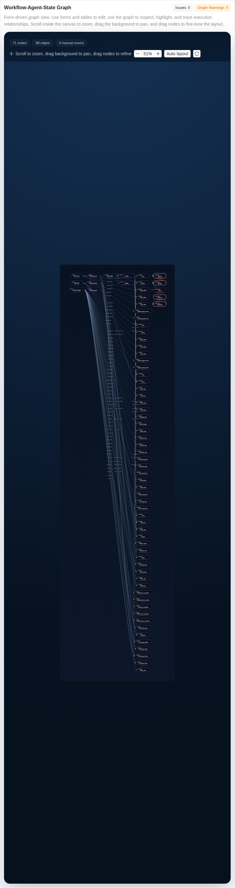

AeroAgentSim Documentation
AeroAgentSim combines a discrete-event simulation core with a developer workbench for configuration editing, workflow inspection, runtime validation, and execution analysis.
Getting Started
This guide gets you running with the current AeroAgentSim repository quickly.
Install
python -m venv aeroagentsim_env
source aeroagentsim_env/bin/activate
pip install -e .[dev]
Verify imports:
python -c "import aeroagentsim, airfogsim; from aeroagentsim import Environment; from airfogsim import Environment as LegacyEnvironment; print(Environment.__name__, Environment is LegacyEnvironment)"
First Simulation
from aeroagentsim import Environment
from aeroagentsim.agent import DroneAgent
from aeroagentsim.component import MoveToComponent
env = Environment()
drone = env.create_agent(
DroneAgent,
"drone1",
properties={
"position": [0, 0, 20],
"battery_level": 100,
},
)
drone.add_component(MoveToComponent(env, drone))
env.run(until=100)
Start the Workbench
python main_for_visualization.py --backend-port 8002 --frontend-port 3000
The current workbench provides:
OverviewClass CatalogWorkflow StudioRun ConsoleTrajectories & Logs
Workflow Studio combines form-based editing with an interactive relation graph. Zoom stays inside the graph canvas, blank-canvas dragging pans the viewport, and node dragging refines the local layout for inspection.
{kind=link}

Runtime Layout
Config saves create immutable snapshots in runtime/aeroagentsim/configs/.
Each simulation launch creates a unique run_id under runtime/aeroagentsim/runs/ with logs, workflow states, trajectories, spatial snapshots, and metrics stored separately.
Browser Validation
For browser-level frontend testing, install Python Playwright in the active environment and then install Chromium:
pip install playwright
python -m playwright install chromium
User Guide
This guide covers the current AeroAgentSim usage model.
Core Patterns
Agent-Component-Task Workflow
Agents own components, components execute tasks, and workflows coordinate higher-level behavior.
from aeroagentsim import Environment
from aeroagentsim.agent import DroneAgent
from aeroagentsim.component import ChargingComponent, MoveToComponent
env = Environment()
drone = env.create_agent(
DroneAgent,
"drone1",
properties={
"position": [0, 0, 20],
"battery_level": 100,
},
)
drone.add_component(MoveToComponent(env, drone))
drone.add_component(ChargingComponent(env, drone))
Configuration and Runs
The workbench uses two different persistence concepts:
config snapshots
runs identified by
run_id
Config snapshots are immutable and stored under runtime/aeroagentsim/configs/. Run artifacts are stored under runtime/aeroagentsim/runs/<run_id>/.
Custom definitions are stored separately under registry/aeroagentsim/agents/, registry/aeroagentsim/tasks/, and registry/aeroagentsim/workflows/. These files are the source of truth for custom registry content.
2D Workbench
The current frontend is a developer workbench with 2D runtime views, workflow inspection, validation, and run analysis.
Workflow Studio
Use Workflow Studio to:
edit agent definitions in table form
edit workflow definitions in table and JSON form
select builtin or custom definitions from a merged catalog
run page-local
Validateon the current draftuse global
Review / Validatefor aggregated checksinspect workflow-agent-state coupling through the relation graph
zoom inside the graph canvas, pan the viewport from blank background, and drag nodes to refine local layout without changing the underlying config
Workflow Studio validation is draft-oriented. It should evaluate the current working form state instead of only the last saved snapshot.
Class Catalog
Use Class Catalog to:
inspect builtin and custom definitions together
review definition source and version
create or update declarative custom definitions
check definition-level validation before using them in configs
Run Console
Run Console is the operational view for:
starting, pausing, resuming, and resetting runs
observing critical path markers
following live log events
viewing the live 2D spatial snapshot
Run start is gated by runtime preflight. Warnings can still allow launch, but preflight errors block POST /api/runs.
The UI supports zh-CN and en-US switching at the global header level. Raw runtime log content is not automatically translated.
Trajectories and Logs
Historical inspection is organized by run_id and focuses on:
trajectory polylines
log filtering
run-specific spatial snapshots
refresh-by-run inspection after reset or stop
API Interaction Model
The current workbench uses:
REST for control and configuration requests
WebSocket for
sim_status,workflow_state_diff,spatial_snapshot, andlog_event
Registry CRUD and validation are also handled through REST so that custom definitions can be created, checked, versioned, and referenced without exposing executable code upload paths.
Active-run control is intentionally narrow: /api/runs/{run_id}/pause|resume|reset applies only to the active run and returns 409 for historical runs.
Current frontend interaction is centered on the workbench pages listed above and the FastAPI-backed runtime services used by those pages.
API Reference
This section provides comprehensive API documentation for the current
aeroagentsim package. The AeroAgentSim workbench is built on top of these
runtime primitives.
Core Framework
The core framework provides the fundamental building blocks for AeroAgentSim simulations. These base classes define the architecture and interfaces that all other components build upon.
Environment
AirFogSim环境(Environment)核心模块
该模块定义了仿真系统的核心环境类，继承自SimPy的Environment类。 环境是整个仿真系统的容器，负责协调各种管理器、代理和资源的运行。 主要功能包括： 1. 管理仿真时间和事件流 2. 管理各种资源（空域、频率、着陆点等） 3. 注册和管理代理(Agent) 4. 创建和管理工作流(Workflow) 5. 创建和管理触发器(Trigger) 6. 提供数据存储和可视化更新
@author: zhiwei wei @email: 2311769@tongji.edu.cn
- class aeroagentsim.core.environment.Environment(*args: Any, **kwargs: Any)
Bases:
Environment- __init__(initial_time=0, visual_interval=5, logger=None, **kwargs)
- property now
- register_agent(agent)
- get_agent(agent_id)
- get_all_agents()
- add_data_provider(key, provider)
Registers a DataProvider instance with the environment.
- Parameters:
key (str) – A unique key to identify the provider (e.g., ‘weather’, ‘traffic’).
provider (DataProvider) – The DataProvider instance to register.
- get_data_provider(key)
Retrieves a registered DataProvider instance by its key.
- Parameters:
key (str) – The key of the DataProvider to retrieve.
- Returns:
The DataProvider instance, or None if not found.
- Return type:
Optional[DataProvider]
- store_data(key, value)
- get_data(key, default=None)
- class Trigger(env, trigger_type, name=None)
Bases:
object触发器基类
- __init__(env, trigger_type, name=None)
- activate()
激活触发器
- add_callback(callback)
添加触发时的回调函数
- deactivate()
停用触发器
- has_reached_max()
检查是否达到最大触发次数
- set_max_triggers(max_count)
设置最大触发次数
- create_workflow(workflow_class, name, owner=None, start_trigger=None, max_starts=1, **kwargs)
- Return type:
Workflow
- create_agent(agent_class, agent_name, **kwargs)
Create an agent instance and optionally attach pre-defined components.
This extends the original helper to support a
componentskeyword used by TCCN_auto_planner. Any provided components are instantiated after the base agent is created and then attached viaagent.add_component(...).- Return type:
- create_event_trigger(source_id, event_name, value_key=None, operator=None, target_value=None, name=None)
- create_state_trigger(agent_id, state_key, operator=TriggerOperator.EQUALS, target_value=None, name=None)
- create_time_trigger(trigger_time=None, interval=None, cron_expr=None, name=None)
- create_composite_trigger(triggers, operator_type='and', name=None)
Agent
The Agent class is the base class for all autonomous entities in the simulation.
- class aeroagentsim.core.agent.Agent(env, agent_name, properties=None)
Bases:
objectAgent 类是 AirFogSim 中所有代理的基类。
Agent 提供了以下核心功能： 1. 状态管理：管理代理的状态属性 2. 组件管理：管理代理的组件 3. 任务管理：管理代理的任务队列和执行 4. 工作流管理：处理分配给代理的工作流 5. 事件管理：注册、触发和处理事件 6. 对象持有管理：管理代理拥有的外部对象 7. 合约管理：创建和管理代理间的合约
子类可以通过重写以下钩子方法来添加自定义行为： - register_event_listeners(): 注册自定义事件监听器 - _before_event_wait(): 在等待事件之前执行 - _check_agent_status(): 检查代理状态并决定是否继续处理 - _process_custom_logic(): 执行代理特定的逻辑
- classmethod __init_subclass__(**kwargs)
Initialize subclass with core status template
- classmethod register_state_template(key, **kwargs)
Registers a state template for this Agent class.
- classmethod get_description()
获取代理类型的描述
- __init__(env, agent_name, properties=None)
- initialize_states(level_class=None, **states)
- classmethod get_state_templates()
- get_current_states()
- get_state(key, default=None)
获取状态值，支持复合状态访问（如 ‘charging_station.status’）
- Parameters:
key – 状态键，可以是简单键或复合键（用点分隔）
default – 如果状态不存在，返回的默认值
- Returns:
状态值或默认值
- set_state(key, value)
- has_state(key)
检查状态是否存在，支持复合状态
- Parameters:
key – 状态键，可以是简单键或复合键（用点分隔）
- Returns:
布尔值，表示状态是否存在
- update_states(state_dict)
- update_state(key, value)
- add_component(component)
- class Component(env, agent, name=None, supported_events=[], properties=None)
Bases:
object执行任务的组件，使用分配的资源。
- MONITORED_STATES = []
- PRODUCED_METRICS = []
- __init__(env, agent, name=None, supported_events=[], properties=None)
- disable()
禁用组件，将其设置为错误状态并取消所有正在执行的任务
- enable()
启用组件，将其从错误状态恢复
- execute_task(task)
开始执行任务。返回包含完整生命周期的SimPy进程。 由Agent调用。
- Return type:
Process
- trigger_event(event_name, event_value=None)
触发组件命名空间下的事件。
- active_tasks: Dict[str, Task]
- task_processes: Dict[str, simpy.Process]
- get_components()
- get_details()
获取代理详细信息
- cancel_task(task_id)
取消指定的任务。在组件级别查找任务进程。
- Parameters:
task_id – 要取消的任务ID
- Returns:
如果任务成功取消则返回True，否则返回False
- Return type:
- has_event(event_name)
- get_event(event_name)
- trigger_event(event_name, value=None)
- subscribe(source_id, event_name, callback, listener_id=None)
- unsubscribe(source_id, event_name, listener_id)
- unsubscribe_all()
- register_event_listeners()
注册代理需要监听的事件
子类可以重写此方法来注册自定义事件监听器
- Returns:
- 事件监听器列表，每个监听器包含以下字段：
source_id: 事件源ID，如代理ID
event_name: 事件名称，如 ‘workflow_assigned’、’task_completed’ 等
callback: 事件处理函数，接收事件数据作为参数
- Return type:
List[Dict]
- cleanup()
清理代理资源，包括取消事件监听和触发器
- get_active_workflows()
获取代理的活跃工作流
- add_task_to_queue(component_name, task_name, task_class, priority=None, preemptive=False, target_state=None, properties=None, workflow_id=None)
添加任务到队列
- get_component_tasks(component_name)
获取指定组件正在执行的任务
- Parameters:
component_name – 组件名称
- Returns:
任务信息列表
- Return type:
List
- live()
代理的主要行为逻辑。
该方法实现了基本的事件监听和任务处理逻辑，包括： 1. 初始化任务调度器 2. 注册事件监听器 3. 监听注册的事件 4. 执行代理特定的行为
子类可以通过重写以下方法来添加自定义行为： - register_event_listeners(): 注册自定义事件监听器 - _before_event_wait(): 在等待事件之前执行 - _check_agent_status(): 检查代理状态并决定是否继续处理 - _process_custom_logic(): 执行代理特定的逻辑
注意：子类通常不应该重写此方法，而是通过重写上述钩子方法来添加自定义行为。 这样可以确保代理的核心行为逻辑保持一致。
- class Task(env, agent, component_name, task_name, workflow_id=None, target_state=None, properties=None)
Bases:
object- NECESSARY_METRICS = []
- PRODUCED_STATES = []
Represents a specific action performed by a component, initiated by an agent.
- __init__(env, agent, component_name, task_name, workflow_id=None, target_state=None, properties=None)
- can_preempt(other_task)
检查当前任务是否可以抢占另一个任务
- Parameters:
other_task – 另一个任务
- Returns:
如果当前任务可以抢占另一个任务，则返回True
- Return type:
- cancel(reason, timestamp)
- complete()
- execute(env, initial_metrics)
Core task execution logic. Should be a generator function (SimPy process). Run within the component’s execution context.
- fail(reason)
- get_priority_info()
获取任务优先级信息
- Returns:
包含优先级和抢占信息的字典
- Return type:
Dict
- on_preempted()
当任务被抢占时调用
-
status:
TaskStatus
- execute_task(component_name, task_name, task_class, target_state=None, properties=None, workflow_id=None, task_id=None)
Creates and executes a task using a specified component. Non-blocking - returns task object immediately.
- add_possessing_object(object_name, obj)
添加代理拥有的对象，并监听其状态变化事件
- remove_possessing_object(object_name)
移除代理拥有的对象，并取消相关事件订阅
- get_possessing_object(object_name)
获取代理拥有的对象
- create_contract(task_info, target_agent_ids, reward, penalty=0, deadline=None, description='')
创建任务卸载合约
- Parameters:
task_info – 任务信息字典，必须包含id字段
target_agent_ids – 目标代理ID列表
reward – 完成任务的奖励
penalty – 未完成任务的惩罚
deadline – 截止时间，默认为当前时间+30分钟
description – 任务描述
- Returns:
合约ID，如果创建失败则返回None
- Return type:
- accept_contract(contract_id)
接受合约
- Parameters:
contract_id – 合约ID
- Returns:
是否成功接受合约
- Return type:
Key Methods
State Management
- Agent.get_state(key, default=None)
获取状态值，支持复合状态访问（如 ‘charging_station.status’）
- Parameters:
key – 状态键，可以是简单键或复合键（用点分隔）
default – 如果状态不存在，返回的默认值
- Returns:
状态值或默认值
- Agent.update_state(key, value)
- Agent.has_state(key)
检查状态是否存在，支持复合状态
- Parameters:
key – 状态键，可以是简单键或复合键（用点分隔）
- Returns:
布尔值，表示状态是否存在
- Agent.initialize_states(level_class=None, **states)
Component Management
- Agent.add_component(component)
- Agent.get_components()
Task Management
- Agent.execute_task(component_name, task_name, task_class, target_state=None, properties=None, workflow_id=None, task_id=None)
Creates and executes a task using a specified component. Non-blocking - returns task object immediately.
Event Handling
- Agent.get_event(event_name)
- Agent.subscribe(source_id, event_name, callback, listener_id=None)
Hook Methods
These methods can be overridden by subclasses to customize behavior:
- Agent._before_event_wait()
在等待事件之前执行的逻辑。
该钩子方法在每次等待事件之前被调用。 子类可以重写此方法来添加自定义行为。
- Agent._check_agent_status()
检查代理状态并决定是否继续处理。
该钩子方法在每次事件循环中被调用，用于决定是否继续处理事件。 子类可以重写此方法来添加自定义状态检查逻辑。
- Returns:
如果代理状态允许继续处理，则返回 True，否则返回 False
- Return type:
- Agent.register_event_listeners()
注册代理需要监听的事件
子类可以重写此方法来注册自定义事件监听器
- Returns:
- 事件监听器列表，每个监听器包含以下字段：
source_id: 事件源ID，如代理ID
event_name: 事件名称，如 ‘workflow_assigned’、’task_completed’ 等
callback: 事件处理函数，接收事件数据作为参数
- Return type:
List[Dict]
Component
The Component class provides functional capabilities to agents.
- class aeroagentsim.core.component.Component(env, agent, name=None, supported_events=[], properties=None)
Bases:
object执行任务的组件，使用分配的资源。
- PRODUCED_METRICS = []
- MONITORED_STATES = []
- __init__(env, agent, name=None, supported_events=[], properties=None)
- active_tasks: Dict[str, Task]
- task_processes: Dict[str, simpy.Process]
- trigger_event(event_name, event_value=None)
触发组件命名空间下的事件。
- execute_task(task)
开始执行任务。返回包含完整生命周期的SimPy进程。 由Agent调用。
- Return type:
Process
- disable()
禁用组件，将其设置为错误状态并取消所有正在执行的任务
- enable()
启用组件，将其从错误状态恢复
Key Methods
Task Execution
- Component.execute_task(task)
开始执行任务。返回包含完整生命周期的SimPy进程。 由Agent调用。
- Return type:
Process
Performance Metrics
State Monitoring
- Component._on_agent_state_changed(event_data)
当代理状态改变时的回调。
- Parameters:
event_data – 包含状态变化信息的字典，格式为 {‘key’: 状态键, ‘old_value’: 旧值, ‘new_value’: 新值, ‘time’: 时间}
Component Control
- Component.disable()
禁用组件，将其设置为错误状态并取消所有正在执行的任务
- Component.enable()
启用组件，将其从错误状态恢复
Task
AirFogSim任务(Task)核心模块
该模块定义了仿真系统中的任务类。任务是代理通过组件执行的具体动作， 可以改变代理的状态和拥有的对象。主要内容包括： 1. Task类：任务基类，定义了任务的生命周期、执行逻辑和状态管理 2. 任务状态管理：包括进度跟踪、完成、失败和取消等状态转换 3. 代理对象操作：任务可以在完成、失败或取消时操作代理拥有的对象
@author: zhiwei wei @email: 2311769@tongji.edu.cn
- class aeroagentsim.core.task.Task(env, agent, component_name, task_name, workflow_id=None, target_state=None, properties=None)
Bases:
object- NECESSARY_METRICS = []
- PRODUCED_STATES = []
Represents a specific action performed by a component, initiated by an agent.
- __init__(env, agent, component_name, task_name, workflow_id=None, target_state=None, properties=None)
-
status:
TaskStatus
- execute(env, initial_metrics)
Core task execution logic. Should be a generator function (SimPy process). Run within the component’s execution context.
- can_preempt(other_task)
检查当前任务是否可以抢占另一个任务
- Parameters:
other_task – 另一个任务
- Returns:
如果当前任务可以抢占另一个任务，则返回True
- Return type:
- on_preempted()
当任务被抢占时调用
- get_priority_info()
获取任务优先级信息
- Returns:
包含优先级和抢占信息的字典
- Return type:
Dict
- complete()
- fail(reason)
- cancel(reason, timestamp)
Workflow
The Workflow class coordinates high-level processes and goals.
- class aeroagentsim.core.workflow.Workflow(env, name, owner, timeout=None, event_names=[], initial_status='idle', callback=None, properties=None)
Bases:
objectRepresents a process/goal tracked by a state machine based on Agent state.
- class Agent(env, agent_name, properties=None)
Bases:
objectAgent 类是 AirFogSim 中所有代理的基类。
Agent 提供了以下核心功能： 1. 状态管理：管理代理的状态属性 2. 组件管理：管理代理的组件 3. 任务管理：管理代理的任务队列和执行 4. 工作流管理：处理分配给代理的工作流 5. 事件管理：注册、触发和处理事件 6. 对象持有管理：管理代理拥有的外部对象 7. 合约管理：创建和管理代理间的合约
子类可以通过重写以下钩子方法来添加自定义行为： - register_event_listeners(): 注册自定义事件监听器 - _before_event_wait(): 在等待事件之前执行 - _check_agent_status(): 检查代理状态并决定是否继续处理 - _process_custom_logic(): 执行代理特定的逻辑
- class Component(env, agent, name=None, supported_events=[], properties=None)
Bases:
object执行任务的组件，使用分配的资源。
- MONITORED_STATES = []
- PRODUCED_METRICS = []
- __init__(env, agent, name=None, supported_events=[], properties=None)
- disable()
禁用组件，将其设置为错误状态并取消所有正在执行的任务
- enable()
启用组件，将其从错误状态恢复
- execute_task(task)
开始执行任务。返回包含完整生命周期的SimPy进程。 由Agent调用。
- Return type:
Process
- trigger_event(event_name, event_value=None)
触发组件命名空间下的事件。
- active_tasks: Dict[str, Task]
- task_processes: Dict[str, simpy.Process]
- class Task(env, agent, component_name, task_name, workflow_id=None, target_state=None, properties=None)
Bases:
object- NECESSARY_METRICS = []
- PRODUCED_STATES = []
Represents a specific action performed by a component, initiated by an agent.
- __init__(env, agent, component_name, task_name, workflow_id=None, target_state=None, properties=None)
- can_preempt(other_task)
检查当前任务是否可以抢占另一个任务
- Parameters:
other_task – 另一个任务
- Returns:
如果当前任务可以抢占另一个任务，则返回True
- Return type:
- cancel(reason, timestamp)
- complete()
- execute(env, initial_metrics)
Core task execution logic. Should be a generator function (SimPy process). Run within the component’s execution context.
- fail(reason)
- get_priority_info()
获取任务优先级信息
- Returns:
包含优先级和抢占信息的字典
- Return type:
Dict
- on_preempted()
当任务被抢占时调用
-
status:
TaskStatus
- __init__(env, agent_name, properties=None)
- classmethod __init_subclass__(**kwargs)
Initialize subclass with core status template
- accept_contract(contract_id)
接受合约
- Parameters:
contract_id – 合约ID
- Returns:
是否成功接受合约
- Return type:
- add_component(component)
- add_possessing_object(object_name, obj)
添加代理拥有的对象，并监听其状态变化事件
- add_task_to_queue(component_name, task_name, task_class, priority=None, preemptive=False, target_state=None, properties=None, workflow_id=None)
添加任务到队列
- cancel_task(task_id)
取消指定的任务。在组件级别查找任务进程。
- Parameters:
task_id – 要取消的任务ID
- Returns:
如果任务成功取消则返回True，否则返回False
- Return type:
- cleanup()
清理代理资源，包括取消事件监听和触发器
- create_contract(task_info, target_agent_ids, reward, penalty=0, deadline=None, description='')
创建任务卸载合约
- Parameters:
task_info – 任务信息字典，必须包含id字段
target_agent_ids – 目标代理ID列表
reward – 完成任务的奖励
penalty – 未完成任务的惩罚
deadline – 截止时间，默认为当前时间+30分钟
description – 任务描述
- Returns:
合约ID，如果创建失败则返回None
- Return type:
- execute_task(component_name, task_name, task_class, target_state=None, properties=None, workflow_id=None, task_id=None)
Creates and executes a task using a specified component. Non-blocking - returns task object immediately.
- get_active_workflows()
获取代理的活跃工作流
- get_agent_contracts(role=None, status=None)
获取代理相关的合约
- Parameters:
role – 角色，’issuer’或’executor’
status – 合约状态
- Returns:
合约列表
- Return type:
- get_component_tasks(component_name)
获取指定组件正在执行的任务
- Parameters:
component_name – 组件名称
- Returns:
任务信息列表
- Return type:
List
- get_components()
- get_current_states()
- classmethod get_description()
获取代理类型的描述
- get_details()
获取代理详细信息
- get_event(event_name)
- get_possessing_object(object_name)
获取代理拥有的对象
- get_state(key, default=None)
获取状态值，支持复合状态访问（如 ‘charging_station.status’）
- Parameters:
key – 状态键，可以是简单键或复合键（用点分隔）
default – 如果状态不存在，返回的默认值
- Returns:
状态值或默认值
- classmethod get_state_templates()
- has_event(event_name)
- has_state(key)
检查状态是否存在，支持复合状态
- Parameters:
key – 状态键，可以是简单键或复合键（用点分隔）
- Returns:
布尔值，表示状态是否存在
- initialize_states(level_class=None, **states)
- live()
代理的主要行为逻辑。
该方法实现了基本的事件监听和任务处理逻辑，包括： 1. 初始化任务调度器 2. 注册事件监听器 3. 监听注册的事件 4. 执行代理特定的行为
子类可以通过重写以下方法来添加自定义行为： - register_event_listeners(): 注册自定义事件监听器 - _before_event_wait(): 在等待事件之前执行 - _check_agent_status(): 检查代理状态并决定是否继续处理 - _process_custom_logic(): 执行代理特定的逻辑
注意：子类通常不应该重写此方法，而是通过重写上述钩子方法来添加自定义行为。 这样可以确保代理的核心行为逻辑保持一致。
- register_event_listeners()
注册代理需要监听的事件
子类可以重写此方法来注册自定义事件监听器
- Returns:
- 事件监听器列表，每个监听器包含以下字段：
source_id: 事件源ID，如代理ID
event_name: 事件名称，如 ‘workflow_assigned’、’task_completed’ 等
callback: 事件处理函数，接收事件数据作为参数
- Return type:
List[Dict]
- classmethod register_state_template(key, **kwargs)
Registers a state template for this Agent class.
- remove_possessing_object(object_name)
移除代理拥有的对象，并取消相关事件订阅
- set_state(key, value)
- subscribe(source_id, event_name, callback, listener_id=None)
- trigger_event(event_name, value=None)
- unsubscribe(source_id, event_name, listener_id)
- unsubscribe_all()
- update_state(key, value)
- update_states(state_dict)
- class TaskPriority(value)
Bases:
JSONSerializableEnum任务优先级枚举
定义了任务的优先级级别，从低到高依次为：LOW、NORMAL、HIGH、CRITICAL。 用于在资源竞争时决定任务的执行顺序和抢占策略。
- classmethod from_string(priority_str)
从字符串转换为优先级枚举
- LOW = 0
- NORMAL = 1
- HIGH = 2
- CRITICAL = 3
- classmethod register_property_template(key, **kwargs)
注册工作流属性模板
- classmethod get_property_templates()
获取所有属性模板
- classmethod get_transition_tasks()
获取所有状态转换任务
- classmethod get_description()
获取工作流类型的描述
- __init__(env, name, owner, timeout=None, event_names=[], initial_status='idle', callback=None, properties=None)
- get_details()
获取工作流详细信息，子类应该重写此方法提供更多详细信息
- is_active()
检查工作流是否处于活动状态
- get_current_suggested_task()
获取当前状态下建议执行的任务
根据当前状态机状态和可能的转换，返回预先定义的任务信息。 这个方法可以被代理用来自动规划任务，而不需要复杂的决策逻辑。 任务会继承工作流的优先级和抢占属性。
- 返回:
Dict: 任务信息字典，包含组件名称、任务类、任务名称等信息 None: 如果没有找到匹配的任务
- start()
Starts the workflow’s state machine (if PENDING). Called by WM.
- Return type:
Optional[Process]
- update_status_from_state_machine(new_sm_state, event_details=None, timestamp=None)
根据状态机状态更新工作流状态
- reset()
重置工作流状态，包括状态机
Key Methods
Workflow Control
- Workflow.start()
Starts the workflow’s state machine (if PENDING). Called by WM.
- Return type:
Optional[Process]
- Workflow.reset()
重置工作流状态，包括状态机
State Machine
- Workflow.is_active()
检查工作流是否处于活动状态
- Workflow.get_current_suggested_task()
获取当前状态下建议执行的任务
根据当前状态机状态和可能的转换，返回预先定义的任务信息。 这个方法可以被代理用来自动规划任务，而不需要复杂的决策逻辑。 任务会继承工作流的优先级和抢占属性。
- 返回:
Dict: 任务信息字典，包含组件名称、任务类、任务名称等信息 None: 如果没有找到匹配的任务
- Workflow.update_status_from_state_machine(new_sm_state, event_details=None, timestamp=None)
根据状态机状态更新工作流状态
DataProvider
The DataProvider class integrates external data sources into simulations.
- class aeroagentsim.core.dataprovider.DataProvider(env, config=None)
Bases:
ABCAbstract base class for external data providers (e.g., weather, traffic).
DataProviders load external data and trigger events within the simulation environment based on that data at appropriate times. They also provide standard callback functions that Agents or Managers can subscribe to, allowing the external data to passively influence the simulation state.
- __init__(env, config=None)
Initialize the DataProvider.
- Parameters:
env – The simulation environment instance.
config (dict, optional) – Configuration specific to this provider. Defaults to None.
- abstract load_data()
Load the external data required by this provider. This could involve reading from files, databases, or APIs. This method should be called before the simulation starts.
- abstract start_event_triggering()
Start the process(es) that will trigger events based on the loaded data at the appropriate simulation times. This method is typically called after load_data and before env.run(). It might start one or more SimPy processes.
- block(duration)
Block this data provider for a specified duration. When blocked, the provider should not trigger events or provide data.
- Parameters:
duration (
float) – The duration (in simulation time) to block the provider.
- unblock()
Unblock this data provider. After unblocking, the provider can resume triggering events and providing data.
- register_source(provider)
Register another data provider as a source for this provider. This allows providers to interact with each other.
- Parameters:
provider – The data provider to register as a source.
- get_registered_sources(provider_type=None)
Get all registered sources, optionally filtered by type.
- Parameters:
provider_type – Optional type to filter sources by.
- Returns:
List of registered sources, filtered by type if specified.
Key Methods
Data Integration
- abstract DataProvider.load_data()
Load the external data required by this provider. This could involve reading from files, databases, or APIs. This method should be called before the simulation starts.
- abstract DataProvider.start_event_triggering()
Start the process(es) that will trigger events based on the loaded data at the appropriate simulation times. This method is typically called after load_data and before env.run(). It might start one or more SimPy processes.
Provider Control
- DataProvider.block(duration)
Block this data provider for a specified duration. When blocked, the provider should not trigger events or provide data.
- Parameters:
duration (
float) – The duration (in simulation time) to block the provider.
- DataProvider.unblock()
Unblock this data provider. After unblocking, the provider can resume triggering events and providing data.
Event System
AirFogSim事件(Event)核心模块
该模块实现了仿真系统的事件处理机制，基于发布-订阅模式设计， 允许系统中的不同组件（代理、任务、资源等）之间进行松耦合通信。 主要内容包括： 1. EventSubscription：事件订阅类，包含订阅信息和过滤功能 2. EventRegistry：事件注册表，管理所有事件和订阅关系 3. 支持特定事件和通配符订阅 4. 异步事件通知和回调执行
@author: zhiwei wei @email: 2311769@tongji.edu.cn
- class aeroagentsim.core.event.EventSubscription(source_id, event_name, listener_id, callback=None)
Bases:
object- __init__(source_id, event_name, listener_id, callback=None)
- add_source_filter(filter_func)
- add_listener_filter(filter_func)
- match_filters(event_value)
- class aeroagentsim.core.event.EventRegistry(env, logger=None)
Bases:
object- __init__(env, logger=None)
- get_registered_events(source_id)
- get_all_agent_sources()
- has_event(source_id, event_name)
- get_event(source_id, event_name)
- subscribe(source_id, event_name, listener_id, callback=None)
- unsubscribe(source_id, event_name, listener_id)
- unsubscribe_all(listener_id)
Unsubscribe a listener from all events it’s subscribed to.
- trigger_event(source_id, event_name, event_value=None)
Trigger System
AirFogSim触发器(Trigger)核心模块
该模块实现了仿真系统中的触发器机制，用于在特定条件满足时执行相应的操作。 触发器是工作流和自动化任务的核心组件，支持多种触发方式和组合条件。主要内容包括： 1. Trigger基类：定义触发器的通用属性和行为 2. EventTrigger：基于事件的触发器，监听特定事件并在满足条件时触发 3. StateTrigger：基于代理状态的触发器，监听状态变化并在满足条件时触发 4. TimeTrigger：基于时间的触发器，在特定时间点或间隔触发 5. CompositeTrigger：组合触发器，将多个触发器组合成复杂的触发条件
@author: zhiwei wei @email: 2311769@tongji.edu.cn
- aeroagentsim.core.trigger.get_nested_value(data, key_path, default=None)
从嵌套字典中获取值，支持点分隔的路径
- class aeroagentsim.core.trigger.Trigger(env, trigger_type, name=None)
Bases:
object触发器基类
- __init__(env, trigger_type, name=None)
- add_callback(callback)
添加触发时的回调函数
- set_max_triggers(max_count)
设置最大触发次数
- activate()
激活触发器
- deactivate()
停用触发器
- has_reached_max()
检查是否达到最大触发次数
- class aeroagentsim.core.trigger.EventTrigger(env, source_id, event_name, value_key=None, operator=None, target_value=None, name=None)
Bases:
Trigger基于事件及其状态的触发器，如数据传输成功后传输的数据量判断是否成功
- __init__(env, source_id, event_name, value_key=None, operator=None, target_value=None, name=None)
- class aeroagentsim.core.trigger.StateTrigger(env, agent_id, state_key, operator=TriggerOperator.EQUALS, target_value=None, name=None)
Bases:
Trigger基于agent单一状态的触发器，对于多种状态联合监听，可以直接使用composite trigger
- __init__(env, agent_id, state_key, operator=TriggerOperator.EQUALS, target_value=None, name=None)
Enumerations
AirFogSim枚举(Enums)核心模块
该模块定义了仿真系统中使用的各种枚举类型，包括任务状态、工作流状态、 代理状态、资源状态等。模块还提供了可JSON序列化的枚举基类和辅助工具， 使枚举值可以方便地在系统内部传递和持久化。主要内容包括： 1. JSONSerializableEnum：可序列化的枚举基类 2. 各种状态枚举：TaskStatus, WorkflowStatus, AgentStatus等 3. 资源相关枚举：ResourceType, AllocationStatus等 4. 触发器相关枚举：TriggerType, TriggerOperator等
@author: zhiwei wei @email: 2311769@tongji.edu.cn
- aeroagentsim.core.enums.get_enum_name_by_value(enum_class, value)
- class aeroagentsim.core.enums.ContractStatus(value)
Bases:
Enum合约状态枚举
- PENDING = 'con_pending'
- ACTIVE = 'con_active'
- COMPLETED = 'con_completed'
- FAILED = 'con_failed'
- CANCELED = 'con_canceled'
- class aeroagentsim.core.enums.EnumJSONEncoder(*, skipkeys=False, ensure_ascii=True, check_circular=True, allow_nan=True, sort_keys=False, indent=None, separators=None, default=None)
Bases:
JSONEncoder用于序列化枚举类型的JSON编码器
- default(obj)
Implement this method in a subclass such that it returns a serializable object for
o, or calls the base implementation (to raise aTypeError).For example, to support arbitrary iterators, you could implement default like this:
def default(self, o): try: iterable = iter(o) except TypeError: pass else: return list(iterable) # Let the base class default method raise the TypeError return JSONEncoder.default(self, o)
- class aeroagentsim.core.enums.JSONSerializableEnum(value)
Bases:
Enum可JSON序列化的枚举基类 提供了to_json和from_json方法用于序列化和反序列化
- to_json()
返回可JSON序列化的表示
- __json__()
支持json.dumps直接序列化
- classmethod from_json(data)
- class aeroagentsim.core.enums.TaskStatus(value)
Bases:
JSONSerializableEnum任务状态枚举
- PENDING = 'PENDING'
- RUNNING = 'RUNNING'
- COMPLETED = 'COMPLETED'
- FAILED = 'FAILED'
- CANCELED = 'CANCELED'
- SUSPENDED = 'SUSPENDED'
- class aeroagentsim.core.enums.WorkflowStatus(value)
Bases:
JSONSerializableEnumAn enumeration.
- PENDING = 'PENDING'
- RUNNING = 'RUNNING'
- COMPLETED = 'COMPLETED'
- FAILED = 'FAILED'
- TIMEOUT = 'TIMEOUT'
- CANCELED = 'CANCELED'
- SUSPENDED = 'SUSPENDED'
- class aeroagentsim.core.enums.AgentStatus(value)
Bases:
JSONSerializableEnumAgent状态枚举
- AVAILABLE = 'AVAILABLE'
- BUSY = 'BUSY'
- MAINTENANCE = 'MAINTENANCE'
- OFFLINE = 'OFFLINE'
- UNAVAILABLE = 'UNAVAILABLE'
- class aeroagentsim.core.enums.ResourceStatus(value)
Bases:
JSONSerializableEnum资源状态枚举
- AVAILABLE = 'AVAILABLE'
- PARTIALLY_ALLOCATED = 'PARTIALLY_ALLOCATED'
- FULLY_ALLOCATED = 'FULLY_ALLOCATED'
- MAINTENANCE = 'MAINTENANCE'
- UNAVAILABLE = 'UNAVAILABLE'
- UNAVAILABLE_WEATHER = 'UNAVAILABLE_WEATHER'
- class aeroagentsim.core.enums.UnitStatus(value)
Bases:
JSONSerializableEnumAn enumeration.
- AVAILABLE = 'AVAILABLE'
- ALLOCATED = 'ALLOCATED'
- MAINTENANCE = 'MAINTENANCE'
- FAULTY = 'FAULTY'
- class aeroagentsim.core.enums.ResourceType(value)
Bases:
JSONSerializableEnumAn enumeration.
- CONTINUOUS = 'CONTINUOUS'
- DISCRETE = 'DISCRETE'
- BANDWIDTH = 'BANDWIDTH'
- class aeroagentsim.core.enums.EventStatus(value)
Bases:
JSONSerializableEnum事件状态枚举
- COMPLETED = 'COMPLETED'
- FAILED = 'FAILED'
- CREATED = 'CREATED'
- PROCESSING = 'PROCESSING'
- PENDING = 'PENDING'
- class aeroagentsim.core.enums.TriggerType(value)
Bases:
JSONSerializableEnum触发器类型枚举
- EVENT = 'event'
- STATE = 'state'
- TIME = 'time'
- COMPOSITE = 'composite'
- class aeroagentsim.core.enums.TriggerOperator(value)
Bases:
JSONSerializableEnum组合触发器的操作符
- AND = 'and'
- OR = 'or'
- EQUALS = 'equals'
- NOT_EQUALS = 'not_equals'
- GREATER_THAN = 'greater_than'
- LESS_THAN = 'less_than'
- GREATER_EQUAL = 'greater_equal'
- LESS_EQUAL = 'less_equal'
- CONTAINS = 'contains'
- NOT_CONTAINS = 'not_contains'
- CUSTOM = 'custom'
- class aeroagentsim.core.enums.TaskPriority(value)
Bases:
JSONSerializableEnum任务优先级枚举
定义了任务的优先级级别，从低到高依次为：LOW、NORMAL、HIGH、CRITICAL。 用于在资源竞争时决定任务的执行顺序和抢占策略。
- LOW = 0
- NORMAL = 1
- HIGH = 2
- CRITICAL = 3
- classmethod from_string(priority_str)
从字符串转换为优先级枚举
- class aeroagentsim.core.enums.AllocationStatus(value)
Bases:
JSONSerializableEnum资源分配状态枚举，典型的预留工作流程是： 1. 客户端请求预留资源（调用reserve方法） 2. 系统检查未来时间窗口的可用性 3. 如果可用，创建一个PENDING状态的分配；如果不可用，创建一个REJECTED状态的分配 4. 客户端在需要时确认使用（可能通过一个confirm_reservation方法，将状态从PENDING改为ACTIVE） 5. 如果客户端不再需要，可以取消预留 PENDING -> CANCELLED 6. 如果时间窗口过期，取消预留 PENDING -> EXPIRED 7. 完成使用后，释放资源 ACTIVE -> RELEASED
- ACTIVE = 'ACTIVE'
- RELEASED = 'RELEASED'
- EXPIRED = 'EXPIRED'
- PENDING = 'PENDING'
- CANCELLED = 'CANCELLED'
- REJECTED = 'REJECTED'
Utilities
AirFogSim工具(Utils)核心模块
该模块提供了仿真系统中使用的各种实用工具函数和类，主要用于处理 空间位置、距离计算和物理量表示等通用功能。主要内容包括： 1. 距离计算函数：计算二维和三维空间中的欧几里得距离 2. Location类：表示三维空间中的位置，带有单位和距离计算功能 3. Speed类：表示速度，包含大小和方向 4. 物理单位处理：使用pint库实现带单位的物理量计算
@author: zhiwei wei @email: 2311769@tongji.edu.cn
- aeroagentsim.core.utils.convert_coordinates(source_pos, conversion_config=None)
将源坐标系统中的位置转换为仿真坐标系统中的位置。
- Parameters:
- Return type:
- Returns:
转换后的坐标，格式为 (x, y, z)
- aeroagentsim.core.utils.latlon_to_local(lat, lon, alt=0.0, ref_lat=None, ref_lon=None, ref_alt=0.0)
将经纬度坐标转换为以参考点为原点的局部坐标系（米）。 使用局部切平面近似（ENU - 东北上坐标系）。
- aeroagentsim.core.utils.local_to_latlon(x, y, z=0.0, ref_lat=0.0, ref_lon=0.0, ref_alt=0.0)
将局部坐标系（米）转换为经纬度坐标。 使用局部切平面近似（ENU - 东北上坐标系）的逆变换。
Resource Management
AirFogSim资源(Resource)核心模块
该模块定义了仿真系统中资源的基础类和管理机制。资源是系统中被代理使用的 各种实体，如空域、频率、着陆点等。模块采用泛型设计，支持不同类型的资源 管理。主要内容包括： 1. Resource类：基本资源类，定义资源的通用属性和状态 2. ResourceManager类：资源管理器基类，负责资源的注册、分配和释放 3. 资源分配机制：包括分配查找、记录和释放
@author: zhiwei wei @email: 2311769@tongji.edu.cn
- class aeroagentsim.core.resource.Resource(resource_id, attributes=None)
Bases:
object基本资源类
- __init__(resource_id, attributes=None)
- set_status(new_status)
直接设置资源的状态。 警告：谨慎使用，这可能会绕过管理器的状态逻辑。 主要用于外部事件（如天气）强制更新状态。
LLM Integration
AirFogSim LLM 客户端模块
该模块提供了与大型语言模型（LLM）交互的功能，用于智能任务规划和决策。 主要功能包括： 1. LLM 客户端初始化和配置 2. 提示构建和发送 3. 响应解析和验证
@author: zhiwei wei @email: 2311769@tongji.edu.cn
Agent Classes
This section documents all agent implementations in AeroAgentSim. Agents are autonomous entities that make decisions and interact with the simulation environment.
Base Agent
- class aeroagentsim.core.agent.Agent(env, agent_name, properties=None)
Bases:
objectAgent 类是 AirFogSim 中所有代理的基类。
Agent 提供了以下核心功能： 1. 状态管理：管理代理的状态属性 2. 组件管理：管理代理的组件 3. 任务管理：管理代理的任务队列和执行 4. 工作流管理：处理分配给代理的工作流 5. 事件管理：注册、触发和处理事件 6. 对象持有管理：管理代理拥有的外部对象 7. 合约管理：创建和管理代理间的合约
子类可以通过重写以下钩子方法来添加自定义行为： - register_event_listeners(): 注册自定义事件监听器 - _before_event_wait(): 在等待事件之前执行 - _check_agent_status(): 检查代理状态并决定是否继续处理 - _process_custom_logic(): 执行代理特定的逻辑
- classmethod __init_subclass__(**kwargs)
Initialize subclass with core status template
- classmethod register_state_template(key, **kwargs)
Registers a state template for this Agent class.
- classmethod get_description()
获取代理类型的描述
- __init__(env, agent_name, properties=None)
- initialize_states(level_class=None, **states)
- classmethod get_state_templates()
- get_current_states()
- get_state(key, default=None)
获取状态值，支持复合状态访问（如 ‘charging_station.status’）
- Parameters:
key – 状态键，可以是简单键或复合键（用点分隔）
default – 如果状态不存在，返回的默认值
- Returns:
状态值或默认值
- set_state(key, value)
- has_state(key)
检查状态是否存在，支持复合状态
- Parameters:
key – 状态键，可以是简单键或复合键（用点分隔）
- Returns:
布尔值，表示状态是否存在
- update_states(state_dict)
- update_state(key, value)
- add_component(component)
- class Component(env, agent, name=None, supported_events=[], properties=None)
Bases:
object执行任务的组件，使用分配的资源。
- MONITORED_STATES = []
- PRODUCED_METRICS = []
- __init__(env, agent, name=None, supported_events=[], properties=None)
- disable()
禁用组件，将其设置为错误状态并取消所有正在执行的任务
- enable()
启用组件，将其从错误状态恢复
- execute_task(task)
开始执行任务。返回包含完整生命周期的SimPy进程。 由Agent调用。
- Return type:
Process
- trigger_event(event_name, event_value=None)
触发组件命名空间下的事件。
- active_tasks: Dict[str, Task]
- task_processes: Dict[str, simpy.Process]
- get_components()
- get_details()
获取代理详细信息
- cancel_task(task_id)
取消指定的任务。在组件级别查找任务进程。
- Parameters:
task_id – 要取消的任务ID
- Returns:
如果任务成功取消则返回True，否则返回False
- Return type:
- has_event(event_name)
- get_event(event_name)
- trigger_event(event_name, value=None)
- subscribe(source_id, event_name, callback, listener_id=None)
- unsubscribe(source_id, event_name, listener_id)
- unsubscribe_all()
- register_event_listeners()
注册代理需要监听的事件
子类可以重写此方法来注册自定义事件监听器
- Returns:
- 事件监听器列表，每个监听器包含以下字段：
source_id: 事件源ID，如代理ID
event_name: 事件名称，如 ‘workflow_assigned’、’task_completed’ 等
callback: 事件处理函数，接收事件数据作为参数
- Return type:
List[Dict]
- cleanup()
清理代理资源，包括取消事件监听和触发器
- get_active_workflows()
获取代理的活跃工作流
- add_task_to_queue(component_name, task_name, task_class, priority=None, preemptive=False, target_state=None, properties=None, workflow_id=None)
添加任务到队列
- get_component_tasks(component_name)
获取指定组件正在执行的任务
- Parameters:
component_name – 组件名称
- Returns:
任务信息列表
- Return type:
List
- live()
代理的主要行为逻辑。
该方法实现了基本的事件监听和任务处理逻辑，包括： 1. 初始化任务调度器 2. 注册事件监听器 3. 监听注册的事件 4. 执行代理特定的行为
子类可以通过重写以下方法来添加自定义行为： - register_event_listeners(): 注册自定义事件监听器 - _before_event_wait(): 在等待事件之前执行 - _check_agent_status(): 检查代理状态并决定是否继续处理 - _process_custom_logic(): 执行代理特定的逻辑
注意：子类通常不应该重写此方法，而是通过重写上述钩子方法来添加自定义行为。 这样可以确保代理的核心行为逻辑保持一致。
- class Task(env, agent, component_name, task_name, workflow_id=None, target_state=None, properties=None)
Bases:
object- NECESSARY_METRICS = []
- PRODUCED_STATES = []
Represents a specific action performed by a component, initiated by an agent.
- __init__(env, agent, component_name, task_name, workflow_id=None, target_state=None, properties=None)
- can_preempt(other_task)
检查当前任务是否可以抢占另一个任务
- Parameters:
other_task – 另一个任务
- Returns:
如果当前任务可以抢占另一个任务，则返回True
- Return type:
- cancel(reason, timestamp)
- complete()
- execute(env, initial_metrics)
Core task execution logic. Should be a generator function (SimPy process). Run within the component’s execution context.
- fail(reason)
- get_priority_info()
获取任务优先级信息
- Returns:
包含优先级和抢占信息的字典
- Return type:
Dict
- on_preempted()
当任务被抢占时调用
-
status:
TaskStatus
- execute_task(component_name, task_name, task_class, target_state=None, properties=None, workflow_id=None, task_id=None)
Creates and executes a task using a specified component. Non-blocking - returns task object immediately.
- add_possessing_object(object_name, obj)
添加代理拥有的对象，并监听其状态变化事件
- remove_possessing_object(object_name)
移除代理拥有的对象，并取消相关事件订阅
- get_possessing_object(object_name)
获取代理拥有的对象
- create_contract(task_info, target_agent_ids, reward, penalty=0, deadline=None, description='')
创建任务卸载合约
- Parameters:
task_info – 任务信息字典，必须包含id字段
target_agent_ids – 目标代理ID列表
reward – 完成任务的奖励
penalty – 未完成任务的惩罚
deadline – 截止时间，默认为当前时间+30分钟
description – 任务描述
- Returns:
合约ID，如果创建失败则返回None
- Return type:
- accept_contract(contract_id)
接受合约
- Parameters:
contract_id – 合约ID
- Returns:
是否成功接受合约
- Return type:
Drone Agents
DroneAgent
- class aeroagentsim.agent.drone.DroneAgent(env, agent_name, properties=None, agent_id=None)
Bases:
TerminalAgent无人机代理，能够执行智能任务规划
- classmethod get_description()
获取代理类型的描述
- __init__(env, agent_name, properties=None, agent_id=None)
- register_event_listeners()
注册无人机需要监听的事件
- set_task_planner_callback(callback)
设置任务规划器回调函数。
- Parameters:
callback – 回调函数，接收agent作为参数，返回建议的任务列表 函数签名: callback(agent) -> List[Task]
- check_battery_level()
检查电池电量并决定是否需要终止当前任务
- get_details()
获取代理详细信息
DeliveryDroneAgent
- class aeroagentsim.agent.delivery_drone.DeliveryDroneAgent(env, agent_name, properties=None, agent_id=None)
Bases:
DroneAgent,DeliveryAgent物流无人机代理，能够执行物流任务和工作流，结合了无人机和物流代理的功能
- classmethod get_description()
获取代理类型的描述
- __init__(env, agent_name, properties=None, agent_id=None)
- register_event_listeners()
注册物流无人机需要监听的事件
DeliveryAgent
- class aeroagentsim.agent.delivery_agent.DeliveryAgent(env, agent_name, properties=None, agent_id=None)
Bases:
TerminalAgent物流代理，能够执行物流任务和工作流
- classmethod get_description()
获取代理类型的描述
- __init__(env, agent_name, properties=None, agent_id=None)
- register_event_listeners()
注册物流代理需要监听的事件
Ground Agents
TerminalAgent
- class aeroagentsim.agent.terminal.TerminalAgent(env, agent_name, properties={}, agent_id=None)
Bases:
Agent终端代理，提供计算、通信和数据存储功能
- classmethod get_description()
获取代理类型的描述
- __init__(env, agent_name, properties={}, agent_id=None)
- register_event_listeners()
注册终端需要监听的事件
- get_details()
获取代理详细信息
- power_on()
开启终端
- power_off()
关闭终端
- standby()
终端进入待机模式
DeliveryStation
- class aeroagentsim.agent.delivery_station.DeliveryStation(env, agent_name, properties=None, agent_id=None)
Bases:
Agent快递站代理
负责生成和接收物品的固定位置代理，同时维护可用的无人机列表。
- __init__(env, agent_name, properties=None, agent_id=None)
初始化快递站代理
- classmethod get_description()
获取代理类型的描述
- register_drone(drone_id)
注册无人机到快递站
- unregister_drone(drone_id)
从快递站注销无人机
- create_payload(payload_properties, source_agent_id, target_agent_id)
创建物品
- Parameters:
payload_properties (
Dict) – 物品属性- Returns:
创建的物品信息
- Return type:
Dict
- create_logistics_workflow(drone_id, payload_id, delivery_location, target_agent_id)
创建物流工作流
- register_event_listeners()
注册快递站需要监听的事件
InspectionStation
- class aeroagentsim.agent.inspection_station.InspectionStation(env, agent_name, properties=None, agent_id=None)
Bases:
Agent巡检站代理
负责生成巡检任务并将其分配给无人机的固定位置代理，同时维护可用的无人机列表。
- __init__(env, agent_name, properties=None, agent_id=None)
初始化巡检站代理
- classmethod get_description()
获取代理类型的描述
- register_drone(drone_id)
注册无人机到巡检站
- unregister_drone(drone_id)
从巡检站注销无人机
- generate_inspection_points(num_points=3, area_index=None)
生成巡检点
- create_inspection_workflow(drone_id, inspection_points)
创建巡检工作流
- register_event_listeners()
注册巡检站需要监听的事件
Specialized Agents
SensingAgent
- class aeroagentsim.agent.sensing_agent.SensingAgent(env, agent_name, properties=None, agent_id=None)
Bases:
TerminalAgent感知代理，能够感知周围环境中的物理对象
该代理继承自终端代理，添加了物理对象感知能力。 可以检测周围的物理对象，并模拟传感器的不确定性。
- classmethod get_description()
获取代理类型的描述
- __init__(env, agent_name, properties=None, agent_id=None)
- get_nearby_objects()
获取附近的对象
- get_objects_by_type(object_type)
获取指定类型的附近对象
- get_nearest_object(object_type=None)
获取最近的对象
Agent Development Guide
Creating Custom Agents
To create a custom agent, inherit from the base Agent class and implement the required methods:
from aeroagentsim.core.agent import Agent
from aeroagentsim.core.enums import AgentStatus
class CustomAgent(Agent):
"""Custom agent implementation."""
def __init__(self, env, agent_name, **kwargs):
super().__init__(env, agent_name, **kwargs)
# Register custom state templates
self.register_state_template('custom_property',
value_type=float,
required=True)
# Initialize states
self.initialize_states(
status='idle',
position=[0, 0, 0],
custom_property=0.0
)
# Add components
self._setup_components()
def _setup_components(self):
"""Setup agent-specific components."""
# Add required components
pass
def _process_custom_logic(self):
"""Implement agent-specific behavior."""
# Custom decision logic
pass
State Management
Agents maintain state through a structured system:
# Register state templates (typically in __init__)
self.register_state_template('battery_level',
value_type=float,
required=True,
validator=lambda x: 0 <= x <= 100)
# Initialize states
self.initialize_states(battery_level=100.0)
# Update states (triggers events)
self.update_state('battery_level', 85.0)
# Get states (supports composite keys)
battery = self.get_state('battery_level')
station_status = self.get_state('charging_station.status')
Component Integration
Agents gain capabilities through components:
from aeroagentsim.component import MoveToComponent, ChargingComponent
# Add components in __init__ or _setup_components
self.add_component(MoveToComponent(env, self))
self.add_component(ChargingComponent(env, self))
Event Handling
Agents communicate through events:
def register_event_listeners(self):
"""Register custom event listeners."""
listeners = super().register_event_listeners()
# Add custom listeners
listeners.extend([
{
'source_id': 'environment',
'event_name': 'weather_changed',
'callback': self._handle_weather_change
}
])
return listeners
def _handle_weather_change(self, event_data):
"""Handle weather change events."""
# React to weather changes
pass
Workflow Integration
Agents can be assigned workflows for high-level coordination:
def _process_custom_logic(self):
"""Process workflow suggestions and make decisions."""
# Get active workflows
workflows = self.get_active_workflows()
for workflow in workflows:
# Get suggested task from workflow
suggested_task = workflow.get_current_suggested_task()
if suggested_task and self._should_execute_task(suggested_task):
# Execute the suggested task
self.execute_task(suggested_task['task_class'],
**suggested_task.get('params', {}))
Best Practices
State Templates: Always register state templates for validation and documentation
Component Composition: Use components for reusable capabilities
Event-Driven: Leverage events for loose coupling and reactivity
Hook Methods: Override hook methods rather than the main live() method
For more detailed examples, see the agent development guide in the main documentation.
Component Classes
Components provide functional capabilities to agents. Each component encapsulates specific functionality and manages the execution of related tasks.
Base Component
- class aeroagentsim.core.component.Component(env, agent, name=None, supported_events=[], properties=None)
Bases:
object执行任务的组件，使用分配的资源。
- PRODUCED_METRICS = []
- MONITORED_STATES = []
- __init__(env, agent, name=None, supported_events=[], properties=None)
- active_tasks: Dict[str, Task]
- task_processes: Dict[str, simpy.Process]
- trigger_event(event_name, event_value=None)
触发组件命名空间下的事件。
- execute_task(task)
开始执行任务。返回包含完整生命周期的SimPy进程。 由Agent调用。
- Return type:
Process
- disable()
禁用组件，将其设置为错误状态并取消所有正在执行的任务
- enable()
启用组件，将其从错误状态恢复
Mobility Components
MoveToComponent
- class aeroagentsim.component.mobility.MoveToComponent(env, agent, name=None, supported_events=['speed_changed'], properties=None)
Bases:
Component移动组件，用于执行位置移动任务。
性能指标： - speed: 移动速度（单位/秒） - energy_consumption: 能源消耗率（每秒瓦特） - direction: 移动方向
- PRODUCED_METRICS = ['speed', 'energy_consumption', 'direction']
- MONITORED_STATES = ['battery_level', 'external_force', 'moving_status', 'max_allowed_speed']
- __init__(env, agent, name=None, supported_events=['speed_changed'], properties=None)
初始化移动组件
- disable()
禁用组件，将其设置为错误状态并取消所有正在执行的任务 同时停止悬停能量消耗进程
- active_tasks: Dict[str, Task]
- task_processes: Dict[str, simpy.Process]
Power Management
ChargingComponent
- class aeroagentsim.component.charging.ChargingComponent(env, agent, name=None, supported_events=['charging_started', 'charging_completed'], properties=None)
Bases:
Component充电组件，用于管理电池充电过程和充电站资源请求。
性能指标： - charging_rate: 充电速率（%/小时） - time_to_full: 充满所需时间（小时） - energy_level: 当前电量水平（%） - request_processing_time: 充电站资源请求处理时间（秒）
- PRODUCED_METRICS = ['charging_rate', 'request_processing_time']
- MONITORED_STATES = ['battery_capacity', 'position', 'moving_status', 'charging_station.current_allocations', 'charging_station.power_level']
- __init__(env, agent, name=None, supported_events=['charging_started', 'charging_completed'], properties=None)
初始化充电组件
- active_tasks: Dict[str, Task]
- task_processes: Dict[str, simpy.Process]
Communication Components
CommunicationComponent
- class aeroagentsim.component.communication.CommunicationComponent(env, agent, name=None, supported_events=['communication_status_changed'], properties=None)
Bases:
Component代表代理的通信能力，管理无线通信资源的组件
- PRODUCED_METRICS = ['signal_strength', 'bandwidth', 'latency', 'transmission_rate', 'communication_quality']
- MONITORED_STATES = ['battery_level', 'position', 'trans_target_agent_id', 'status', 'transmitting_status']
- __init__(env, agent, name=None, supported_events=['communication_status_changed'], properties=None)
初始化通信组件
- active_tasks: Dict[str, Task]
- task_processes: Dict[str, simpy.Process]
Computation Components
CPUComponent
ComputationComponent
- class aeroagentsim.component.computation.ComputationComponent(env, agent, name=None, supported_events=['computation_metrics_changed'], properties=None)
Bases:
Component代表代理的高级计算能力，提供文件处理的性能指标
- PRODUCED_METRICS = ['processing_power', 'computation_efficiency']
- MONITORED_STATES = ['battery_level', 'cpu_usage', 'memory_usage', 'computing_status']
- __init__(env, agent, name=None, supported_events=['computation_metrics_changed'], properties=None)
初始化计算组件
- active_tasks: Dict[str, Task]
- task_processes: Dict[str, simpy.Process]
Sensing Components
ImageSensingComponent
- class aeroagentsim.component.img_sensor.ImageSensingComponent(env, agent, name=None, supported_events=['sensing_metrics_changed'], properties=None)
Bases:
Component代表代理的感知能力，提供环境感知的性能指标
- PRODUCED_METRICS = ['sensing_capability', 'sensing_efficiency', 'sensing_range']
- MONITORED_STATES = ['battery_level', 'image_sensing_status', 'position']
EMSensingComponent
- class aeroagentsim.component.em_sensor.EMSensingComponent(env, agent, name=None, supported_events=['signal_detected', 'signal_lost'], properties=None)
Bases:
Component电磁感知组件，用于感知周围环境中的电磁信号
该组件利用SignalDataProvider获取周围信号的信息， 模拟传感器的不确定性（如信号类型识别错误、功率测量误差等）， 并将感知到的信号更新到Agent的状态中。
性能指标： - em_sensor_sensitivity: 传感器灵敏度 (dBm) - em_sensor_power_consumption: 传感器功耗 - em_sensor_accuracy_identification: 信号类型识别精度 (错误率) - em_sensor_accuracy_power: 功率测量精度 (dB标准差) - em_sensor_accuracy_frequency: 频率测量精度 (MHz标准差) - em_sensor_accuracy_direction: 方向测量精度 (度标准差)
- PRODUCED_METRICS = ['em_sensor_sensitivity', 'em_sensor_power_consumption', 'em_sensor_accuracy_identification', 'em_sensor_accuracy_power', 'em_sensor_accuracy_frequency', 'em_sensor_accuracy_direction']
- MONITORED_STATES = ['position', 'status', 'battery_level']
- __init__(env, agent, name=None, supported_events=['signal_detected', 'signal_lost'], properties=None)
初始化电磁感知组件
- scan_frequency_band(min_freq, max_freq)
扫描特定频段
此方法可以由任务调用，用于主动扫描特定频段。 与持续感知进程不同，此方法不会触发信号检测/丢失事件， 也不会更新代理的 detected_signals 状态。
- set_frequency_bands(frequency_bands)
设置频率扫描范围
- set_accuracy_parameters(identification_error_rate=None, power_accuracy_stddev=None, frequency_accuracy_stddev=None, direction_accuracy_stddev=None)
设置传感器精度参数
- Parameters:
identification_error_rate – 信号类型识别错误率 (0.0-1.0)
power_accuracy_stddev – 功率测量误差标准差 (dB)
frequency_accuracy_stddev – 频率测量误差标准差 (MHz)
direction_accuracy_stddev – 方向测量误差标准差 (度)
- disable()
禁用组件，将其设置为错误状态并取消所有正在执行的任务 同时停止持续感知进程
- enable()
启用组件，将其从错误状态恢复 重新启动持续感知进程
- active_tasks: Dict[str, Task]
- task_processes: Dict[str, simpy.Process]
ObjectSensorComponent
- class aeroagentsim.component.object_sensor.ObjectSensorComponent(env, agent, name=None, supported_events=['object_detected', 'object_lost'], properties=None)
Bases:
Component物理对象感知组件，持续感知周围环境中的物理对象。
该组件利用 AirspaceManager 获取周围对象的”真实”信息，然后模拟传感器的不确定性 （如位置误差、分类错误），最终将带有模拟误差的”感知到的”对象信息更新到 Agent 的状态中。
性能指标： - sensor_accuracy_position: 传感器位置精度指标（误差标准差） - sensor_accuracy_classification: 传感器分类精度指标（错误率） - sensor_power_consumption: 传感器基础功耗
- PRODUCED_METRICS = ['sensor_accuracy_position', 'sensor_accuracy_classification', 'sensor_power_consumption']
- MONITORED_STATES = ['position', 'status']
- __init__(env, agent, name=None, supported_events=['object_detected', 'object_lost'], properties=None)
初始化物理对象感知组件
- disable()
禁用组件，将其设置为错误状态并取消所有正在执行的任务 同时停止持续感知进程
- enable()
启用组件，将其从错误状态恢复 重新启动持续感知进程
- active_tasks: Dict[str, Task]
- task_processes: Dict[str, simpy.Process]
Logistics Components
LogisticsComponent
- class aeroagentsim.component.logistics.LogisticsComponent(env, agent, name='Logistics', supported_events=None, properties=None)
Bases:
Component物流组件，负责处理无人机的物流任务
- PRODUCED_METRICS = ['pickup_processing_time', 'handover_processing_time']
- MONITORED_STATES = ['position', 'battery_level', 'payload_ids', 'current_payload_weight', 'max_payload_weight', 'current_payload_volume', 'max_payload_volume']
- __init__(env, agent, name='Logistics', supported_events=None, properties=None)
初始化物流组件
- Parameters:
env – 仿真环境
agent – 所属代理
name – 组件名称，默认为”Logistics”
supported_events – 支持的事件列表
properties – 组件属性，可包含以下内容： - pickup_speed: 取件速度（默认为1.0，单位：件/分钟） - handover_speed: 交付速度（默认为1.0，单位：件/分钟） - max_payload_weight: 最大载重（默认为5.0，单位：kg） - max_payload_dimensions: 最大货物尺寸（默认为[0.5, 0.5, 0.5]，单位：m）
Component Development Guide
Creating Custom Components
To create a custom component, inherit from the base Component class:
from aeroagentsim.core.component import Component
class CustomComponent(Component):
"""Custom component implementation."""
# Define which agent states this component monitors
MONITORED_STATES = ['battery_level', 'position']
# Define which metrics this component produces
PRODUCED_METRICS = ['processing_speed', 'energy_consumption']
def __init__(self, env, agent, name=None, supported_events=None, properties=None):
super().__init__(env, agent, name or "Custom",
supported_events or [], properties or {})
# Component-specific initialization
self.custom_property = self.properties.get('custom_property', 0)
def can_execute(self, task):
"""Check if this component can execute the given task."""
# Check task compatibility - default implementation checks component name
return task.component_name == self.name
def _calculate_performance_metrics(self):
"""Calculate performance metrics based on agent state."""
battery = self.agent.get_state('battery_level', 100)
# Example: processing speed depends on battery level
processing_speed = battery * 0.01 # 1% per battery percent
energy_consumption = 5.0 # Base consumption
return {
'processing_speed': processing_speed,
'energy_consumption': energy_consumption
}
Task Execution Framework
Components manage task execution through a standardized framework:
def execute_task(self, task):
"""Execute a task through this component."""
# Framework automatically handles:
# 1. Task validation (via can_execute())
# 2. Performance metric calculation (via _calculate_performance_metrics())
# 3. State monitoring and metric updates
# 4. Task execution (calls task.execute() with metrics)
# 5. Event triggering (task_started, task_completed, etc.)
# 6. Cleanup and error handling
# Your component needs to implement:
# - can_execute(task) -> bool
# - _calculate_performance_metrics() -> Dict[str, Any]
Performance Metrics
Components calculate performance metrics based on agent state:
def _calculate_performance_metrics(self):
"""Calculate metrics based on current conditions."""
# Get relevant agent states
battery = self.agent.get_state('battery_level', 100)
weather = self.agent.get_state('weather_condition', 'clear')
# Calculate performance based on conditions
base_speed = 10.0 # m/s
# Battery affects performance
battery_factor = battery / 100.0
# Weather affects performance
weather_factors = {
'clear': 1.0,
'cloudy': 0.9,
'rain': 0.7,
'storm': 0.3
}
weather_factor = weather_factors.get(weather, 1.0)
actual_speed = base_speed * battery_factor * weather_factor
energy_consumption = 5.0 / battery_factor # More consumption when low battery
return {
'movement_speed': actual_speed,
'energy_consumption': energy_consumption
}
State Monitoring
Components automatically monitor specified agent states:
class WeatherSensitiveComponent(Component):
# Monitor weather-related states
MONITORED_STATES = ['weather_condition', 'wind_speed', 'temperature']
def _on_agent_state_changed(self, event_data):
"""Called when monitored states change."""
state_key = event_data.get('key')
new_value = event_data.get('new_value')
if state_key == 'weather_condition':
# Custom handling for weather changes
print(f"Weather changed to: {new_value}")
# The framework automatically recalculates metrics
# Call parent implementation (handles metric recalculation)
super()._on_agent_state_changed(event_data)
Event Handling
Components trigger events during task execution:
# Standard events triggered automatically:
# - ComponentName.task_started
# - ComponentName.task_completed
# - ComponentName.task_failed
# - ComponentName.task_canceled
# - ComponentName.metric_changed
# Trigger custom events
self.trigger_event('custom_event', {
'custom_data': 'value',
'timestamp': self.env.now
})
Error Handling
Components should handle errors gracefully:
def _calculate_performance_metrics(self):
"""Calculate metrics with error handling."""
try:
# Normal calculation
return self._do_calculation()
except Exception as e:
# Log error and return safe defaults
logger.error(f"Error calculating metrics: {e}")
return {
'processing_speed': 0.0,
'energy_consumption': 10.0 # High consumption in error state
}
Component Lifecycle
Components have a defined lifecycle:
# 1. Initialization
component = CustomComponent(env, agent, properties={'custom_property': 10})
agent.add_component(component)
# 2. Task execution (multiple times)
# Tasks are executed through workflows, not directly
# The component will receive tasks from the agent's task scheduler
# 3. State monitoring (continuous)
# Component automatically monitors MONITORED_STATES and updates metrics
# 4. Error handling
if error_condition:
component.disable() # Disables component and cancels tasks
# 5. Recovery
component.enable() # Re-enables component
Best Practices
State Dependencies: Clearly define MONITORED_STATES for performance calculation
Metric Consistency: Ensure PRODUCED_METRICS match what _calculate_performance_metrics returns
Error Recovery: Implement graceful error handling and recovery mechanisms
Resource Management: Clean up resources in task completion/failure handlers
Event Communication: Use events for loose coupling with other components
Performance: Optimize metric calculations as they’re called frequently
Example: Advanced Sensor Component
class AdvancedSensorComponent(Component):
"""Advanced sensor with environmental adaptation."""
MONITORED_STATES = ['battery_level', 'weather_condition', 'altitude']
PRODUCED_METRICS = ['sensing_accuracy', 'sensing_range', 'energy_consumption']
def __init__(self, env, agent, name=None, supported_events=None, properties=None):
super().__init__(env, agent, name or "AdvancedSensor",
supported_events or [], properties or {})
self.sensor_type = self.properties.get('sensor_type', 'optical')
self.calibration_factor = self.properties.get('calibration_factor', 1.0)
def _calculate_performance_metrics(self):
"""Calculate sensor performance based on conditions."""
battery = self.agent.get_state('battery_level', 100)
weather = self.agent.get_state('weather_condition', 'clear')
altitude = self.agent.get_state('altitude', 0)
# Base performance
base_accuracy = 0.95
base_range = 1000 # meters
base_consumption = 3.0 # watts
# Battery impact
battery_factor = max(0.1, battery / 100.0)
# Weather impact on optical sensors
weather_impact = {
'clear': 1.0,
'cloudy': 0.8,
'rain': 0.5,
'fog': 0.2,
'storm': 0.1
}
weather_factor = weather_impact.get(weather, 1.0)
# Altitude impact (atmospheric effects)
altitude_factor = max(0.5, 1.0 - (altitude / 10000.0))
# Calculate final metrics
accuracy = base_accuracy * battery_factor * weather_factor * altitude_factor
sensing_range = base_range * battery_factor * weather_factor
consumption = base_consumption / battery_factor
return {
'sensing_accuracy': min(1.0, accuracy * self.calibration_factor),
'sensing_range': sensing_range,
'energy_consumption': consumption
}
def can_execute(self, task):
"""Check if sensor can execute sensing tasks."""
return (task.component_name == self.name and
task.task_name in ['SensingTask', 'ScanTask'])
For more examples and detailed guides, see the component development documentation.
Workflow Classes
Workflows coordinate high-level processes and goals in AeroAgentSim. They use state machines to track progress and suggest tasks to agents.
Base Workflow
- class aeroagentsim.core.workflow.Workflow(env, name, owner, timeout=None, event_names=[], initial_status='idle', callback=None, properties=None)
Bases:
objectRepresents a process/goal tracked by a state machine based on Agent state.
- class Agent(env, agent_name, properties=None)
Bases:
objectAgent 类是 AirFogSim 中所有代理的基类。
Agent 提供了以下核心功能： 1. 状态管理：管理代理的状态属性 2. 组件管理：管理代理的组件 3. 任务管理：管理代理的任务队列和执行 4. 工作流管理：处理分配给代理的工作流 5. 事件管理：注册、触发和处理事件 6. 对象持有管理：管理代理拥有的外部对象 7. 合约管理：创建和管理代理间的合约
子类可以通过重写以下钩子方法来添加自定义行为： - register_event_listeners(): 注册自定义事件监听器 - _before_event_wait(): 在等待事件之前执行 - _check_agent_status(): 检查代理状态并决定是否继续处理 - _process_custom_logic(): 执行代理特定的逻辑
- class Component(env, agent, name=None, supported_events=[], properties=None)
Bases:
object执行任务的组件，使用分配的资源。
- MONITORED_STATES = []
- PRODUCED_METRICS = []
- __init__(env, agent, name=None, supported_events=[], properties=None)
- disable()
禁用组件，将其设置为错误状态并取消所有正在执行的任务
- enable()
启用组件，将其从错误状态恢复
- execute_task(task)
开始执行任务。返回包含完整生命周期的SimPy进程。 由Agent调用。
- Return type:
Process
- trigger_event(event_name, event_value=None)
触发组件命名空间下的事件。
- active_tasks: Dict[str, Task]
- task_processes: Dict[str, simpy.Process]
- class Task(env, agent, component_name, task_name, workflow_id=None, target_state=None, properties=None)
Bases:
object- NECESSARY_METRICS = []
- PRODUCED_STATES = []
Represents a specific action performed by a component, initiated by an agent.
- __init__(env, agent, component_name, task_name, workflow_id=None, target_state=None, properties=None)
- can_preempt(other_task)
检查当前任务是否可以抢占另一个任务
- Parameters:
other_task – 另一个任务
- Returns:
如果当前任务可以抢占另一个任务，则返回True
- Return type:
- cancel(reason, timestamp)
- complete()
- execute(env, initial_metrics)
Core task execution logic. Should be a generator function (SimPy process). Run within the component’s execution context.
- fail(reason)
- get_priority_info()
获取任务优先级信息
- Returns:
包含优先级和抢占信息的字典
- Return type:
Dict
- on_preempted()
当任务被抢占时调用
-
status:
TaskStatus
- __init__(env, agent_name, properties=None)
- classmethod __init_subclass__(**kwargs)
Initialize subclass with core status template
- accept_contract(contract_id)
接受合约
- Parameters:
contract_id – 合约ID
- Returns:
是否成功接受合约
- Return type:
- add_component(component)
- add_possessing_object(object_name, obj)
添加代理拥有的对象，并监听其状态变化事件
- add_task_to_queue(component_name, task_name, task_class, priority=None, preemptive=False, target_state=None, properties=None, workflow_id=None)
添加任务到队列
- cancel_task(task_id)
取消指定的任务。在组件级别查找任务进程。
- Parameters:
task_id – 要取消的任务ID
- Returns:
如果任务成功取消则返回True，否则返回False
- Return type:
- cleanup()
清理代理资源，包括取消事件监听和触发器
- create_contract(task_info, target_agent_ids, reward, penalty=0, deadline=None, description='')
创建任务卸载合约
- Parameters:
task_info – 任务信息字典，必须包含id字段
target_agent_ids – 目标代理ID列表
reward – 完成任务的奖励
penalty – 未完成任务的惩罚
deadline – 截止时间，默认为当前时间+30分钟
description – 任务描述
- Returns:
合约ID，如果创建失败则返回None
- Return type:
- execute_task(component_name, task_name, task_class, target_state=None, properties=None, workflow_id=None, task_id=None)
Creates and executes a task using a specified component. Non-blocking - returns task object immediately.
- get_active_workflows()
获取代理的活跃工作流
- get_agent_contracts(role=None, status=None)
获取代理相关的合约
- Parameters:
role – 角色，’issuer’或’executor’
status – 合约状态
- Returns:
合约列表
- Return type:
- get_component_tasks(component_name)
获取指定组件正在执行的任务
- Parameters:
component_name – 组件名称
- Returns:
任务信息列表
- Return type:
List
- get_components()
- get_current_states()
- classmethod get_description()
获取代理类型的描述
- get_details()
获取代理详细信息
- get_event(event_name)
- get_possessing_object(object_name)
获取代理拥有的对象
- get_state(key, default=None)
获取状态值，支持复合状态访问（如 ‘charging_station.status’）
- Parameters:
key – 状态键，可以是简单键或复合键（用点分隔）
default – 如果状态不存在，返回的默认值
- Returns:
状态值或默认值
- classmethod get_state_templates()
- has_event(event_name)
- has_state(key)
检查状态是否存在，支持复合状态
- Parameters:
key – 状态键，可以是简单键或复合键（用点分隔）
- Returns:
布尔值，表示状态是否存在
- initialize_states(level_class=None, **states)
- live()
代理的主要行为逻辑。
该方法实现了基本的事件监听和任务处理逻辑，包括： 1. 初始化任务调度器 2. 注册事件监听器 3. 监听注册的事件 4. 执行代理特定的行为
子类可以通过重写以下方法来添加自定义行为： - register_event_listeners(): 注册自定义事件监听器 - _before_event_wait(): 在等待事件之前执行 - _check_agent_status(): 检查代理状态并决定是否继续处理 - _process_custom_logic(): 执行代理特定的逻辑
注意：子类通常不应该重写此方法，而是通过重写上述钩子方法来添加自定义行为。 这样可以确保代理的核心行为逻辑保持一致。
- register_event_listeners()
注册代理需要监听的事件
子类可以重写此方法来注册自定义事件监听器
- Returns:
- 事件监听器列表，每个监听器包含以下字段：
source_id: 事件源ID，如代理ID
event_name: 事件名称，如 ‘workflow_assigned’、’task_completed’ 等
callback: 事件处理函数，接收事件数据作为参数
- Return type:
List[Dict]
- classmethod register_state_template(key, **kwargs)
Registers a state template for this Agent class.
- remove_possessing_object(object_name)
移除代理拥有的对象，并取消相关事件订阅
- set_state(key, value)
- subscribe(source_id, event_name, callback, listener_id=None)
- trigger_event(event_name, value=None)
- unsubscribe(source_id, event_name, listener_id)
- unsubscribe_all()
- update_state(key, value)
- update_states(state_dict)
- class TaskPriority(value)
Bases:
JSONSerializableEnum任务优先级枚举
定义了任务的优先级级别，从低到高依次为：LOW、NORMAL、HIGH、CRITICAL。 用于在资源竞争时决定任务的执行顺序和抢占策略。
- classmethod from_string(priority_str)
从字符串转换为优先级枚举
- LOW = 0
- NORMAL = 1
- HIGH = 2
- CRITICAL = 3
- classmethod register_property_template(key, **kwargs)
注册工作流属性模板
- classmethod get_property_templates()
获取所有属性模板
- classmethod get_transition_tasks()
获取所有状态转换任务
- classmethod get_description()
获取工作流类型的描述
- __init__(env, name, owner, timeout=None, event_names=[], initial_status='idle', callback=None, properties=None)
- get_details()
获取工作流详细信息，子类应该重写此方法提供更多详细信息
- is_active()
检查工作流是否处于活动状态
- get_current_suggested_task()
获取当前状态下建议执行的任务
根据当前状态机状态和可能的转换，返回预先定义的任务信息。 这个方法可以被代理用来自动规划任务，而不需要复杂的决策逻辑。 任务会继承工作流的优先级和抢占属性。
- 返回:
Dict: 任务信息字典，包含组件名称、任务类、任务名称等信息 None: 如果没有找到匹配的任务
- start()
Starts the workflow’s state machine (if PENDING). Called by WM.
- Return type:
Optional[Process]
- update_status_from_state_machine(new_sm_state, event_details=None, timestamp=None)
根据状态机状态更新工作流状态
- reset()
重置工作流状态，包括状态机
Workflow State Machine
- class aeroagentsim.core.workflow.WorkflowStatusMachine(workflow, initial_status='idle')
Bases:
objectDrives state transitions based on external events and triggers.
- __init__(workflow, initial_status='idle')
- add_transition(state, next_status, agent_state=None, time_trigger=None, event_trigger=None, trigger=None, callback=None, description=None)
添加状态转换，支持多种触发方式
- Parameters:
state – 起始状态(字符串或状态列表)
next_status (
str) – 目标状态agent_state (
Optional[Dict]) – 代理状态触发配置 {agent_id, state_key, operator, target_value}time_trigger (
Optional[Dict]) – 时间触发配置 {trigger_time, interval, cron_expr}event_trigger (
Optional[Dict]) – 事件触发配置 {source_id, event_name, value_key, operator, target_value}
- set_start_transition(start_status)
默认当workflow running后，直接进入的状态
- start()
- is_in_terminal_status()
检查是否处于终止状态
- property state
获取当前状态
Inspection Workflows
InspectionWorkflow
- class aeroagentsim.workflow.inspection.InspectionWorkflow(env, name, owner, timeout=None, event_names=[], initial_status='idle', callback=None, properties=None)
Bases:
Workflow巡检工作流，检查代理是否按顺序到达指定检查点。
- classmethod get_description()
获取工作流类型的描述
- __init__(env, name, owner, timeout=None, event_names=[], initial_status='idle', callback=None, properties=None)
- get_details()
获取工作流详细信息
- get_current_suggested_task()
获取当前状态下建议执行的任务
根据当前状态机状态和巡检点，动态生成任务信息。 任务会继承工作流的优先级和抢占属性。
- 返回:
Dict: 任务信息字典 None: 如果没有找到匹配的任务
Logistics Workflows
LogisticsWorkflow
- class aeroagentsim.workflow.logistics.LogisticsWorkflow(env, name, owner, timeout=None, event_names=[], initial_status='idle', callback=None, properties=None)
Bases:
Workflow物流工作流，管理无人机取件、运输和交付货物的过程。
工作流状态流转： picking_up -> transporting -> delivering -> completed
- classmethod get_description()
获取工作流类型的描述
- __init__(env, name, owner, timeout=None, event_names=[], initial_status='idle', callback=None, properties=None)
- get_current_suggested_task()
获取当前状态下建议执行的任务
根据当前状态机状态，动态生成任务信息。
- 返回:
Dict: 任务信息字典 None: 如果没有找到匹配的任务
OrderExecutionWorkflow
- class aeroagentsim.workflow.order_execution.OrderExecutionWorkflow(env, name, owner, timeout=None, event_names=[], initial_status='idle', callback=None, properties=None)
Bases:
Workflow订单执行工作流，管理物流订单的生成、分配和监控整个配送过程。
工作流状态流转： creating_payload -> assigning_drone -> in_delivery -> completed
- classmethod get_description()
获取工作流类型的描述
- __init__(env, name, owner, timeout=None, event_names=[], initial_status='idle', callback=None, properties=None)
- get_current_suggested_task()
order execution不需要建议的任务
Charging Workflows
ChargingWorkflow
- class aeroagentsim.workflow.charging.ChargingWorkflow(env, name, owner, timeout=None, event_names=[], initial_status='idle', callback=None, properties=None)
Bases:
Workflow充电工作流，监控代理的电池电量并在电量低时引导代理前往充电站充电。 通过监听代理的 battery_level 状态来触发充电行为。
工作流状态流转： monitoring_battery -> requesting_charger -> seeking_charger -> charging -> completed -> monitoring_battery
- classmethod get_description()
获取工作流类型的描述
- __init__(env, name, owner, timeout=None, event_names=[], initial_status='idle', callback=None, properties=None)
- get_current_suggested_task()
获取当前状态下建议执行的任务
根据当前状态机状态，动态生成任务信息。 任务会继承工作流的优先级和抢占属性。
- 返回:
Dict: 任务信息字典 None: 如果没有找到匹配的任务
Processing Workflows
ImageProcessingWorkflow
- class aeroagentsim.workflow.image_processing.ImageProcessingWorkflow(env, name, owner, timeout=None, event_names=[], initial_status='idle', callback=None, properties=None)
Bases:
Workflow环境图像感知处理工作流，包含感知和计算两个阶段。
- classmethod get_description()
获取工作流类型的描述
- __init__(env, name, owner, timeout=None, event_names=[], initial_status='idle', callback=None, properties=None)
- get_details()
获取工作流详细信息
- get_current_suggested_task()
获取当前状态下建议执行的任务
根据当前状态机状态，动态生成任务信息。
- 返回:
Dict: 任务信息字典 None: 如果没有找到匹配的任务
Contract Workflows
ContractWorkflow
- class aeroagentsim.workflow.contract.ContractWorkflow(env, name, owner, executor_agent_id, timeout=None, event_names=[], initial_status='idle', callback=None, properties=None)
Bases:
Workflow合约工作流，管理合约中包含的多个任务的执行流程。 支持顺序执行多个任务，并在所有任务完成后标记合约为完成状态。
- classmethod get_description()
获取工作流类型的描述
- __init__(env, name, owner, executor_agent_id, timeout=None, event_names=[], initial_status='idle', callback=None, properties=None)
- get_details()
获取工作流详细信息
- get_current_suggested_task()
获取当前状态下建议执行的任务
根据当前状态机状态，返回当前应该执行的任务信息。
- 返回:
Dict: 任务信息字典 None: 如果没有找到匹配的任务或所有任务已完成
Workflow Development Guide
Creating Custom Workflows
To create a custom workflow, inherit from the base Workflow class and define the state machine:
from aeroagentsim.core.workflow import Workflow
from aeroagentsim.core.trigger import StateTrigger, TimeTrigger
class CustomWorkflow(Workflow):
"""Custom workflow implementation."""
def __init__(self, env, name, owner, **kwargs):
super().__init__(env, name, owner, **kwargs)
# Register workflow properties
self.register_property_template('target_location',
value_type=list,
required=True)
self.register_property_template('timeout_duration',
value_type=float,
required=False)
def _setup_transitions(self):
"""Define state machine transitions."""
sm = self.status_machine
# Set initial state after workflow starts
sm.set_start_transition('moving')
# Transition: Arrive at target location
sm.add_transition(
state='moving',
next_status='working',
agent_state={
'agent_id': self.owner.id,
'state_key': 'position',
'operator': TriggerOperator.CUSTOM,
'target_value': self._at_target_location
},
description="Arrived at target location"
)
# Transition: Complete work after time delay
sm.add_transition(
state='working',
next_status='completed',
time_trigger={'delay': 300}, # 5 minutes
description="Work completed"
)
def _at_target_location(self, position):
"""Check if agent is at target location."""
target = self.properties['target_location']
distance = self._calculate_distance(position, target)
return distance < 5.0 # Within 5 meters
State Machine Design
Workflows use state machines to track progress:
def _setup_transitions(self):
"""Define the workflow state machine."""
sm = self.status_machine
# Set initial state
sm.set_start_transition('preparing')
# Transition 1: Begin execution (triggered by agent state)
sm.add_transition(
state='preparing',
next_status='executing',
agent_state={
'agent_id': self.owner.id,
'state_key': 'preparation_status',
'operator': TriggerOperator.EQUALS,
'target_value': 'ready'
},
description="Preparation completed, begin execution"
)
# Transition 2: Complete workflow (time-based)
sm.add_transition(
state='executing',
next_status='completed',
time_trigger={'delay': self.properties.get('duration', 600)},
description="Execution completed after timeout"
)
# Transition 3: Handle failures (event-based)
sm.add_transition(
state='*', # From any state
next_status='failed',
event_trigger={
'source_id': self.owner.id,
'event_name': 'critical_error'
},
description="Critical error occurred"
)
Task Suggestions
Workflows suggest tasks to agents through transitions:
# Simple task suggestion
task_suggestion = {
'task_class': 'MoveToTask',
'params': {
'target_position': [100, 100, 50],
'speed': 10.0
}
}
# Conditional task suggestion
def get_task_suggestion(self):
"""Dynamic task suggestion based on current state."""
if self.owner.get_state('battery_level') < 20:
return {
'task_class': 'ChargingTask',
'params': {'target_charge': 80}
}
else:
return {
'task_class': 'MoveToTask',
'params': {'target_position': self.properties['waypoint']}
}
Trigger System
Workflows use triggers to monitor conditions and drive state transitions:
from aeroagentsim.core.trigger import TriggerOperator
def _setup_transitions(self):
sm = self.status_machine
# State-based trigger (battery level)
sm.add_transition(
state='monitoring',
next_status='charging',
agent_state={
'agent_id': self.owner.id,
'state_key': 'battery_level',
'operator': TriggerOperator.LESS_THAN,
'target_value': 20.0
},
description="Battery low, need charging"
)
# Event-based trigger (task completion)
sm.add_transition(
state='working',
next_status='completed',
event_trigger={
'source_id': self.owner.id,
'event_name': 'task_completed',
'value_key': 'task_name',
'operator': TriggerOperator.EQUALS,
'target_value': 'ChargingTask'
},
description="Charging task completed"
)
# Time-based trigger (timeout)
sm.add_transition(
state='waiting',
next_status='timeout',
time_trigger={'delay': 300}, # 5 minutes
description="Timeout after 5 minutes"
)
Property Templates
Define workflow properties for validation and documentation:
def __init__(self, env, name, owner, **kwargs):
super().__init__(env, name, owner, **kwargs)
# Register property templates
self.register_property_template(
'waypoints',
value_type=list,
required=True,
description="List of waypoints to visit"
)
self.register_property_template(
'inspection_duration',
value_type=float,
required=False,
default=300.0,
description="Duration to spend at each waypoint (seconds)"
)
self.register_property_template(
'return_home',
value_type=bool,
required=False,
default=True,
description="Whether to return to starting position"
)
Workflow Lifecycle
Workflows have a defined lifecycle:
# 1. Creation
workflow = CustomWorkflow(env, "mission1", agent,
properties={'waypoints': [(0,0,100), (100,100,100)]})
# 2. Assignment to agent
env.workflow_manager.assign_workflow(agent, workflow)
# 3. Activation
workflow.start()
# 4. Execution (automatic state transitions)
# Agent queries workflow.get_current_suggested_task()
# Triggers monitor conditions and drive transitions
# 5. Completion or Reset
# Workflow reaches terminal state (completed/failed/canceled)
# Can be reset for reuse: workflow.reset()
Event Integration
Workflows integrate with the event system through triggers and event registration:
def __init__(self, env, name, owner, **kwargs):
super().__init__(env, name, owner, **kwargs)
# Register workflow-specific events
self.event_names = ['battery_low', 'severe_weather', 'task_completed']
self._register_workflow_events()
def _setup_transitions(self):
"""Setup state machine with event-based transitions."""
sm = self.status_machine
# Listen for battery low events
sm.add_transition(
state='*', # From any state
next_status='emergency_charging',
event_trigger={
'source_id': self.owner.id,
'event_name': 'battery_low'
},
description="Emergency charging due to low battery"
)
# Listen for severe weather events
sm.add_transition(
state='*', # From any state
next_status='failed',
event_trigger={
'source_id': 'weather_provider',
'event_name': 'severe_weather'
},
description="Workflow cancelled due to severe weather"
)
# Listen for task completion events with specific conditions
sm.add_transition(
state='executing',
next_status='completed',
event_trigger={
'source_id': self.owner.id,
'event_name': 'task_completed',
'value_key': 'task_type',
'operator': TriggerOperator.EQUALS,
'target_value': 'inspection'
},
description="Inspection task completed successfully"
)
Best Practices
Clear States: Define clear, meaningful state names
Robust Triggers: Use appropriate trigger types for different conditions
Error Handling: Include error states and recovery transitions
Property Validation: Use property templates for configuration validation
Event Integration: Leverage events for external condition monitoring
Documentation: Provide clear descriptions for states and transitions
Example: Multi-Stage Inspection Workflow
class MultiStageInspectionWorkflow(Workflow):
"""Workflow for multi-stage inspection missions."""
def __init__(self, env, name, owner, **kwargs):
super().__init__(env, name, owner, **kwargs)
# Register properties
self.register_property_template('inspection_points', value_type=list, required=True)
self.register_property_template('inspection_altitude', value_type=float, required=False, default=100.0)
self.register_property_template('inspection_duration', value_type=float, required=False, default=60.0)
self.current_point_index = 0
def _setup_transitions(self):
"""Setup inspection workflow transitions."""
sm = self.status_machine
# Set initial state
sm.set_start_transition('moving_to_point')
# Arrive at inspection point
sm.add_transition(
state='moving_to_point',
next_status='inspecting',
agent_state={
'agent_id': self.owner.id,
'state_key': 'position',
'operator': TriggerOperator.CUSTOM,
'target_value': self._at_current_point
},
description="Arrived at inspection point"
)
# Complete inspection at current point
sm.add_transition(
state='inspecting',
next_status='moving_to_point',
event_trigger={
'source_id': self.owner.id,
'event_name': 'task_completed',
'value_key': 'task_name',
'operator': TriggerOperator.EQUALS,
'target_value': 'InspectionTask'
},
callback=self._advance_to_next_point,
description="Inspection completed, move to next point"
)
# All points completed
sm.add_transition(
state='inspecting',
next_status='completed',
event_trigger={
'source_id': self.owner.id,
'event_name': 'task_completed',
'operator': TriggerOperator.CUSTOM,
'target_value': self._all_points_inspected
},
description="All inspection points completed"
)
def _advance_to_next_point(self, context):
"""Advance to next inspection point."""
self.current_point_index += 1
def _at_current_point(self, position):
"""Check if at current inspection point."""
points = self.properties['inspection_points']
if self.current_point_index < len(points):
target = points[self.current_point_index]
distance = self._calculate_distance(position[:2], target)
return distance < 10.0
return False
def _all_points_inspected(self, event_data):
"""Check if all inspection points completed."""
return self.current_point_index >= len(self.properties['inspection_points'])
def _calculate_distance(self, pos1, pos2):
"""Calculate distance between two points."""
return ((pos1[0] - pos2[0])**2 + (pos1[1] - pos2[1])**2)**0.5
def get_current_suggested_task(self):
"""Get current suggested task based on state."""
current_state = self.status_machine.current_status
if current_state == 'moving_to_point':
points = self.properties['inspection_points']
if self.current_point_index < len(points):
point = points[self.current_point_index]
return {
'task_class': 'MoveToTask',
'params': {
'target_position': point + [self.properties['inspection_altitude']],
'precision': 5.0
}
}
elif current_state == 'inspecting':
return {
'task_class': 'InspectionTask',
'params': {'duration': self.properties['inspection_duration']}
}
return None
For more workflow examples and patterns, see the workflow development guide.
DataProvider Classes
DataProviders integrate external data sources into AeroAgentSim simulations, enabling realistic scenarios with real-world data.
Base Classes
DataProvider
- class aeroagentsim.core.dataprovider.DataProvider(env, config=None)
Bases:
ABCAbstract base class for external data providers (e.g., weather, traffic).
DataProviders load external data and trigger events within the simulation environment based on that data at appropriate times. They also provide standard callback functions that Agents or Managers can subscribe to, allowing the external data to passively influence the simulation state.
- __init__(env, config=None)
Initialize the DataProvider.
- Parameters:
env – The simulation environment instance.
config (dict, optional) – Configuration specific to this provider. Defaults to None.
- abstract load_data()
Load the external data required by this provider. This could involve reading from files, databases, or APIs. This method should be called before the simulation starts.
- abstract start_event_triggering()
Start the process(es) that will trigger events based on the loaded data at the appropriate simulation times. This method is typically called after load_data and before env.run(). It might start one or more SimPy processes.
- block(duration)
Block this data provider for a specified duration. When blocked, the provider should not trigger events or provide data.
- Parameters:
duration (
float) – The duration (in simulation time) to block the provider.
- unblock()
Unblock this data provider. After unblocking, the provider can resume triggering events and providing data.
- register_source(provider)
Register another data provider as a source for this provider. This allows providers to interact with each other.
- Parameters:
provider – The data provider to register as a source.
- get_registered_sources(provider_type=None)
Get all registered sources, optionally filtered by type.
- Parameters:
provider_type – Optional type to filter sources by.
- Returns:
List of registered sources, filtered by type if specified.
DataIntegration
- class aeroagentsim.core.dataprovider.DataIntegration(env, config=None)
Bases:
ABCAbstract base class for data integration modules.
DataIntegration classes are responsible for integrating external data providers into the simulation environment. They handle the configuration, initialization, and event handling for data providers, and provide a unified interface for simulation components to interact with external data.
Unlike DataProviders which directly load and trigger events based on external data, DataIntegration classes act as a bridge between DataProviders and the simulation, handling the registration, configuration, and event subscription logic.
Weather Data Providers
WeatherDataProvider
- class aeroagentsim.dataprovider.weather.WeatherDataProvider(env, config=None)
Bases:
DataProviderProvides weather data and triggers weather-related events in the simulation.
- EVENT_WEATHER_CHANGED = 'WeatherChanged'
- __init__(env, config=None)
Initialize the WeatherDataProvider.
- Parameters:
env (
Environment) – The simulation environment instance.config (dict, optional) – Configuration specific to this provider. Expected keys: - ‘api_key’: Your OpenWeatherMap API key. - ‘location’: Dict with ‘lat’ and ‘lon’. - ‘update_interval’ (optional): How often the provider checks for the next event in sim time (default: 3600). - ‘api_refresh_interval’ (optional): How often to re-fetch data from the API in real seconds (default: 3600). Set to 0 or None to disable refresh. Defaults to None.
- load_data()
Load weather data by fetching from the OpenWeatherMap API using the adapter. Populates the internal _weather_schedule.
- start_event_triggering()
Start the SimPy process(es) to trigger WeatherChanged events based on the schedule and optionally refresh data from the API periodically.
- on_weather_changed(subscriber, event_data)
Standard callback for WeatherChanged events. Modifies the subscriber’s state based on weather conditions in their region.
- is_in_region(position, region_data)
Check if a 3D position (agent’s position) is within the weather region. Currently, the API adapter provides a point region {‘lat’: …, ‘lon’: …, ‘type’: ‘point’}. This implementation assumes the weather affects a certain radius around the point.
- Parameters:
- Return type:
- Returns:
True if the agent is considered within the affected region, False otherwise.
- get_weather_at(position)
Get the current weather conditions at a specific position in the simulation.
WeatherIntegration
- class aeroagentsim.dataprovider.weather_integration.WeatherIntegration(env, config=None)
Bases:
DataIntegration天气集成类
负责集成天气数据到仿真系统，并处理天气变化事件
- __init__(env, config=None)
初始化天气集成
- Parameters:
env – 仿真环境
config – 天气配置
Traffic Data Providers
TrafficDataProvider
- class aeroagentsim.dataprovider.traffic.TrafficDataProvider(env, config=None)
Bases:
DataProvider提供地面车辆交通数据，触发车辆位置更新事件。
支持两种数据源： 1. SUMO 交通仿真器（通过 TraCI 接口） 2. 轨迹文件（CSV 格式）
- __init__(env, config=None)
初始化 TrafficDataProvider。
- Parameters:
env (
Environment) – 仿真环境实例。config (dict, optional) –
配置字典，支持以下键： - ‘source’: 数据源类型，’sumo’ 或 ‘file’。 - ‘update_interval’ (float, optional): 更新间隔（秒），主要用于 SUMO 数据源。默认为 1.0 秒。 - ‘sumo_config’ (dict, 当 source=’sumo’ 时必需):
’host’: (str, 默认=’localhost’) SUMO TraCI 服务器主机。
’port’: (int, 默认=8813) SUMO TraCI 服务器端口。
’vehicle_filter’ (dict, 可选): 过滤 SUMO 车辆（例如，{‘type’: ‘passenger’}）。
- ’file_config’ (dict, 当 source=’file’ 时必需):
’path’: (str) 轨迹文件路径。
’format’: (str, 默认=’csv’) 文件格式（目前支持 ‘csv’）。
’time_column’: (str, 默认=’timestamp’) 时间列名。
’id_column’: (str, 默认=’vehicle_id’) 车辆 ID 列名。
’pos_columns’: (list[str], 默认=[‘x’, ‘y’, ‘z’]) 位置列名。
’speed_column’: (str, 可选) 速度列名（米/秒）。
’angle_column’: (str, 可选) 方向角列名（度）。
’type_column’: (str, 可选) 车辆类型列名。
- ’center_coordinates’ (dict, 可选，但推荐用于SUMO坐标转换):
’lat’: (float) 地图中心点纬度。
’lon’: (float) 地图中心点经度。
- load_data()
根据配置的数据源加载交通数据。
- start_event_triggering()
启动 SimPy 进程以触发 TrafficUpdate 事件。
- close()
清理资源，如关闭 TraCI 连接。
- get_vehicle_dynamics(vehicle_id)
获取车辆的速度和角度信息
- get_all_vehicle_dynamics()
获取所有车辆的速度和角度信息
- get_vehicle_state(vehicle_id)
获取车辆的完整状态（位置、速度和角度）
Signal Data Providers
SignalDataProvider
- class aeroagentsim.dataprovider.signal.SignalDataProvider(env, config=None)
Bases:
DataProvider信号数据提供者，用于模拟电磁环境中的信号传播
该提供者维护所有已知的活跃辐射源（发射机），并提供查询API， 用于获取特定位置可检测到的信号。
- EVENT_SIGNAL_SOURCE_ADDED = 'SignalSourceAdded'
- EVENT_SIGNAL_SOURCE_REMOVED = 'SignalSourceRemoved'
- EVENT_SIGNAL_SOURCE_UPDATED = 'SignalSourceUpdated'
- __init__(env, config=None)
初始化信号数据提供者
- Parameters:
env – 仿真环境
config – 配置字典，可能包含以下字段: - propagation_model: 传播模型 (‘free_space’, ‘two_ray’, ‘log_distance’) - default_noise_floor: 默认噪声底 (dBm) - weather_enabled: 是否启用天气影响
-
signal_sources:
Dict[str,SignalSource]
- load_data()
加载外部信号源数据
此方法可以从配置文件或数据库加载预定义的信号源。
- start_event_triggering()
启动事件触发进程
此方法可以启动定期更新信号源状态的进程。
- add_signal_source(source)
添加信号源
- Parameters:
source (
SignalSource) – 要添加的信号源- Returns:
是否成功添加
- Return type:
- remove_signal_source(source_id)
移除信号源
- update_signal_source(source_id, **kwargs)
更新信号源属性
- get_signal_source(source_id)
获取信号源
- Parameters:
source_id (
str) – 信号源ID- Returns:
信号源对象，如果不存在则返回None
- Return type:
SignalSource or None
- get_all_signal_sources()
获取所有信号源
- Returns:
信号源字典
- Return type:
Dict[str, SignalSource]
- get_active_signal_sources()
获取所有活跃的信号源
- Returns:
活跃信号源字典
- Return type:
Dict[str, SignalSource]
- get_detectable_signals_at_location(sensor_location, frequency_bands_of_interest, sensor_sensitivity_threshold)
获取特定位置可检测到的信号
此方法是组件（如EMSensingComponent）获取电磁环境信息的主要API。
- Parameters:
- Returns:
- 可检测到的信号列表，每个信号包含以下字段:
source_id: 信号源ID
position: 信号源位置
center_frequency: 中心频率
bandwidth: 带宽
received_power: 接收功率
signal_type: 信号类型
snr: 信噪比
- Return type:
List[Dict]
SignalSource
- class aeroagentsim.dataprovider.signal.SignalSource(source_id, position, transmit_power_dbm, center_frequency, bandwidth, signal_type='communication', is_active=True, modulation=None, polarization=None, antenna_gain=0.0, antenna_pattern=None, target_id=None)
Bases:
object信号源类，表示一个电磁辐射源
- 属性:
source_id: 信号源唯一标识符 position: 信号源位置 (x, y, z) transmit_power_dbm: 发射功率 (dBm) center_frequency: 中心频率 (MHz) bandwidth: 带宽 (MHz) signal_type: 信号类型 (如 ‘communication’, ‘radar’, ‘jammer’) is_active: 信号源是否活跃 modulation: 调制方式 (可选) polarization: 极化方式 (可选) antenna_gain: 天线增益 (dBi) (可选) antenna_pattern: 天线方向图 (可选) target_id: 目标ID (可选，用于定向通信)
- __init__(source_id, position, transmit_power_dbm, center_frequency, bandwidth, signal_type='communication', is_active=True, modulation=None, polarization=None, antenna_gain=0.0, antenna_pattern=None, target_id=None)
初始化信号源
- to_dict()
将信号源转换为字典
- Returns:
包含信号源信息的字典
- Return type:
Dict
ExternalSignalSourceIntegration
- class aeroagentsim.dataprovider.signal_integration.ExternalSignalSourceIntegration(env, config=None)
Bases:
DataIntegration外部信号源集成，用于加载外部信号源定义并注册到信号数据提供者
- __init__(env, config=None)
初始化外部信号源集成
- Parameters:
env – 仿真环境
config – 配置字典，可能包含以下字段: - sources_file: 信号源定义文件路径 - sources: 直接定义的信号源列表 - auto_load: 是否自动加载信号源 (默认为True) - signal_provider_id: 信号数据提供者ID (默认为’signal_data_provider’)
- load_signal_sources()
加载信号源定义
从配置文件和直接定义的信号源列表加载信号源。
- add_signal_source(source_def)
添加信号源
- Parameters:
source_def – 信号源定义
- Returns:
是否成功添加
- Return type:
- remove_signal_source(source_id)
移除信号源
- Parameters:
source_id – 信号源ID
- Returns:
是否成功移除
- Return type:
- integrate_with_frequency_manager()
与频率管理器集成
将链路质量计算函数注册到频率管理器
DataProvider Development Guide
Creating Custom DataProviders
To create a custom data provider, inherit from the base DataProvider class and implement the required abstract methods:
from aeroagentsim.core.dataprovider import DataProvider
class CustomDataProvider(DataProvider):
"""Custom data provider example."""
def __init__(self, env, config=None):
super().__init__(env, config)
# Provider-specific configuration
self.update_interval = self.config.get('update_interval', 300)
self.data_source = self.config.get('data_source', 'file')
# Data storage
self.current_data = {}
def load_data(self):
"""Load the external data required by this provider."""
# Implement data loading logic here
# This could involve reading from files, databases, or APIs
pass
def start_event_triggering(self):
"""Start the process that will trigger events based on loaded data."""
# Implement event triggering logic here
# This typically starts one or more SimPy processes
pass
Usage Examples
Weather Data Provider
from aeroagentsim.core.environment import Environment
from aeroagentsim.dataprovider.weather import WeatherDataProvider
# Create environment
env = Environment()
# Configure weather provider
weather_config = {
'api_key': 'your_openweathermap_api_key',
'location': {'lat': 40.7128, 'lon': -74.0060}, # New York
'update_interval': 3600 # 1 hour
}
# Create and initialize weather provider
weather_provider = WeatherDataProvider(env, weather_config)
weather_provider.load_data()
weather_provider.start_event_triggering()
Signal Data Provider
from aeroagentsim.dataprovider.signal import SignalDataProvider, SignalSource
# Create signal provider
signal_config = {
'propagation_model': 'free_space',
'default_noise_floor': -100.0
}
signal_provider = SignalDataProvider(env, signal_config)
# Add signal sources
signal_source = SignalSource(
source_id='transmitter_1',
position=(100, 200, 50),
center_frequency=2.4e9, # 2.4 GHz
transmit_power=20.0, # 20 dBm
bandwidth=20e6 # 20 MHz
)
signal_provider.add_signal_source(signal_source)
Traffic Data Provider
from aeroagentsim.dataprovider.traffic import TrafficDataProvider
# SUMO integration
sumo_config = {
'source': 'sumo',
'update_interval': 1.0,
'sumo_config': {
'host': 'localhost',
'port': 8813
}
}
traffic_provider = TrafficDataProvider(env, sumo_config)
# File-based traffic data
file_config = {
'source': 'file',
'file_config': {
'path': 'traffic_data.csv',
'time_column': 'timestamp',
'id_column': 'vehicle_id',
'pos_columns': ['x', 'y', 'z']
}
}
traffic_provider = TrafficDataProvider(env, file_config)
Integration Examples
Weather Integration
from aeroagentsim.dataprovider.weather_integration import WeatherIntegration
# Create weather integration
weather_config = {
'api_key': 'your_api_key',
'location': {'lat': 40.7128, 'lon': -74.0060},
'update_interval': 3600
}
weather_integration = WeatherIntegration(env, weather_config)
Signal Integration
from aeroagentsim.dataprovider.signal_integration import ExternalSignalSourceIntegration
# Create signal integration
signal_config = {
'external_sources': [
{
'source_id': 'radar_1',
'position': [1000, 2000, 100],
'frequency': 10e9, # 10 GHz
'power': 30.0 # 30 dBm
}
]
}
signal_integration = ExternalSignalSourceIntegration(env, signal_config)
For more detailed examples and integration patterns, see the examples directory.
Manager Classes
Managers handle resource allocation, service coordination, and system-wide operations in AeroAgentSim.
Agent Manager
AeroAgentSim代理管理器模块
该模块定义了代理管理器，负责管理和筛选不同类型的代理。 主要功能包括： 1. 根据状态需求筛选合适的代理类 2. 为工作流推荐最合适的代理类型 3. 管理代理类的注册和查询
@author: zhiwei wei @email: 2311769@tongji.edu.cn
- class aeroagentsim.manager.agent.AgentManager(env)
Bases:
object代理管理器：负责管理和筛选不同类型的代理
主要功能： 1. 根据状态需求筛选合适的代理类 2. 为工作流推荐最合适的代理类型 3. 管理代理类的注册和查询
- __init__(env)
初始化代理管理器
- Parameters:
env – 仿真环境
- get_all_agents()
- register_agent_class(agent_class)
注册代理类
- get_agent_class(agent_class_name)
获取代理类
- find_compatible_agents(required_states)
查找支持指定状态的代理类
- recommend_agents(required_states, top_n=3)
推荐支持指定状态的代理类
- create_agent(agent_class_name, agent_name, properties=None)
创建代理实例
Task Manager
- class aeroagentsim.manager.task.TaskManager(env)
Bases:
object任务管理器：负责根据代理当前的工作流和组件筛选合适的任务
主要功能： 1. 根据工作流需要的状态和组件提供的指标筛选合适的任务 2. 为代理推荐最合适的任务 3. 管理任务的注册和查询
- __init__(env)
初始化任务管理器
- Parameters:
env – 仿真环境
- register_task_classes(task_classes)
注册多个任务类
- get_task_class(task_class_name)
获取任务类
- find_compatible_tasks(agent, workflow=None, required_states=None)
查找与代理组件和工作流兼容的任务
- recommend_tasks(agent, workflow=None, required_states=None, top_n=3)
为代理推荐最合适的任务
- create_task(task_class_name, agent, component_name, task_name, workflow_id=None, target_state=None, properties=None, task_id=None)
创建任务实例
- Parameters:
- Return type:
- Returns:
创建的任务实例或None（如果创建失败）
Workflow Manager
- class aeroagentsim.manager.workflow.WorkflowManager(env)
Bases:
object- __init__(env)
- get_all_workflows()
- register_workflow(workflow, start_trigger=None, max_starts=1)
注册工作流，可以使用简单的事件触发器或高级触发器
- 参数:
workflow: 要注册的工作流 start_trigger: 启动触发器，可以是(source_id, event_name)元组或Trigger对象 max_starts: 最大启动次数，None表示无限次
- start_workflow(workflow_id)
手动启动工作流
- get_active_workflows()
获取所有活跃的工作流字典
- cancel_workflow(workflow_id, reason='canceled_by_manager')
取消工作流
- get_workflow(workflow_id)
- get_agent_workflows(agent_id)
- add_workflow_trigger(workflow_id, trigger)
为工作流添加额外的触发器（不用于启动）
Resource Managers
Landing Manager
- class aeroagentsim.manager.landing.LandingManager(env)
Bases:
ResourceManager[LandingResource]着陆区资源管理器
管理、分配和查询着陆区资源
- __init__(env)
- find_resource_by_id(resource_id)
根据资源ID查找资源
- Parameters:
resource_id (
str) – 资源ID- Return type:
- Returns:
LandingResource对象，如果不存在则返回None
- find_resources(requirements)
查找符合要求的着陆区资源
- Parameters:
requirements (
Dict) – 资源需求，可能包含如下字段： - x_pos: float，期望的x坐标 - y_pos: float，期望的y坐标 - max_distance: float，到坐标的最大距离 - require_charging: bool，是否需要充电功能 - require_data_transfer: bool，是否需要数据传输功能 - min_radius: float，着陆区最小半径要求- Return type:
- Returns:
符合要求的资源列表
- get_landing_spot(resource_id)
获取指定ID的着陆点
- Parameters:
resource_id (
str) – 着陆点ID- Return type:
- Returns:
着陆点资源，如果不存在则返回None
- find_nearest_landing_spot(x, y, altitude=0, max_distance=1000, require_charging=False)
查找最近的着陆点
- update_landing_conditions(condition_map=None)
批量更新着陆区状态
- get_charging_locations()
获取所有具备充电功能的着陆区
- Return type:
- Returns:
具备充电功能的着陆区列表
- get_data_transfer_locations()
获取所有具备数据传输功能的着陆区
- Return type:
- Returns:
具备数据传输功能的着陆区列表
- request_resource(resource_id, agent, priority=0)
请求资源，如果资源可用则立即分配，否则加入请求队列
- is_allocated_to(resource_id, agent_id)
检查资源是否已分配给指定代理
- is_requesting(resource_id, agent_id)
检查代理是否正在请求资源
- allocate_resource(resource_id, agent)
分配资源给代理
- release_resource(resource_id, agent_id)
释放资源
- register_resource(resource)
注册着陆区资源到管理器，并在空域管理器中注册位置
- Parameters:
resource (
LandingResource) – 着陆区资源对象- Return type:
- Returns:
注册是否成功
- unregister_resource(resource_id)
从管理器移除资源，并从空域管理器中移除位置
- create_landing_spot(location, radius=10.0, max_capacity=1, has_charging=False, has_data_transfer=False, attributes=None)
创建并注册新的着陆区资源
- create_charging_spot(location, radius=15.0, max_capacity=3, charging_power=300.0, has_data_transfer=False, name=None, attributes=None)
创建并注册充电站着陆点
- create_data_station(location, radius=12.0, max_capacity=2, data_transfer_rate=100.0, has_charging=False, name=None, attributes=None)
创建并注册数据站着陆点
- create_base_station(location, radius=50.0, max_capacity=10, charging_power=500.0, data_transfer_rate=100.0, name=None, attributes=None)
创建并注册基地站着陆点（同时具备充电和数据传输功能）
- create_emergency_landing_spot(location, radius=8.0, max_capacity=1, name=None, attributes=None)
创建并注册紧急着陆点（无充电和数据传输功能）
- create_landing_grid(center, rows=3, cols=3, spacing=100.0, spot_radius=10.0, max_capacity=1, has_charging=False, has_data_transfer=False, name_prefix='网格着陆点', attributes=None)
创建网格状的多个着陆点
- Parameters:
- Return type:
- Returns:
创建的资源ID列表
- update_resource_status_by_region(region_data, new_status)
Updates the status of landing resources within a specified region based on external conditions (e.g., weather).
- Parameters:
region_data (
Any) – Data defining the affected region (e.g., polygon, zone ID). Interpretation depends on implementation of _is_resource_in_region.new_status (ResourceStatus) – The new status to potentially set (e.g., UNAVAILABLE_WEATHER, AVAILABLE).
Frequency Manager
- class aeroagentsim.manager.frequency.FrequencyManager(env=None, total_bandwidth=100.0, block_bandwidth=5.0, start_frequency=2400.0, power_limit=100.0, update_interval=1.0, config=None)
Bases:
ResourceManager[FrequencyResource]频率资源管理器
管理预定义的、离散的、固定带宽的频率资源块
- __init__(env=None, total_bandwidth=100.0, block_bandwidth=5.0, start_frequency=2400.0, power_limit=100.0, update_interval=1.0, config=None)
初始化频率资源管理器
- Parameters:
- request_resource(source_id, target_id, power_db=20.0, requirements=None)
请求分配可用的频率资源块用于源和目标代理之间的通信
- Parameters:
- Return type:
- Returns:
分配的资源块ID列表，如果没有可用资源则返回空列表
- release_resource(source_id, target_id, resource_ids=None)
释放源和目标代理之间的频率资源块
- get_resources(resource_ids)
- Return type:
Airspace Manager
- class aeroagentsim.manager.airspace.OctreeNode(boundary, capacity=8, depth=0, max_depth=8)
Bases:
object八叉树节点，用于高效维护和查询三维空间中的代理位置
- FUL = 0
- FUR = 1
- FLL = 2
- FLR = 3
- BUL = 4
- BUR = 5
- BLL = 6
- BLR = 7
- __init__(boundary, capacity=8, depth=0, max_depth=8)
初始化八叉树节点
- divide()
将节点分为八个子节点
- insert(agent_id, x, y, z)
插入代理到八叉树
- update(agent_id, x, y, z)
更新代理位置
- query_range(range_boundary)
查询指定范围内的所有代理
- query_sphere(center_x, center_y, center_z, radius)
查询以指定点为中心，指定半径范围内的所有代理
- get_nearest_neighbors(x, y, z, k=5)
获取距离指定点最近的k个代理
- class aeroagentsim.manager.airspace.AirspaceManager(env=None, boundary=(0, 0, 0, 10000, 10000, 5000))
Bases:
object空域管理器
负责维护代理位置、着陆点位置、障碍物位置和进行碰撞检测
- __init__(env=None, boundary=(0, 0, 0, 10000, 10000, 5000))
初始化空域管理器
- get_distance_between_objects(obj_id1, obj_id2)
获取两个代理之间的距离
- update_object_position(position, agent_id=None, landing_id=None, obstacle_id=None)
更新代理位置
- get_object_position(agent_id=None, landing_id=None, obstacle_id=None)
获取代理当前位置
- register_object(position, agent_id=None, landing_id=None, obstacle_id=None)
注册新对象（代理、着陆点或障碍物）
- register_agent(agent_id, position)
注册新代理
- register_landing(landing_id, position)
注册新着陆点
- register_obstacle(obstacle_id, position)
注册新障碍物
- remove_object(agent_id=None, landing_id=None, obstacle_id=None)
移除对象（代理、着陆点或障碍物）
- get_agent_position(agent_id)
获取代理当前位置
- get_nearby_objects(position, radius=100.0)
查询指定位置附近的所有对象
- check_collision(agent_id1, agent_id2)
检查两个代理之间是否有碰撞风险
- clear_collision_event(agent_id1, agent_id2)
清除两个代理之间的碰撞事件记录
- get_objects_in_volume(x_min, y_min, z_min, x_max, y_max, z_max)
获取指定体积内的所有物体,种类会以id的前缀来区分
- get_objects_in_sphere(center_x, center_y, center_z, radius)
获取指定球形范围内的所有物体
- get_all_agents()
获取所有代理的位置
Service Managers
Contract Manager
AirFogSim合约管理器模块
该模块定义了智能合约管理器，负责管理代理之间的任务卸载合约。 主要功能包括： 1. 合约创建和管理 2. 合约状态跟踪 3. 合约验证和结算 4. 代理余额管理
@author: zhiwei wei @email: 2311769@tongji.edu.cn
- class aeroagentsim.manager.contract.ContractManager(env)
Bases:
object合约管理器，负责管理所有智能合约的创建、执行和验证 一任务一合约! 底层逻辑是: 每个任务都是原子任务,由agent自行拆分,然后只能由另一个agent来执行
- __init__(env)
初始化合约管理器
- Parameters:
env – 仿真环境
- create_contract(issuer_agent_id, task_info, reward, penalty=0, deadline=inf, appointed_agent_ids=[], description='')
创建新合约
- Parameters:
issuer_agent_id – 发起合约的agent ID
task_info – 任务信息字典
reward – 完成合约的奖励
penalty – 未完成合约的惩罚
deadline – 截止时间
appointed_agent_ids – 指定的执行者agent ID列表
description – 合约描述
- Returns:
合约ID
- Return type:
- accept_contract(contract_id, executor_agent_id)
接受合约
- Parameters:
contract_id – 合约ID
executor_agent_id – 执行合约的agent ID
- Returns:
是否成功接受合约
- Return type:
- trigger_event(event_name, event_data)
触发事件
- Parameters:
event_name – 事件名称
event_data – 事件数据
- Returns:
None
- cancel_contract(contract_id, reason=None)
取消合约
- Parameters:
contract_id – 合约ID
reason – 取消原因
- Returns:
是否成功取消合约
- Return type:
- execute_transaction(from_agent_id, to_agent_id, amount, reason=None)
执行代理之间的交易
- Parameters:
from_agent_id – 付款代理ID
to_agent_id – 收款代理ID
amount – 交易金额
reason – 交易原因
- Returns:
交易是否成功
- Return type:
- get_agent_balance(agent_id)
获取代理余额
- set_agent_balance(agent_id, amount)
设置代理余额
- get_contract(contract_id)
获取合约
- get_agent_contracts(agent_id, role=None, status=None)
获取代理相关的合约
- Parameters:
agent_id – 代理ID
role – 角色，’issuer’或’executor’
status – 合约状态
- Returns:
合约列表
- Return type:
- get_pending_contracts()
获取所有待处理的合约
- check_contract_deadline()
检查所有活跃合约的截止时间，将超时的合约标记为失败
Component Manager
AeroAgentSim组件管理器模块
该模块定义了组件管理器(ComponentManager)，负责管理和筛选不同类型的组件。 主要功能包括： 1. 根据代理状态和指标需求筛选合适的组件类 2. 为代理推荐最合适的组件类型 3. 管理组件类的注册和查询
@author: zhiwei wei @email: 2311769@tongji.edu.cn
- class aeroagentsim.manager.component.ComponentManager(env)
Bases:
object组件管理器：负责管理和筛选不同类型的组件
主要功能： 1. 根据代理状态和指标需求筛选合适的组件类 2. 为代理推荐最合适的组件类型 3. 管理组件类的注册和查询
- __init__(env)
初始化组件管理器
- Parameters:
env – 仿真环境
- register_component_classes(component_classes)
注册组件类列表
- register_component_class(component_class)
注册组件类
- get_component_class(component_class_name)
获取组件类
- find_compatible_components(agent, required_metrics=None)
查找与代理状态兼容的组件类
- recommend_components(agent, required_metrics=None, top_n=3)
为代理推荐最合适的组件
- create_component(component_class_name, agent, name=None, supported_events=None, properties=None)
创建组件实例
Trigger Manager
- class aeroagentsim.manager.trigger.TriggerManager(env)
Bases:
object触发器管理器
- __init__(env)
- create_event_trigger(source_id, event_name, value_key=None, operator=None, target_value=None, name=None)
创建基于事件的触发器
- Return type:
- create_state_trigger(agent_id, state_key, operator=TriggerOperator.EQUALS, target_value=None, name=None)
创建基于状态的触发器
- Return type:
- create_time_trigger(trigger_time=None, interval=None, cron_expr=None, name=None)
创建基于时间的触发器
- Return type:
- create_composite_trigger(triggers, operator=TriggerOperator.AND, name=None)
创建组合触发器
- Return type:
File Manager
AirFogSim文件管理器模块
该模块定义了文件(File)管理器，负责文件的创建、注册、跟踪和查询。 主要功能包括： 1. 文件创建和注册 2. 文件位置和状态跟踪 3. 文件查询接口 4. 与空间管理器集成
@author: zhiwei wei @email: 2311769@tongji.edu.cn
- class aeroagentsim.manager.file.FileManager(env)
Bases:
object文件管理器
负责管理系统中的文件(File)，包括创建、注册、跟踪和查询文件。
- __init__(env)
初始化文件管理器
- Parameters:
env – 仿真环境
- property id
获取管理器ID
- create_file(owner_agent_id, file_name, file_size, file_type, content=None, properties=None)
创建新文件
- register_file(file_id, properties)
注册已有文件
- mark_file_transfer_started(file_id, source_agent_id, target_agent_id)
标记文件开始传输
- mark_file_transferred(file_id, target_agent_id, location=None)
标记文件已传输完成
- mark_file_computing_started(file_id, agent_id)
标记文件开始计算
- mark_file_computed(file_id, result_file_id)
标记文件已计算完成
- get_file(file_id)
获取文件信息
- Parameters:
file_id (
str) – 文件ID- Returns:
文件信息，如果不存在则返回None
- Return type:
Dict
- get_file_location(file_id)
获取文件位置
- get_file_status(file_id)
获取文件状态
- get_file_owner(file_id)
获取文件所有者
- get_files_by_status(status)
获取指定状态的文件
- get_files_by_owner(agent_id)
获取指定代理拥有的文件
Payload Manager
AirFogSim物品管理器模块
该模块定义了物品(Payload)管理器，负责物品的创建、注册、跟踪和查询。 主要功能包括： 1. 物品创建和注册 2. 物品位置和状态跟踪 3. 物品查询接口 4. 与空间管理器集成
@author: zhiwei wei @email: 2311769@tongji.edu.cn
- class aeroagentsim.manager.payload.PayloadManager(env)
Bases:
object物品管理器
负责管理物流系统中的物品(Payload)，包括创建、注册、跟踪和查询物品。
- __init__(env)
初始化物品管理器
- Parameters:
env – 仿真环境
- property id
获取管理器ID
- create_payload(source_agent_id, target_agent_id, properties=None)
创建新物品
- register_payload(payload_id, properties)
注册已有物品
- mark_payload_picked(payload_id, agent_id, location)
标记物品已被取件
- mark_payload_delivered(payload_id, target_carrier_id, location)
标记物品已交付
- get_payload(payload_id)
获取物品信息
- Parameters:
payload_id (
str) – 物品ID- Returns:
物品信息，如果不存在则返回None
- Return type:
Dict
- get_payload_location(payload_id)
获取物品位置
- get_payload_status(payload_id)
获取物品状态
- get_payload_carrier(payload_id)
获取物品携带者
- get_payloads_by_status(status)
获取指定状态的物品
- get_payloads_by_location(center, radius)
获取指定范围内的物品
Task Classes
Tasks encapsulate specific actions and operations that agents can perform through their components.
Base Task
AirFogSim任务(Task)核心模块
该模块定义了仿真系统中的任务类。任务是代理通过组件执行的具体动作， 可以改变代理的状态和拥有的对象。主要内容包括： 1. Task类：任务基类，定义了任务的生命周期、执行逻辑和状态管理 2. 任务状态管理：包括进度跟踪、完成、失败和取消等状态转换 3. 代理对象操作：任务可以在完成、失败或取消时操作代理拥有的对象
@author: zhiwei wei @email: 2311769@tongji.edu.cn
- class aeroagentsim.core.task.Task(env, agent, component_name, task_name, workflow_id=None, target_state=None, properties=None)
Bases:
object- NECESSARY_METRICS = []
- PRODUCED_STATES = []
Represents a specific action performed by a component, initiated by an agent.
- __init__(env, agent, component_name, task_name, workflow_id=None, target_state=None, properties=None)
- execute(env, initial_metrics)
Core task execution logic. Should be a generator function (SimPy process). Run within the component’s execution context.
- can_preempt(other_task)
检查当前任务是否可以抢占另一个任务
- Parameters:
other_task – 另一个任务
- Returns:
如果当前任务可以抢占另一个任务，则返回True
- Return type:
- on_preempted()
当任务被抢占时调用
- get_priority_info()
获取任务优先级信息
- Returns:
包含优先级和抢占信息的字典
- Return type:
Dict
- complete()
- fail(reason)
- cancel(reason, timestamp)
Mobility Tasks
MoveToTask
- class aeroagentsim.task.mobility.MoveToTask(env, agent, component_name, task_name, workflow_id=None, target_state=None, properties=None)
Bases:
Task移动到指定目标位置的任务
- NECESSARY_METRICS = ['speed']
- PRODUCED_STATES = ['position', 'direction', 'distance_traveled', 'altitude', 'battery_level', 'status', 'moving_status']
Represents a specific action performed by a component, initiated by an agent.
- __init__(env, agent, component_name, task_name, workflow_id=None, target_state=None, properties=None)
初始化移动任务
- Parameters:
env – 仿真环境
agent – 代理
component_name – 组件名称
task_name – 任务名称
workflow_id – 工作流ID
target_state – 目标状态，必须包含’position’
properties – 任务属性，必须包含’current_position’
Computation Tasks
FileComputeTask
- class aeroagentsim.task.compute.FileComputeTask(env, agent, component_name, task_name, workflow_id=None, target_state=None, properties=None)
Bases:
Task文件计算任务
将一个文件通过计算转换为另一个文件的任务
- NECESSARY_METRICS = ['processing_power', 'computation_efficiency']
- PRODUCED_STATES = ['computing_status', 'compute_progress', 'compute_speed']
Represents a specific action performed by a component, initiated by an agent.
- __init__(env, agent, component_name, task_name, workflow_id=None, target_state=None, properties=None)
初始化文件计算任务
Data Collection Tasks
FileCollectTask
- class aeroagentsim.task.collect.FileCollectTask(env, agent, component_name, task_name, workflow_id=None, target_state=None, properties=None)
Bases:
Task文件感知任务
在特定位置生成包含相关内容的文件的任务
- NECESSARY_METRICS = ['sensing_capability', 'sensing_efficiency']
- PRODUCED_STATES = ['image_sensing_status', 'sensing_progress', 'sensing_speed']
Represents a specific action performed by a component, initiated by an agent.
- __init__(env, agent, component_name, task_name, workflow_id=None, target_state=None, properties=None)
初始化文件感知任务
Transfer Tasks
FileTransferTask
- class aeroagentsim.task.transfer.FileTransferTask(env, agent, component_name, task_name, workflow_id=None, target_state=None, properties=None)
Bases:
Task文件传输任务
将文件从源代理传输到目标代理的任务
- NECESSARY_METRICS = ['transmission_rate', 'latency', 'communication_quality']
- PRODUCED_STATES = ['trans_target_agent_id', 'transmission_progress', 'transmission_speed', 'transmitting_status']
Represents a specific action performed by a component, initiated by an agent.
- __init__(env, agent, component_name, task_name, workflow_id=None, target_state=None, properties=None)
初始化文件传输任务
Charging Tasks
RequestChargingStationTask
- class aeroagentsim.task.charging.RequestChargingStationTask(env, agent, component_name, task_name, workflow_id=None, target_state=None, properties=None)
Bases:
Task请求充电站资源的任务
该任务负责为代理分配充电站资源，成功完成后会将充电站对象添加到代理的possessing_objects中。
- NECESSARY_METRICS = ['request_processing_time']
- PRODUCED_STATES = ['status']
Represents a specific action performed by a component, initiated by an agent.
- __init__(env, agent, component_name, task_name, workflow_id=None, target_state=None, properties=None)
初始化充电站请求任务
- Parameters:
env – 仿真环境
agent – 代理
component_name – 组件名称
task_name – 任务名称
workflow_id – 工作流ID
target_state – 目标状态
properties – 任务属性，应包含充电站位置信息
ChargingTask
- class aeroagentsim.task.charging.ChargingTask(env, agent, component_name, task_name, workflow_id=None, target_state=None, properties=None)
Bases:
Task执行电池充电任务
该任务负责模拟电池充电过程，并在充电完成后释放充电站资源。
- NECESSARY_METRICS = ['charging_rate']
- PRODUCED_STATES = ['battery_level', 'status', 'charge_cycles']
Represents a specific action performed by a component, initiated by an agent.
- __init__(env, agent, component_name, task_name, workflow_id=None, target_state=None, properties=None)
初始化充电任务
- Parameters:
env – 仿真环境
agent – 代理
component_name – 组件名称
task_name – 任务名称
workflow_id – 工作流ID
target_state – 目标状态，必须包含’battery_level’
properties – 任务属性
Logistics Tasks
PickupTask
- class aeroagentsim.task.logistics.PickupTask(env, agent, component_name, task_name, workflow_id=None, target_state=None, properties=None)
Bases:
Task取件任务
该任务负责模拟代理在指定位置取件的过程，成功后将货物添加到代理的possessing_objects中。
- NECESSARY_METRICS = ['pickup_processing_time']
- PRODUCED_STATES = ['status', 'delivery_status', 'payload_ids', 'current_payload_weight', 'current_payload_volume']
Represents a specific action performed by a component, initiated by an agent.
- __init__(env, agent, component_name, task_name, workflow_id=None, target_state=None, properties=None)
初始化取件任务
- Parameters:
env – 仿真环境
agent – 代理
component_name – 组件名称
task_name – 任务名称
workflow_id – 工作流ID
target_state – 目标状态，通常包含position
properties – 任务属性，应包含payload_id和pickup_location
DeliveryTask
Task Development Guide
Creating Custom Tasks
To create a custom task, inherit from the base Task class and implement the required methods:
from aeroagentsim.core.task import Task
from aeroagentsim.core.enums import TaskStatus
from typing import Dict, Any
class CustomTask(Task):
"""Custom task implementation."""
# Define required metrics from components
NECESSARY_METRICS = ['custom_metric', 'processing_power']
# Define states this task will update
PRODUCED_STATES = ['custom_status', 'progress', 'result']
def __init__(self, env, agent, component_name, task_name,
workflow_id=None, target_state=None, properties=None):
super().__init__(env, agent, component_name, task_name,
workflow_id, target_state, properties)
# Task-specific initialization
self.custom_parameter = properties.get('custom_parameter', 0)
self.progress = 0.0
def _update_task_state(self, performance_metrics: Dict[str, Any]):
"""Update task progress based on component performance."""
custom_metric = performance_metrics.get('custom_metric', 0)
processing_power = performance_metrics.get('processing_power', 0)
# Calculate progress based on metrics
time_delta = self.env.now - self.last_update_time
progress_increment = custom_metric * processing_power * time_delta / 1000
self.progress = min(1.0, self.progress + progress_increment)
# Update agent states
self.agent.set_state('custom_status', 'processing')
self.agent.set_state('progress', self.progress)
# Check completion
if self.progress >= 1.0:
self.agent.set_state('result', 'completed')
return True # Task completed
return False # Task continues
def _possessing_object_on_complete(self):
"""Handle possessing objects when task completes."""
# Add result object to agent
result_object = {'type': 'custom_result', 'value': self.custom_parameter}
self.agent.add_possessing_object('custom_result', result_object)
def _possessing_object_on_fail(self):
"""Handle possessing objects when task fails."""
self.agent.set_state('custom_status', 'failed')
def _possessing_object_on_cancel(self):
"""Handle possessing objects when task is cancelled."""
self.agent.set_state('custom_status', 'cancelled')
Usage Examples
Movement Task
from aeroagentsim.task.mobility import MoveToTask
# Create a movement task
move_task = MoveToTask(
env=env,
agent=drone_agent,
component_name="MoveToComponent",
task_name="move_to_target",
target_state={'position': (100, 200, 50)},
properties={'speed': 10.0}
)
# Execute through component
component = drone_agent.get_component("MoveToComponent")
component.execute_task(move_task)
File Processing Tasks
from aeroagentsim.task.collect import FileCollectTask
from aeroagentsim.task.compute import FileComputeTask
from aeroagentsim.task.transfer import FileTransferTask
# Collect data
collect_task = FileCollectTask(
env=env,
agent=drone_agent,
component_name="ImageSensingComponent",
task_name="collect_image",
properties={
'file_name': 'sensor_data.jpg',
'file_type': 'image',
'file_size': 1024 # KB
}
)
# Process collected data
compute_task = FileComputeTask(
env=env,
agent=drone_agent,
component_name="ComputationComponent",
task_name="process_image",
properties={
'file_id': 'sensor_data.jpg',
'result_file_name': 'processed_data.jpg'
}
)
# Transfer results
transfer_task = FileTransferTask(
env=env,
agent=drone_agent,
component_name="CommunicationComponent",
task_name="send_results",
properties={
'file_id': 'processed_data.jpg',
'trans_target_agent_id': 'base_station_001'
}
)
Charging and Logistics
from aeroagentsim.task.charging import RequestChargingStationTask, ChargingTask
from aeroagentsim.task.logistics import PickupTask, DeliveryTask
# Request charging station
request_task = RequestChargingStationTask(
env=env,
agent=drone_agent,
component_name="ChargingComponent",
task_name="request_charging",
properties={'preferred_station_id': 'station_001'}
)
# Charge battery
charge_task = ChargingTask(
env=env,
agent=drone_agent,
component_name="ChargingComponent",
task_name="charge_battery",
target_state={'battery_level': 100.0},
properties={'charging_efficiency': 0.95}
)
# Pickup cargo
pickup_task = PickupTask(
env=env,
agent=delivery_drone,
component_name="LogisticsComponent",
task_name="pickup_package",
properties={
'pickup_location': (50, 100, 0),
'package_id': 'package_001'
}
)
# Deliver cargo
delivery_task = DeliveryTask(
env=env,
agent=delivery_drone,
component_name="LogisticsComponent",
task_name="deliver_package",
properties={
'delivery_location': (200, 300, 0),
'package_id': 'package_001'
}
)
Charging Tasks
AirFogSim充电任务模块
该模块定义了无人机充电任务的实现，负责模拟无人机在充电站充电的过程以及充电站资源的请求。 主要功能包括： 1. 充电站资源请求 - 为代理分配充电站资源 2. 模拟电池充电过程 - 计算充电速率和效率 3. 更新代理的电池状态 4. 管理充电站资源的添加和移除
@author: zhiwei wei @email: 2311769@tongji.edu.cn
- class aeroagentsim.task.charging.RequestChargingStationTask(env, agent, component_name, task_name, workflow_id=None, target_state=None, properties=None)
Bases:
Task请求充电站资源的任务
该任务负责为代理分配充电站资源，成功完成后会将充电站对象添加到代理的possessing_objects中。
- NECESSARY_METRICS = ['request_processing_time']
- PRODUCED_STATES = ['status']
Represents a specific action performed by a component, initiated by an agent.
- __init__(env, agent, component_name, task_name, workflow_id=None, target_state=None, properties=None)
初始化充电站请求任务
- Parameters:
env – 仿真环境
agent – 代理
component_name – 组件名称
task_name – 任务名称
workflow_id – 工作流ID
target_state – 目标状态
properties – 任务属性，应包含充电站位置信息
- status: TaskStatus
- start_time: Optional[float]
- end_time: Optional[float]
- result: Optional[Dict]
- failure_reason: Optional[str]
- current_metrics: Dict
- last_update_time: Optional[float]
- progress: float
- class aeroagentsim.task.charging.ChargingTask(env, agent, component_name, task_name, workflow_id=None, target_state=None, properties=None)
Bases:
Task执行电池充电任务
该任务负责模拟电池充电过程，并在充电完成后释放充电站资源。
- NECESSARY_METRICS = ['charging_rate']
- PRODUCED_STATES = ['battery_level', 'status', 'charge_cycles']
Represents a specific action performed by a component, initiated by an agent.
- __init__(env, agent, component_name, task_name, workflow_id=None, target_state=None, properties=None)
初始化充电任务
- Parameters:
env – 仿真环境
agent – 代理
component_name – 组件名称
task_name – 任务名称
workflow_id – 工作流ID
target_state – 目标状态，必须包含’battery_level’
properties – 任务属性
- status: TaskStatus
- start_time: Optional[float]
- end_time: Optional[float]
- result: Optional[Dict]
- failure_reason: Optional[str]
- current_metrics: Dict
- last_update_time: Optional[float]
- progress: float
Logistics Tasks
AirFogSim物流任务模块
该模块定义了无人机物流任务的实现，负责模拟无人机取件和交付货物的过程。 主要功能包括： 1. 货物取件 - 在指定位置取件并将货物添加到代理的possessing_objects中 2. 货物交付 - 在指定位置交付货物并从代理的possessing_objects中移除 3. 更新代理的货物状态 4. 管理代理的货物资源
@author: zhiwei wei @email: 2311769@tongji.edu.cn
- class aeroagentsim.task.logistics.PickupTask(env, agent, component_name, task_name, workflow_id=None, target_state=None, properties=None)
Bases:
Task取件任务
该任务负责模拟代理在指定位置取件的过程，成功后将货物添加到代理的possessing_objects中。
- NECESSARY_METRICS = ['pickup_processing_time']
- PRODUCED_STATES = ['status', 'delivery_status', 'payload_ids', 'current_payload_weight', 'current_payload_volume']
Represents a specific action performed by a component, initiated by an agent.
- __init__(env, agent, component_name, task_name, workflow_id=None, target_state=None, properties=None)
初始化取件任务
- Parameters:
env – 仿真环境
agent – 代理
component_name – 组件名称
task_name – 任务名称
workflow_id – 工作流ID
target_state – 目标状态，通常包含position
properties – 任务属性，应包含payload_id和pickup_location
- status: TaskStatus
- start_time: Optional[float]
- end_time: Optional[float]
- result: Optional[Dict]
- failure_reason: Optional[str]
- current_metrics: Dict
- last_update_time: Optional[float]
- progress: float
- class aeroagentsim.task.logistics.HandoverTask(env, agent, component_name, task_name, workflow_id=None, target_state=None, properties=None)
Bases:
Task交付任务
该任务负责模拟代理在指定位置交付货物的过程，成功后将货物从代理的possessing_objects中移除。
- NECESSARY_METRICS = ['handover_processing_time']
- PRODUCED_STATES = ['status', 'payload_ids', 'current_payload_weight', 'current_payload_volume']
Represents a specific action performed by a component, initiated by an agent.
- __init__(env, agent, component_name, task_name, workflow_id=None, target_state=None, properties=None)
初始化交付任务
- Parameters:
env – 仿真环境
agent – 代理
component_name – 组件名称
task_name – 任务名称
workflow_id – 工作流ID
target_state – 目标状态
properties – 任务属性，应包含payload_id和delivery_location
Resource Classes
Resources represent physical and logical entities that can be allocated and managed in simulations.
Base Resource
AirFogSim资源(Resource)核心模块
该模块定义了仿真系统中资源的基础类和管理机制。资源是系统中被代理使用的 各种实体，如空域、频率、着陆点等。模块采用泛型设计，支持不同类型的资源 管理。主要内容包括： 1. Resource类：基本资源类，定义资源的通用属性和状态 2. ResourceManager类：资源管理器基类，负责资源的注册、分配和释放 3. 资源分配机制：包括分配查找、记录和释放
@author: zhiwei wei @email: 2311769@tongji.edu.cn
- class aeroagentsim.core.resource.Resource(resource_id, attributes=None)
Bases:
object基本资源类
- __init__(resource_id, attributes=None)
- set_status(new_status)
直接设置资源的状态。 警告：谨慎使用，这可能会绕过管理器的状态逻辑。 主要用于外部事件（如天气）强制更新状态。
Landing Resources
LandingResource
- class aeroagentsim.resource.landing.LandingResource(resource_id, location, radius=10.0, max_capacity=1, has_charging=False, has_data_transfer=False, attributes=None, env=None)
Bases:
Resource着陆区资源类
表示无人机可以起飞和降落的物理场地
- __init__(resource_id, location, radius=10.0, max_capacity=1, has_charging=False, has_data_transfer=False, attributes=None, env=None)
初始化着陆区资源
- is_allocated(agent_id)
检查无人机是否已分配到该着陆区
- is_within_range(x, y, altitude=0)
检查给定坐标是否在着陆区范围内
- update_condition(condition)
更新着陆区状态
- __json__()
支持json.dumps直接序列化
- Returns:
JSON可序列化的字典
Frequency Resources
FrequencyResource
- class aeroagentsim.resource.frequency.FrequencyResource(resource_id, center_frequency, bandwidth, max_users=1, power_limit=100.0, attributes=None)
Bases:
Resource频率资源块类
表示预定义的、离散的、固定带宽的频率资源块
- __init__(resource_id, center_frequency, bandwidth, max_users=1, power_limit=100.0, attributes=None)
初始化频率资源块
- assign_to(source_id, target_id, power_db)
将资源块分配给用户
Resource Development Guide
Creating Custom Resources
To create a custom resource, inherit from the base Resource class:
from aeroagentsim.core.resource import Resource
from aeroagentsim.core.enums import ResourceStatus
class CustomResource(Resource):
"""Custom resource implementation."""
def __init__(self, resource_id, custom_attribute, attributes=None):
super().__init__(resource_id, attributes)
self.custom_attribute = custom_attribute
self.usage_count = 0
def allocate_custom(self, user_id):
"""Custom allocation logic."""
if self.status == ResourceStatus.AVAILABLE:
self.current_allocations.add(user_id)
self.usage_count += 1
self.status = ResourceStatus.FULLY_ALLOCATED
return True
return False
def release_custom(self, user_id):
"""Custom release logic."""
if user_id in self.current_allocations:
self.current_allocations.remove(user_id)
self.usage_count -= 1
self.status = ResourceStatus.AVAILABLE
return True
return False
Usage Examples
Landing Resource
from aeroagentsim.resource.landing import LandingResource
# Create a landing resource
landing_spot = LandingResource(
resource_id="landing_001",
location=(100, 200, 0),
radius=15.0,
max_capacity=2,
has_charging=True,
has_data_transfer=True
)
# Allocate to an agent
success = landing_spot.allocate("drone_001")
# Check capacity
if landing_spot.has_capacity():
print("Landing spot has available capacity")
# Release allocation
landing_spot.release("drone_001")
Frequency Resource
from aeroagentsim.resource.frequency import FrequencyResource
# Create a frequency resource
freq_block = FrequencyResource(
resource_id="freq_2400_001",
center_frequency=2400.0, # MHz
bandwidth=20.0, # MHz
max_users=1,
power_limit=100.0 # mW
)
# Assign frequency to communication link
success = freq_block.assign_to("transmitter_1", "receiver_1", 20.0)
# Update channel conditions
freq_block.update_channel_condition(
noise_level=-95.0,
interference=-80.0,
sinr=15.0
)
# Release frequency
freq_block.release("transmitter_1", "receiver_1")
Statistics and Analysis
Statistics modules provide data collection, analysis, and visualization capabilities for simulation results.
Statistics Collector
AirFogSim统计数据收集器
该模块提供了统计数据收集功能，用于收集和分析仿真数据。 使用benchmark/collectors中的收集器实现，确保数据收集的一致性。
- class aeroagentsim.statistics.stats_collector.StatsCollector(env, output_dir='./stats_data', **kwargs)
Bases:
object统计数据收集器
负责收集和分析仿真数据，包括代理状态、工作流状态和事件数据。 该类使用benchmark/collectors中的收集器实现，确保数据收集的一致性。
- __init__(env, output_dir='./stats_data', **kwargs)
初始化统计数据收集器
- Parameters:
env – 仿真环境
output_dir – 输出目录
- property agent_states
获取代理状态数据
- property workflow_states
获取工作流状态数据
- property events
获取事件数据
- export_data()
导出数据到文件
- Returns:
导出的文件路径
- Return type:
Dict
Statistics Analyzer
AirFogSim统计数据分析器
该模块提供了统计数据分析功能，用于分析仿真数据并生成统计报告。
- class aeroagentsim.statistics.stats_analyzer.StatsAnalyzer(stats_dir)
Bases:
object统计数据分析器
负责分析仿真数据并生成统计报告，包括工作流完成率、电池消耗率、任务执行时间等。
- __init__(stats_dir)
初始化统计数据分析器
- Parameters:
stats_dir – 统计数据目录
- analyze_workflow_completion()
分析工作流完成率
- Returns:
工作流完成率统计
- analyze_battery_consumption()
分析电池消耗率
- Returns:
电池消耗率统计
- analyze_weather_impact()
分析天气对电池消耗的影响
- Returns:
天气影响统计
- analyze_task_execution_time()
分析任务执行时间
- Returns:
任务执行时间统计
- generate_report()
生成统计报告
- Returns:
统计报告
- save_report(output_file=None)
保存统计报告
- Parameters:
output_file – 输出文件路径
- Returns:
保存的文件路径
Statistics Visualizer
AirFogSim统计数据可视化器
该模块提供了统计数据可视化功能，用于生成图表和图形。
- class aeroagentsim.statistics.stats_visualizer.StatsVisualizer(stats_dir, report_file=None)
Bases:
object统计数据可视化器
负责生成统计数据的图表和图形，包括工作流完成率、电池消耗率、任务执行时间等。
- __init__(stats_dir, report_file=None)
初始化统计数据可视化器
- Parameters:
stats_dir – 统计数据目录
report_file – 报告文件路径
- visualize_workflow_completion()
可视化工作流完成率
- Returns:
生成的图表文件路径
- visualize_battery_consumption()
可视化电池消耗率
- Returns:
生成的图表文件路径
- visualize_weather_impact()
可视化天气影响
- Returns:
生成的图表文件路径
- visualize_task_execution_time()
可视化任务执行时间
- Returns:
生成的图表文件路径
- visualize_all()
生成所有可视化图表
- Returns:
生成的图表文件路径列表
Collectors
AirFogSim统计数据收集器模块
该模块提供了用于收集仿真数据的收集器，包括代理状态、工作流状态和事件数据。
Utilities and Helpers
Utility modules provide helper functions, configuration management, and common functionality.
Core Utilities
AirFogSim工具(Utils)核心模块
该模块提供了仿真系统中使用的各种实用工具函数和类，主要用于处理 空间位置、距离计算和物理量表示等通用功能。主要内容包括： 1. 距离计算函数：计算二维和三维空间中的欧几里得距离 2. Location类：表示三维空间中的位置，带有单位和距离计算功能 3. Speed类：表示速度，包含大小和方向 4. 物理单位处理：使用pint库实现带单位的物理量计算
@author: zhiwei wei @email: 2311769@tongji.edu.cn
- aeroagentsim.core.utils.convert_coordinates(source_pos, conversion_config=None)
将源坐标系统中的位置转换为仿真坐标系统中的位置。
- Parameters:
- Return type:
- Returns:
转换后的坐标，格式为 (x, y, z)
- aeroagentsim.core.utils.latlon_to_local(lat, lon, alt=0.0, ref_lat=None, ref_lon=None, ref_alt=0.0)
将经纬度坐标转换为以参考点为原点的局部坐标系（米）。 使用局部切平面近似（ENU - 东北上坐标系）。
- aeroagentsim.core.utils.local_to_latlon(x, y, z=0.0, ref_lat=0.0, ref_lon=0.0, ref_alt=0.0)
将局部坐标系（米）转换为经纬度坐标。 使用局部切平面近似（ENU - 东北上坐标系）的逆变换。
Logging Configuration
AeroAgentSim 日志配置模块。
该模块提供统一的日志配置，并同时兼容新的 AEROAGENTSIM_LOG_LEVEL
和历史 AIRFOGSIM_LOG_LEVEL 环境变量。
- aeroagentsim.utils.logging_config.get_logger(name=None)
获取配置好的logger实例
- Parameters:
- Returns:
配置好的日志记录器
- Return type:
Helper Functions
Class Checker
AeroAgentSim类检查工具
该模块提供工具函数，用于检查系统中已实现的各种类及其关键信息。 主要功能包括： 1. 检查所有已注册的类 2. 根据需求查找兼容的类 3. 展示类的关键信息
@author: zhiwei wei @email: 2311769@tongji.edu.cn
- aeroagentsim.helper.class_checker.check_all_classes(env)
检查系统中所有已注册的类
- Parameters:
env (
Environment) – 仿真环境- Return type:
- aeroagentsim.helper.class_checker.check_agent_classes(env)
检查系统中所有已注册的代理类
- Parameters:
env (
Environment) – 仿真环境- Return type:
- aeroagentsim.helper.class_checker.check_component_classes(env)
检查系统中所有已注册的组件类
- Parameters:
env (
Environment) – 仿真环境- Return type:
- aeroagentsim.helper.class_checker.check_task_classes(env)
检查系统中所有已注册的任务类
- Parameters:
env (
Environment) – 仿真环境- Return type:
- aeroagentsim.helper.class_checker.check_workflow_classes(env)
检查系统中所有已注册的工作流类
- Parameters:
env (
Environment) – 仿真环境- Return type:
- aeroagentsim.helper.class_checker.find_compatible_agents(env, required_states)
查找支持指定状态的代理类
- Parameters:
env (
Environment) – 仿真环境
- Return type:
- aeroagentsim.helper.class_checker.find_compatible_components(env, agent, required_metrics=None)
查找与代理兼容的组件类
Class Finder
AeroAgentSim类查找工具
该模块提供命令行工具，用于查找和展示系统中已实现的各种类及其关键信息。 可以作为独立脚本运行，也可以作为模块导入。
- 使用方法:
python -m aeroagentsim.helper.class_finder [options]
- 选项:
–all: 显示所有类 –agent: 显示代理类 –component: 显示组件类 –task: 显示任务类 –workflow: 显示工作流类 –find-agent: 查找支持指定状态的代理类，格式: –find-agent state1,state2,… –find-component: 查找产生指定指标的组件类，格式: –find-component metric1,metric2,… –find-task: 查找产生指定状态的任务类，格式: –find-task state1,state2,…
@author: zhiwei wei @email: 2311769@tongji.edu.cn
- aeroagentsim.helper.class_finder.setup_environment()
设置仿真环境
- Returns:
创建的仿真环境
- Return type:
- aeroagentsim.helper.class_finder.parse_args()
解析命令行参数
- Returns:
解析后的参数
- Return type:
- aeroagentsim.helper.class_finder.main()
主函数
Examples Helper
AeroAgentSim类检查工具使用示例
该模块展示了如何使用类检查工具来检查系统中已实现的各种类及其关键信息。 可以作为独立脚本运行，也可以作为模块导入。
- 使用方法:
python -m aeroagentsim.helper.examples
@author: zhiwei wei @email: 2311769@tongji.edu.cn
- aeroagentsim.helper.examples.setup_environment()
设置仿真环境
- Returns:
创建的仿真环境
- Return type:
- aeroagentsim.helper.examples.example_check_all_classes()
检查所有类的示例
- aeroagentsim.helper.examples.example_check_specific_classes()
检查特定类型的类的示例
- aeroagentsim.helper.examples.example_find_compatible_agents()
查找兼容的代理类的示例
- aeroagentsim.helper.examples.example_find_compatible_components()
查找兼容的组件类的示例
- aeroagentsim.helper.examples.example_find_compatible_tasks()
查找兼容的任务类的示例
- aeroagentsim.helper.examples.main()
主函数
Overview
The AeroAgentSim API is organized into several key modules:
Core Framework
The core framework provides the fundamental building blocks:
Core Framework - Base classes and core functionality
Manager Classes - Resource and service management
Task Classes - Task execution framework
Resource Classes - Resource modeling and allocation
Agent System
The agent system implements autonomous entities:
Agent Classes - Agent implementations and base classes
Component Classes - Component capabilities and interfaces
Workflow and Coordination
High-level coordination and process management:
Workflow Classes - Workflow state machines and coordination
DataProvider Classes - External data integration
Utilities and Extensions
Supporting functionality and tools:
Statistics and Analysis - Data collection and analysis
The AeroAgentSim workbench is documented in the top-level guides and uses the
aeroagentsim.visualizationFastAPI appUtilities and Helpers - Utility functions and helpers
Quick Reference
Core Classes
Agent 类是 AirFogSim 中所有代理的基类。 |
|
执行任务的组件，使用分配的资源。 |
|
Represents a process/goal tracked by a state machine based on Agent state. |
|
Abstract base class for external data providers (e.g., weather, traffic). |
|
Agent Types
无人机代理，能够执行智能任务规划 |
|
终端代理，提供计算、通信和数据存储功能 |
|
物流无人机代理，能够执行物流任务和工作流，结合了无人机和物流代理的功能 |
|
感知代理，能够感知周围环境中的物理对象 |
Component Types
移动组件，用于执行位置移动任务。 |
|
充电组件，用于管理电池充电过程和充电站资源请求。 |
|
代表代理的通信能力，管理无线通信资源的组件 |
|
代表代理的高级计算能力，提供文件处理的性能指标 |
|
代表代理的感知能力，提供环境感知的性能指标 |
|
电磁感知组件，用于感知周围环境中的电磁信号 |
|
物理对象感知组件，持续感知周围环境中的物理对象。 |
Workflow Types
巡检工作流，检查代理是否按顺序到达指定检查点。 |
|
物流工作流，管理无人机取件、运输和交付货物的过程。 |
|
充电工作流，监控代理的电池电量并在电量低时引导代理前往充电站充电。 通过监听代理的 battery_level 状态来触发充电行为。 |
|
|
环境图像感知处理工作流，包含感知和计算两个阶段。 |
Data Providers
Provides weather data and triggers weather-related events in the simulation. |
|
提供地面车辆交通数据，触发车辆位置更新事件。 |
|
信号数据提供者，用于模拟电磁环境中的信号传播 |
Managers
代理管理器：负责管理和筛选不同类型的代理 |
|
任务管理器：负责根据代理当前的工作流和组件筛选合适的任务 |
|
频率资源管理器 |
|
着陆区资源管理器 |
Usage Patterns
Common API usage patterns and examples:
Creating Agents
from aeroagentsim.core.environment import Environment
from aeroagentsim.agent import DroneAgent
env = Environment()
drone = env.create_agent(
DroneAgent,
"drone1",
properties={"position": [0, 0, 100], "battery_level": 100},
)
Adding Components
from aeroagentsim.component import MoveToComponent, ChargingComponent
drone.add_component(MoveToComponent(env, drone))
drone.add_component(ChargingComponent(env, drone))
Executing Tasks
# Execute a movement task
task = drone.execute_task(
"MoveTo",
"Move to waypoint",
"MoveToTask",
target_state={"position": (100, 100, 50)},
properties={"target_position": (100, 100, 50)},
)
Creating Workflows
from aeroagentsim.workflow.inspection import create_inspection_workflow
workflow = create_inspection_workflow(
env,
drone,
[(0, 0, 100), (50, 50, 100), (100, 100, 100)],
)
For more detailed examples, see the Examples section.
Examples
This section provides comprehensive examples demonstrating various AeroAgentSim capabilities.
Understanding AeroAgentSim’s Execution Model
AeroAgentSim uses an event-driven, workflow-based execution model where:
Agents don’t execute tasks directly - Instead, they have internal task schedulers that automatically process task queues
Workflows generate tasks automatically - Workflows use state machines to monitor agent states and suggest appropriate tasks
Tasks are managed by components - Each component handles specific types of tasks (movement, sensing, charging, etc.)
The system runs autonomously - Once workflows are started, the simulation runs automatically without manual intervention
Key Concepts:
Agent.live(): The main agent loop that handles event listening and task processing
Workflow.start(): Activates a workflow’s state machine to begin automatic task generation
Component.execute_task(): Handles the actual execution of tasks assigned by workflows
Triggers: Monitor conditions and drive state transitions in workflows
This means you typically don’t call agent.execute_task() directly. Instead, you create workflows that automatically manage task execution based on the agent’s current state and goals.
Workflow Startup Mechanisms:
AeroAgentSim provides two ways to start workflows:
Trigger-based automatic startup (Recommended): - Use
env.create_workflow()with astart_triggerparameter - Workflows start automatically when trigger conditions are met - Supports various trigger types: TimeTrigger, StateTrigger, CompositeTrigger - Can specifymax_startsfor repeated executionManual startup: - Create workflow instance directly, then call
workflow.start()- Useful for immediate execution or custom control logic - Requires manual workflow registration withenv.workflow_manager.register_workflow()
Basic Examples
Simple Drone Workflow
A basic example showing how workflows automatically manage drone tasks:
from aeroagentsim.core.environment import Environment
from aeroagentsim.agent.drone import DroneAgent
from aeroagentsim.component.mobility import MoveToComponent
# Create environment
env = Environment()
# Create drone agent
drone = DroneAgent(env, agent_name="drone1", properties={
'position': (0, 0, 100),
'battery_level': 100
})
# Add movement component
drone.add_component(MoveToComponent(env, drone))
# Register agent with environment
env.register_agent(drone)
# Define waypoints for inspection workflow
waypoints = [(50, 50, 100), (100, 0, 100), (0, 0, 100)]
# Method 1: Create workflow with trigger-based automatic startup
from aeroagentsim.workflow.inspection import InspectionWorkflow
from aeroagentsim.core.trigger import TimeTrigger
workflow = env.create_workflow(
InspectionWorkflow,
name="waypoint_inspection",
owner=drone,
properties={'inspection_points': waypoints},
start_trigger=TimeTrigger(env, trigger_time=10), # Start at time 10
max_starts=1
)
# The workflow will start automatically when the trigger fires
# No need to call workflow.start() manually
env.run(until=1000)
Manual Workflow Startup
Alternative approach with manual workflow startup:
from aeroagentsim.core.environment import Environment
from aeroagentsim.agent.drone import DroneAgent
from aeroagentsim.component.mobility import MoveToComponent
from aeroagentsim.workflow.inspection import InspectionWorkflow
env = Environment()
# Create drone agent
drone = DroneAgent(env, agent_name="drone1", properties={
'position': (0, 0, 100),
'battery_level': 100
})
drone.add_component(MoveToComponent(env, drone))
env.register_agent(drone)
# Method 2: Create workflow and start manually
waypoints = [(50, 50, 100), (100, 0, 100), (0, 0, 100)]
workflow = InspectionWorkflow(
env=env,
name="manual_inspection",
owner=drone,
properties={'inspection_points': waypoints}
)
# Register workflow with environment (without trigger)
env.workflow_manager.register_workflow(workflow)
# Start workflow manually
workflow.start()
env.run(until=1000)
Multi-Agent Coordination with Contracts
Example showing contract-based coordination between agents:
from aeroagentsim.core.environment import Environment
from aeroagentsim.agent.drone import DroneAgent
from aeroagentsim.agent.terminal import TerminalAgent
from aeroagentsim.component.mobility import MoveToComponent
from aeroagentsim.component.img_sensor import ImageSensingComponent
from aeroagentsim.manager.contract import ContractManager
env = Environment()
# Create contract manager for coordination
contract_manager = ContractManager(env)
# Create terminal agent (ground station)
terminal = TerminalAgent(env, agent_name="terminal1", properties={
'position': (50, 50, 0)
})
env.register_agent(terminal)
# Create drone agent
drone = DroneAgent(env, agent_name="drone1", properties={
'position': (0, 0, 100),
'battery_level': 100
})
drone.add_component(MoveToComponent(env, drone))
drone.add_component(ImageSensingComponent(env, drone))
env.register_agent(drone)
# Define multi-task contract
task_info = {
"contract_type": "multi_task",
"tasks": [
{
"component": "MoveToComponent",
"task_class": "MoveToTask",
"task_name": "Move to inspection point",
"target_state": {"position": (100, 100, 100)},
"properties": {"target_position": (100, 100, 100)}
},
{
"component": "ImageSensingComponent",
"task_class": "ImageSensingTask",
"task_name": "Capture images",
"target_state": {"image_sensing_status": "completed"},
"properties": {"duration": 30}
}
]
}
# Create contract between terminal and drone
contract_id = contract_manager.create_contract(
issuer_agent_id=terminal.id,
task_info=task_info,
reward=100,
penalty=50,
deadline=1000,
appointed_agent_ids=[drone.id],
description="Multi-task inspection contract"
)
# Set up automatic contract acceptance
def accept_contract():
yield env.timeout(10) # Wait 10 seconds then accept
success = contract_manager.accept_contract(contract_id, drone.id)
print(f"Contract acceptance: {'Success' if success else 'Failed'}")
env.process(accept_contract())
env.run(until=2000)
Workflow Examples
Inspection Mission
A complete inspection workflow example:
from aeroagentsim.core.environment import Environment
from aeroagentsim.agent.drone import DroneAgent
from aeroagentsim.component.mobility import MoveToComponent
from aeroagentsim.component.img_sensor import ImageSensingComponent
from aeroagentsim.workflow.inspection import InspectionWorkflow
env = Environment()
# Create inspection drone
drone = DroneAgent(env, agent_name="inspector1", properties={
'position': (0, 0, 100),
'battery_level': 100
})
drone.add_component(MoveToComponent(env, drone))
drone.add_component(ImageSensingComponent(env, drone))
env.register_agent(drone)
# Define inspection points
inspection_points = [
(25, 25, 100), # Point 1
(75, 25, 100), # Point 2
(75, 75, 100), # Point 3
(25, 75, 100), # Point 4
]
# Create inspection workflow with trigger-based startup
from aeroagentsim.core.trigger import TimeTrigger
workflow = env.create_workflow(
InspectionWorkflow,
name="building_inspection",
owner=drone,
properties={'inspection_points': inspection_points},
start_trigger=TimeTrigger(env, trigger_time=50), # Start after 50 time units
max_starts=1
)
# Workflow will start automatically when trigger fires
env.run(until=3000)
Logistics Mission
Package delivery workflow with charging:
from aeroagentsim.core.environment import Environment
from aeroagentsim.agent.delivery_drone import DeliveryDroneAgent
from aeroagentsim.agent.delivery_station import DeliveryStation
from aeroagentsim.component.mobility import MoveToComponent
from aeroagentsim.component.logistics import LogisticsComponent
from aeroagentsim.component.charging import ChargingComponent
from aeroagentsim.workflow.logistics import LogisticsWorkflow
env = Environment()
# Create delivery station
station = DeliveryStation(env, agent_name="depot1", properties={
'position': (0, 0, 0)
})
env.register_agent(station)
# Create delivery drone
drone = DeliveryDroneAgent(env, agent_name="delivery1", properties={
'position': (0, 0, 0),
'battery_level': 100
})
drone.add_component(MoveToComponent(env, drone))
drone.add_component(LogisticsComponent(env, drone))
drone.add_component(ChargingComponent(env, drone))
env.register_agent(drone)
# Create logistics workflow with conditional trigger
from aeroagentsim.core.trigger import StateTrigger
# Create trigger that fires when drone is ready (battery > 80%)
ready_trigger = StateTrigger(
env=env,
agent_id=drone.id,
state_name='battery_level',
condition='>=',
threshold=80,
name="drone_ready_trigger"
)
delivery = env.create_workflow(
LogisticsWorkflow,
name="package_delivery",
owner=drone,
properties={
'pickup_location': (0, 0, 0),
'delivery_location': (100, 100, 0),
'payloads': [{'id': 'PKG001', 'weight': 2.5}],
'source_agent_id': station.id,
'target_agent_id': 'customer1'
},
start_trigger=ready_trigger,
max_starts=1
)
# Workflow will start automatically when drone battery >= 80%
env.run(until=2000)
Data Integration Examples
Weather Integration
Integrating weather data that automatically affects all agents in the simulation:
from aeroagentsim.core.environment import Environment
from aeroagentsim.agent.drone import DroneAgent
from aeroagentsim.component.mobility import MoveToComponent
from aeroagentsim.workflow.inspection import InspectionWorkflow
from aeroagentsim.dataprovider.weather_integration import WeatherIntegration
env = Environment()
# Create standard drone agents
drones = []
for i in range(3):
drone = DroneAgent(env, agent_name=f"drone_{i}", properties={
'position': (i*50, 0, 100),
'battery_level': 100
})
drone.add_component(MoveToComponent(env, drone))
env.register_agent(drone)
drones.append(drone)
# Create inspection workflow for each drone with staggered start times
inspection_points = [
(i*50, 0, 100),
(i*50 + 25, 25, 100),
(i*50 + 50, 50, 100)
]
from aeroagentsim.core.trigger import TimeTrigger
workflow = env.create_workflow(
InspectionWorkflow,
name=f"inspection_{i}",
owner=drone,
properties={'inspection_points': inspection_points},
start_trigger=TimeTrigger(env, trigger_time=i*30), # Stagger starts
max_starts=1
)
# Set up weather integration - this will automatically affect all agents
weather_config = {
'location': {'lat': 40.7128, 'lon': -74.0060},
'use_mock_data': True, # Use simulated weather data
'api_refresh_interval': 300 # Update every 5 minutes
}
# WeatherIntegration automatically modifies agent states based on weather
weather_integration = WeatherIntegration(env, config=weather_config)
# The integration will:
# 1. Monitor weather changes automatically
# 2. Calculate external forces from wind
# 3. Update all agents' 'external_force' state directly
# 4. Affect agent movement and battery consumption
env.run(until=5000)
Signal Integration with Automatic Management
Integrating signal data with automatic frequency management and interference detection:
from aeroagentsim.core.environment import Environment
from aeroagentsim.agent.drone import DroneAgent
from aeroagentsim.component.mobility import MoveToComponent
from aeroagentsim.component.em_sensor import EMSensingComponent
from aeroagentsim.component.communication import CommunicationComponent
from aeroagentsim.dataprovider.signal import SignalDataProvider
from aeroagentsim.dataprovider.signal_integration import SignalIntegration
from aeroagentsim.manager.frequency import FrequencyManager
env = Environment()
# Set up frequency manager with signal integration
frequency_manager = FrequencyManager(
env=env,
total_bandwidth=200.0,
block_bandwidth=10.0,
start_frequency=2400.0,
power_limit=100.0,
config={'use_signal_provider_for_sinr': True}
)
env.frequency_manager = frequency_manager
# Set up signal data provider
signal_provider = SignalDataProvider(
env=env,
config={
'propagation_model': 'free_space',
'default_noise_floor': -100.0,
'weather_enabled': False
}
)
env.signal_data_provider = signal_provider
# Set up signal integration - automatically manages signal interference
signal_integration = SignalIntegration(env, config={
'interference_check_interval': 10.0, # Check every 10 seconds
'interference_threshold': 0.7, # High interference threshold
'auto_disconnect_on_interference': True
})
# Create communication drones
comm_drones = []
for i in range(3):
drone = DroneAgent(env, agent_name=f"comm_drone_{i}", properties={
'position': (i*100, 0, 100),
'battery_level': 100
})
drone.add_component(MoveToComponent(env, drone))
drone.add_component(CommunicationComponent(env, drone))
env.register_agent(drone)
comm_drones.append(drone)
# Create sensing drone with EM sensing capability
sensing_drone = DroneAgent(env, agent_name="sensing_drone", properties={
'position': (150, 150, 100),
'battery_level': 100
})
sensing_drone.add_component(MoveToComponent(env, sensing_drone))
sensing_drone.add_component(EMSensingComponent(env, sensing_drone))
env.register_agent(sensing_drone)
# Create patrol workflow for sensing drone with periodic trigger
patrol_points = [(100, 100, 100), (200, 200, 100), (300, 300, 100)]
from aeroagentsim.workflow.inspection import InspectionWorkflow
from aeroagentsim.core.trigger import TimeTrigger
patrol_workflow = env.create_workflow(
InspectionWorkflow,
name="signal_patrol",
owner=sensing_drone,
properties={'inspection_points': patrol_points},
start_trigger=TimeTrigger(env, interval=600), # Repeat every 10 minutes
max_starts=None # Unlimited repeats
)
# The signal integration will automatically:
# 1. Monitor signal interference between agents
# 2. Update agent connection_status based on interference
# 3. Manage frequency allocations and SINR calculations
# 4. Handle signal detection events from EM sensors
env.run(until=3600)
Advanced Examples
Large-Scale Multi-Agent Simulation
Simulating large numbers of coordinated agents:
from aeroagentsim.core.environment import Environment
from aeroagentsim.agent.drone import DroneAgent
from aeroagentsim.component.mobility import MoveToComponent
from aeroagentsim.component.communication import CommunicationComponent
from aeroagentsim.workflow.inspection import InspectionWorkflow
env = Environment()
# Create swarm of drones
swarm_size = 20
drones = []
for i in range(swarm_size):
# Distribute drones in a grid
x = (i % 5) * 50
y = (i // 5) * 50
drone = DroneAgent(env, agent_name=f"swarm_drone_{i}", properties={
'position': (x, y, 100),
'battery_level': 100
})
drone.add_component(MoveToComponent(env, drone))
drone.add_component(CommunicationComponent(env, drone))
env.register_agent(drone)
drones.append(drone)
# Create inspection workflows for each drone with coordinated triggers
from aeroagentsim.core.trigger import TimeTrigger
for i, drone in enumerate(drones):
# Define inspection area for each drone
base_x, base_y = (i % 5) * 50, (i // 5) * 50
inspection_points = [
(base_x, base_y, 100),
(base_x + 25, base_y + 25, 100),
(base_x + 50, base_y + 50, 100)
]
# Stagger workflow starts to avoid conflicts
start_time = 10 + (i * 5) # Start every 5 time units
workflow = env.create_workflow(
InspectionWorkflow,
name=f"inspection_{i}",
owner=drone,
properties={'inspection_points': inspection_points},
start_trigger=TimeTrigger(env, trigger_time=start_time),
max_starts=1
)
env.run(until=5000)
Real-time Monitoring
Setting up real-time monitoring and statistics collection:
from aeroagentsim.core.environment import Environment
from aeroagentsim.agent.drone import DroneAgent
from aeroagentsim.component.mobility import MoveToComponent
from aeroagentsim.statistics import StatsCollector
env = Environment(visual_interval=10) # Enable visualization updates
# Set up statistics collection
stats_collector = StatsCollector(
env,
output_dir='./simulation_stats',
agent_collector_config={
'listen_visual_update': True,
'collect_interval': 10
}
)
# Create monitored agents
for i in range(10):
drone = DroneAgent(env, agent_name=f"monitored_drone_{i}", properties={
'position': (i*10, i*10, 100),
'battery_level': 100
})
drone.add_component(MoveToComponent(env, drone))
env.register_agent(drone)
# Start monitoring (stats collector starts automatically)
env.run(until=10000)
# Analyze collected statistics
from aeroagentsim.statistics import StatsAnalyzer
analyzer = StatsAnalyzer('./simulation_stats')
summary = analyzer.generate_summary()
print(summary)
Performance Testing with Workflows
Benchmarking simulation performance with realistic workflow scenarios:
import time
from aeroagentsim.core.environment import Environment
from aeroagentsim.agent.drone import DroneAgent
from aeroagentsim.component.mobility import MoveToComponent
from aeroagentsim.component.charging import ChargingComponent
from aeroagentsim.workflow.inspection import InspectionWorkflow
from aeroagentsim.workflow.charging import ChargingWorkflow
def benchmark_simulation(agent_count, simulation_time):
"""Benchmark simulation with workflow-driven agents."""
start_time = time.time()
env = Environment()
# Create agents with realistic workflows
agents = []
for i in range(agent_count):
agent = DroneAgent(env, agent_name=f"bench_agent_{i}", properties={
'position': (i*10, 0, 100),
'battery_level': 100
})
agent.add_component(MoveToComponent(env, agent))
agent.add_component(ChargingComponent(env, agent))
env.register_agent(agent)
agents.append(agent)
# Create inspection workflow for each agent
inspection_points = [
(i*10, 0, 100),
(i*10 + 50, 50, 100),
(i*10, 100, 100)
]
from aeroagentsim.core.trigger import TimeTrigger, StateTrigger
inspection_workflow = env.create_workflow(
InspectionWorkflow,
name=f"inspection_{i}",
owner=agent,
properties={'inspection_points': inspection_points},
start_trigger=TimeTrigger(env, trigger_time=i*2), # Stagger starts
max_starts=1
)
# Create charging workflow with battery-level trigger
battery_trigger = StateTrigger(
env=env,
agent_id=agent.id,
state_name='battery_level',
condition='<=',
threshold=30,
name=f"battery_low_{i}"
)
charging_workflow = env.create_workflow(
ChargingWorkflow,
name=f"charging_{i}",
owner=agent,
properties={'target_charge_level': 90},
start_trigger=battery_trigger,
max_starts=None # Can charge multiple times
)
# Run simulation - agents will execute workflows automatically
env.run(until=simulation_time)
end_time = time.time()
# Calculate performance metrics
real_time = end_time - start_time
performance_ratio = simulation_time / real_time if real_time > 0 else 0
return {
'real_time': real_time,
'sim_time': simulation_time,
'agent_count': agent_count,
'performance_ratio': performance_ratio
}
# Run benchmarks
test_cases = [
(5, 1000), # 5 agents, 1000 time units
(10, 1000), # 10 agents, 1000 time units
(20, 1000), # 20 agents, 1000 time units
]
for agent_count, sim_time in test_cases:
result = benchmark_simulation(agent_count, sim_time)
print(f"Agents: {result['agent_count']}, "
f"Real time: {result['real_time']:.2f}s, "
f"Performance: {result['performance_ratio']:.2f}x real-time")
Running Examples
All examples are available in the src/aeroagentsim/examples/ directory of the AeroAgentSim repository. To run them:
# Clone the repository
git clone https://github.com/ZhiweiWei-NAMI/AeroAgentSim.git
cd AeroAgentSim
# Install in development mode
pip install -e .
# Run examples
python -m aeroagentsim.examples.example_trigger_basic
python -m aeroagentsim.examples.example_workflow_inspection
python -m aeroagentsim.examples.example_weather_provider
python -m aeroagentsim.examples.example_signal_sensing
Available Examples
The following examples are available in the examples directory:
example_trigger_basic.py - Basic trigger system demonstration
example_workflow_inspection.py - Inspection workflow with charging
example_workflow_logistics.py - Logistics and delivery workflows
example_weather_provider.py - Weather data integration
example_signal_sensing.py - Signal detection and EM sensing
example_frequency_signal_integration.py - Frequency management and signal interference
example_benchmark_multi_workflow.py - Multi-workflow performance benchmarking
For more examples and detailed tutorials, see the User Guide and explore the examples directory in the source code.
Developer Guides
Comprehensive guides for extending and customizing AeroAgentSim.
Architecture Guide
This guide describes the current repository architecture.
AeroAgentSim is the current product and workbench name, and aeroagentsim
is the current package/import path used across the repository.
High-Level Structure
The repository has three practical layers:
the
aeroagentsimsimulation corethe AeroAgentSim workbench backend under
src/aeroagentsim/visualization/the React frontend under
frontend/
The current frontend is a REST + WebSocket driven developer workbench.
Core Simulation Layer
The execution model is still built from:
EnvironmentAgentComponentTaskWorkflowTriggermanager classes for resources and coordination
These classes remain the runtime source of truth.
Workbench Backend Layer
The workbench backend adds:
catalog extraction for builtin and custom definitions
config snapshot storage and validation
graph generation for workflow-agent-state relationships
runtime preflight checks
run lifecycle control
artifact persistence for logs, trajectories, spatial snapshots, and workflow state diffs
The backend is exposed through a FastAPI app.
Current API groups include:
/api/catalog/*/api/registry/*/api/configs/*/api/runs/*/api/agents/*/api/workflows/*/api/templates/*/api/traffic/*/apientity endpoints/api/runtime/reset/api/health/ws
Frontend Layer
The frontend is a five-page developer workbench:
OverviewClass CatalogWorkflow StudioRun ConsoleTrajectories & Logs
It is intentionally 2D only.
Key frontend behaviors:
form/table editing is the source of truth
the relation graph is for inspection, highlighting, zoom, and pan inside the graph canvas
Run Consolehandles active runtime controlTrajectories & Logshandles persisted historical run inspectionthe UI supports
zh-CNanden-US
Control and Update Channels
The current split is:
REST for commands and config requests
WebSocket for state and log pushes
REST is authoritative for:
save
validate
preflight
start
pause
resume
reset
delete run
Runtime preflight is the run-start gate. Warnings remain visible in diagnostics, but only preflight errors block POST /api/runs.
WebSocket is used for:
sim_statusworkflow_state_diffspatial_snapshotlog_event
Configuration and Runtime Storage
The current persistence model is layered:
config snapshots under
runtime/aeroagentsim/configs/run artifacts under
runtime/aeroagentsim/runs/<run_id>/custom definition files under
registry/aeroagentsim/
SQLite is used as a lightweight index/cache layer for active and recent run state.
Visualization Model
The current visualization model includes:
live 2D markers in
Run Consolehistorical 2D trajectory replay in
Trajectories & Logsa workflow-agent-state relation graph in
Workflow Studio
Supported coordinate modes:
simulation_planegeo_osm
Extension Model
Custom agent, task, and workflow definitions are file-backed and
declarative. They are loaded from registry/aeroagentsim/, validated, and
compiled into backend proxy/adaptor objects that run through the
aeroagentsim execution model.
This means:
the frontend can extend definitions without uploading Python code
runtime execution still stays inside controlled backend abstractions
Current Architectural Emphasis
The current architecture puts these parts at the center:
workbench-driven config editing and validation
registry files and config snapshots as first-class artifacts
run-scoped trajectory, spatial, and log inspection by
run_idFastAPI and WebSocket services for control plus live updates
Agent Development Guide
This guide covers how to create custom agent types in AeroAgentSim.
Overview
Agents are autonomous entities that make decisions and perform actions in the simulation. They are the primary actors in AeroAgentSim and represent entities like drones, ground stations, or other autonomous systems.
Key Concepts
Agent Architecture
Every agent in AeroAgentSim consists of:
State Management: Internal state variables with type validation
Decision Logic: SimPy process defining behavior and decision-making
Component Ownership: Components that provide capabilities
Event Handling: Subscription and triggering of simulation events
Base Agent Class
All agents inherit from the base Agent class:
from aeroagentsim.core.agent import Agent
class CustomAgent(Agent):
"""Custom agent implementation."""
# Define the states this agent produces
PRODUCED_STATES = ['custom_state', 'agent_status']
def __init__(self, env, agent_name, properties=None):
super().__init__(env, agent_name, properties)
# Custom initialization
def _setup_state_templates(self):
"""Define state templates for this agent."""
super()._setup_state_templates()
# Add custom state templates
def _decision_logic(self):
"""Main decision-making process."""
# Implement agent behavior
Creating a Custom Agent
Step 1: Define Agent Class
from aeroagentsim.core.agent import Agent
from aeroagentsim.core.enums import AgentStatus
class WeatherMonitorAgent(Agent):
"""Agent that monitors weather conditions."""
PRODUCED_STATES = [
'weather_data',
'monitoring_status',
'alert_level'
]
def __init__(self, env, agent_name, properties=None):
super().__init__(env, agent_name, properties)
self.monitoring_interval = properties.get('monitoring_interval', 60)
self.alert_threshold = properties.get('alert_threshold', 0.8)
Step 2: Setup State Templates
def _setup_state_templates(self):
"""Define state templates for weather monitoring."""
super()._setup_state_templates()
# Weather data state
self.register_state_template(
'weather_data',
value_type=dict,
required=True,
default_value={'temperature': 20.0, 'humidity': 0.5}
)
# Monitoring status
self.register_state_template(
'monitoring_status',
value_type=str,
required=True,
default_value='idle'
)
# Alert level
self.register_state_template(
'alert_level',
value_type=float,
required=True,
default_value=0.0
)
Step 3: Implement Decision Logic
def _decision_logic(self):
"""Main decision-making process for weather monitoring."""
while True:
try:
# Check current weather conditions
weather_data = self.get_state('weather_data')
# Calculate alert level based on conditions
alert_level = self._calculate_alert_level(weather_data)
self.update_state('alert_level', alert_level)
# Update monitoring status
if alert_level > self.alert_threshold:
self.update_state('monitoring_status', 'alert')
self.trigger_event('weather_alert', {
'agent_id': self.id,
'alert_level': alert_level,
'weather_data': weather_data
})
else:
self.update_state('monitoring_status', 'normal')
# Wait for next monitoring cycle
yield self.env.timeout(self.monitoring_interval)
except Exception as e:
self.logger.error(f"Error in decision logic: {e}")
self.update_state('status', AgentStatus.ERROR)
break
Step 4: Add Helper Methods
def _calculate_alert_level(self, weather_data):
"""Calculate alert level based on weather conditions."""
temperature = weather_data.get('temperature', 20.0)
humidity = weather_data.get('humidity', 0.5)
wind_speed = weather_data.get('wind_speed', 0.0)
# Simple alert calculation (customize as needed)
temp_factor = abs(temperature - 20) / 40 # Normalize temperature
humidity_factor = abs(humidity - 0.5) / 0.5 # Normalize humidity
wind_factor = min(wind_speed / 20, 1.0) # Normalize wind speed
return (temp_factor + humidity_factor + wind_factor) / 3
Agent Integration
Using Your Custom Agent
from aeroagentsim.core.environment import Environment
from your_module import WeatherMonitorAgent
# Create environment
env = Environment()
# Create weather monitor agent
monitor = WeatherMonitorAgent(
env=env,
agent_name="weather_station_1",
properties={
'monitoring_interval': 30, # Monitor every 30 seconds
'alert_threshold': 0.7, # Alert when level > 0.7
'position': (100, 100, 10) # Station position
}
)
# Register agent with environment
env.register_agent(monitor)
# Run simulation
env.run(until=1000)
Adding Components
Agents gain capabilities through components:
from aeroagentsim.component.communication import CommunicationComponent
from aeroagentsim.component.sensing import SensorComponent
# Add communication capability
monitor.add_component(CommunicationComponent(env, monitor))
# Add sensing capability
monitor.add_component(SensorComponent(env, monitor))
Best Practices
State Management
Define clear state templates with appropriate types and defaults
Use meaningful state names that describe the agent’s condition
Update states consistently to trigger appropriate events
Validate state changes to prevent invalid transitions
Error Handling
Wrap decision logic in try-catch blocks
Log errors appropriately for debugging
Set error status when critical failures occur
Implement recovery mechanisms where possible
Performance
Use appropriate timeout intervals to balance responsiveness and performance
Avoid blocking operations in decision logic
Clean up resources properly when agents are destroyed
Monitor memory usage for long-running simulations
Testing
Test state transitions thoroughly
Verify event triggering works correctly
Test error conditions and recovery
Benchmark performance with realistic workloads
Advanced Topics
Multi-Agent Coordination
Agents can coordinate through:
Event communication: Publishing and subscribing to events
Shared resources: Accessing common simulation resources
Contract systems: Formal agreements between agents
Workflow coordination: Participating in multi-agent workflows
For more advanced topics, see:
Component Development Guide - Creating custom components
Workflow Development Guide - Designing agent workflows
Agent Classes - Complete agent API reference
Component Development Guide
This guide covers how to create custom components that provide capabilities to agents in AeroAgentSim.
Overview
Components are modular capabilities that agents can use to perform specific tasks. They abstract functionality like mobility, sensing, computation, and communication, providing a clean separation of concerns.
Key Concepts
Component Architecture
Every component in AeroAgentSim:
Provides capabilities to agents through task execution
Manages resources required for task execution
Calculates metrics based on resource usage and agent state
Triggers events for task status and metric changes
Handles task lifecycle from initiation to completion
Base Component Class
All components inherit from the base Component class:
from aeroagentsim.core.component import Component
class CustomComponent(Component):
"""Custom component implementation."""
# Define metrics this component produces
PRODUCED_METRICS = ['custom_metric', 'performance_score']
# Define states this component monitors
MONITORED_STATES = ['agent_status', 'battery_level']
def __init__(self, env, owner):
super().__init__(env, owner)
# Custom initialization
Creating a Custom Component
Step 1: Define Component Class
from aeroagentsim.core.component import Component
from aeroagentsim.core.enums import ComponentStatus
class DataProcessingComponent(Component):
"""Component for data processing tasks."""
PRODUCED_METRICS = [
'processing_power', # FLOPS available
'memory_usage', # Memory consumption
'processing_latency' # Task completion time
]
MONITORED_STATES = [
'battery_level', # Monitor power consumption
'temperature', # Monitor thermal conditions
'cpu_load' # Monitor current load
]
def __init__(self, env, owner):
super().__init__(env, owner)
self.max_processing_power = 1000.0 # FLOPS
self.memory_capacity = 8192.0 # MB
self.current_tasks = []
Step 2: Implement Task Execution
def execute_task(self, task):
"""Execute a data processing task."""
try:
# Validate task requirements
if not self._can_execute_task(task):
task.status = TaskStatus.FAILED
return
# Set task status to running
task.status = TaskStatus.RUNNING
self.current_tasks.append(task)
# Calculate required resources
required_power = task.properties.get('required_flops', 100.0)
required_memory = task.properties.get('required_memory', 512.0)
# Allocate resources
self._allocate_resources(required_power, required_memory)
# Execute task logic
yield from self._process_data(task)
# Release resources
self._release_resources(task)
self.current_tasks.remove(task)
# Mark task as completed
task.status = TaskStatus.COMPLETED
except Exception as e:
self.logger.error(f"Task execution failed: {e}")
task.status = TaskStatus.FAILED
self._cleanup_failed_task(task)
Step 3: Implement Resource Management
def _allocate_resources(self, required_power, required_memory):
"""Allocate processing resources for task."""
# Check resource availability
available_power = self._get_available_processing_power()
available_memory = self._get_available_memory()
if required_power > available_power:
raise ResourceError("Insufficient processing power")
if required_memory > available_memory:
raise ResourceError("Insufficient memory")
# Update resource usage
self.current_power_usage += required_power
self.current_memory_usage += required_memory
# Update metrics
self._update_metrics()
def _release_resources(self, task):
"""Release resources used by completed task."""
required_power = task.properties.get('required_flops', 100.0)
required_memory = task.properties.get('required_memory', 512.0)
self.current_power_usage -= required_power
self.current_memory_usage -= required_memory
# Update metrics
self._update_metrics()
Step 4: Implement Metrics Calculation
def _update_metrics(self):
"""Update component metrics based on current state."""
# Calculate available processing power
battery_level = self.owner.get_state('battery_level')
temperature = self.owner.get_state('temperature', 25.0)
# Adjust processing power based on battery and temperature
power_factor = min(battery_level / 100.0, 1.0)
temp_factor = max(0.5, 1.0 - (temperature - 25) / 50.0)
available_power = self.max_processing_power * power_factor * temp_factor
current_power = available_power - self.current_power_usage
# Update metrics
self.metrics['processing_power'] = max(0, current_power)
self.metrics['memory_usage'] = self.current_memory_usage
# Calculate processing latency based on load
load_factor = self.current_power_usage / self.max_processing_power
base_latency = 10.0 # Base latency in ms
self.metrics['processing_latency'] = base_latency * (1 + load_factor * 2)
# Trigger metrics update event
self.trigger_event('metrics_updated', {
'component_id': self.id,
'metrics': self.metrics.copy()
})
Step 5: Implement Task-Specific Logic
def _process_data(self, task):
"""Process data according to task requirements."""
processing_time = task.properties.get('processing_time', 10.0)
data_size = task.properties.get('data_size', 1024.0) # MB
# Calculate actual processing time based on current performance
current_power = self.metrics.get('processing_power', 100.0)
actual_time = processing_time * (1000.0 / max(current_power, 1.0))
# Simulate processing with periodic updates
update_interval = min(actual_time / 10, 1.0)
elapsed_time = 0
while elapsed_time < actual_time:
# Wait for update interval
yield self.env.timeout(update_interval)
elapsed_time += update_interval
# Update task progress
progress = min(elapsed_time / actual_time, 1.0)
task.progress = progress
# Update battery consumption
power_consumption = self._calculate_power_consumption()
self.owner.consume_battery(power_consumption * update_interval)
# Check for thermal throttling
if self.owner.get_state('temperature', 25.0) > 80.0:
# Reduce processing speed due to overheating
actual_time *= 1.2
# Trigger progress event
self.trigger_event('task_progress', {
'task_id': task.id,
'progress': progress,
'component_id': self.id
})
Component Integration
Using Your Custom Component
from aeroagentsim.core.environment import Environment
from aeroagentsim.agent.drone import DroneAgent
from your_module import DataProcessingComponent
# Create environment and agent
env = Environment()
drone = DroneAgent(env, "processor_drone", properties={
'position': (0, 0, 100),
'battery_level': 100
})
# Add data processing component
processor = DataProcessingComponent(env, drone)
drone.add_component(processor)
# Register agent
env.register_agent(drone)
Creating Compatible Tasks
from aeroagentsim.core.task import Task
class DataProcessingTask(Task):
"""Task for processing data."""
NECESSARY_METRICS = ['processing_power', 'memory_usage']
PRODUCED_STATES = ['processing_status', 'processed_data']
def __init__(self, env, properties=None):
super().__init__(env, properties)
self.required_flops = properties.get('required_flops', 100.0)
self.required_memory = properties.get('required_memory', 512.0)
self.data_size = properties.get('data_size', 1024.0)
Best Practices
Resource Management
Check resource availability before starting tasks
Track resource usage accurately throughout task execution
Release resources promptly when tasks complete or fail
Handle resource contention gracefully
Metrics and Monitoring
Update metrics regularly to reflect current component state
Use meaningful metric names that describe component capabilities
Trigger events when significant metric changes occur
Consider external factors (battery, temperature) in calculations
Error Handling
Validate task requirements before execution
Handle resource allocation failures gracefully
Clean up properly when tasks fail
Log errors for debugging and monitoring
Performance
Optimize metric calculations for frequent updates
Use appropriate update intervals for real-time metrics
Avoid blocking operations in task execution
Monitor memory usage for long-running components
Testing
Test resource allocation and release thoroughly
Verify metric calculations under various conditions
Test error conditions and recovery mechanisms
Benchmark performance with realistic workloads
Advanced Topics
Multi-Component Coordination
Components can coordinate through:
Shared metrics: Components can read metrics from other components
Event communication: Publishing and subscribing to component events
Resource sharing: Coordinating access to shared resources
Task dependencies: Managing dependencies between component tasks
For more advanced topics, see:
Workflow Development Guide - Coordinating component tasks through workflows
Component Classes - Complete component API reference
Task Classes - Task development guide
Workflow Development Guide
This guide covers how to create custom workflows that coordinate high-level processes in AeroAgentSim.
Overview
Workflows represent higher-level goals or processes that coordinate multiple tasks and components. They use state machines to monitor conditions and automatically suggest appropriate tasks to agents based on their current state and workflow progress.
Key Concepts
Workflow Architecture
Every workflow in AeroAgentSim consists of:
State Machine: Manages internal states and transitions
Trigger System: Monitors conditions and drives state transitions
Task Suggestions: Provides task recommendations based on current state
Event Integration: Responds to simulation events and agent state changes
Base Workflow Class
All workflows inherit from the base Workflow class:
from aeroagentsim.core.workflow import Workflow
class CustomWorkflow(Workflow):
"""Custom workflow implementation."""
def __init__(self, env, name, owner, properties=None):
super().__init__(env, name, owner, properties)
def _setup_transitions(self):
"""Define state machine transitions."""
# Implement transition logic
Creating a Custom Workflow
Step 1: Define Workflow Class
from aeroagentsim.core.workflow import Workflow
from aeroagentsim.core.trigger import TriggerOperator
class MaintenanceWorkflow(Workflow):
"""Workflow for equipment maintenance operations."""
def __init__(self, env, name, owner, properties=None):
super().__init__(env, name, owner, properties)
self.maintenance_points = properties.get('maintenance_points', [])
self.current_point_index = 0
self.maintenance_duration = properties.get('maintenance_duration', 60)
@classmethod
def register_property_template(cls, env):
"""Register property templates for this workflow."""
return {
'maintenance_points': {
'type': list,
'required': True,
'description': 'List of maintenance locations'
},
'maintenance_duration': {
'type': float,
'required': False,
'default': 60.0,
'description': 'Duration for each maintenance task'
}
}
Step 2: Setup State Machine Transitions
def _setup_transitions(self):
"""Define the maintenance workflow state machine."""
sm = self.status_machine
# Set initial state
sm.set_start_transition('moving_to_point')
# Transition: Arrive at maintenance point
sm.add_transition(
state='moving_to_point',
next_status='performing_maintenance',
agent_state={
'agent_id': self.owner.id,
'state_key': 'position',
'operator': TriggerOperator.CUSTOM,
'target_value': self._at_maintenance_point
},
description="Arrived at maintenance point"
)
# Transition: Complete maintenance
sm.add_transition(
state='performing_maintenance',
next_status='moving_to_point',
time_trigger={'delay': self.maintenance_duration},
callback=self._advance_to_next_point,
description="Maintenance completed, move to next point"
)
# Transition: All points completed
sm.add_transition(
state='performing_maintenance',
next_status='completed',
event_trigger={
'source_id': self.owner.id,
'event_name': 'task_completed',
'operator': TriggerOperator.CUSTOM,
'target_value': self._all_points_completed
},
description="All maintenance points completed"
)
Step 3: Implement Helper Methods
def _at_maintenance_point(self, position):
"""Check if agent is at current maintenance point."""
if self.current_point_index < len(self.maintenance_points):
target = self.maintenance_points[self.current_point_index]
distance = self._calculate_distance(position[:2], target[:2])
return distance < 5.0 # Within 5 meters
return False
def _advance_to_next_point(self, context):
"""Advance to next maintenance point."""
self.current_point_index += 1
def _all_points_completed(self, event_data):
"""Check if all maintenance points have been completed."""
return self.current_point_index >= len(self.maintenance_points)
def _calculate_distance(self, pos1, pos2):
"""Calculate distance between two points."""
return ((pos1[0] - pos2[0])**2 + (pos1[1] - pos2[1])**2)**0.5
Step 4: Implement Task Suggestions
def get_current_suggested_task(self):
"""Get current suggested task based on workflow state."""
current_state = self.status_machine.current_status
if current_state == 'moving_to_point':
# Suggest movement task to current maintenance point
if self.current_point_index < len(self.maintenance_points):
target = self.maintenance_points[self.current_point_index]
return {
'task_class': 'MoveToTask',
'params': {
'target_position': target,
'precision': 5.0
}
}
elif current_state == 'performing_maintenance':
# Suggest maintenance task
return {
'task_class': 'MaintenanceTask',
'params': {
'duration': self.maintenance_duration,
'maintenance_type': 'routine_inspection'
}
}
return None
Step 5: Add Event Handling
def _register_workflow_events(self):
"""Register for workflow-specific events."""
super()._register_workflow_events()
# Listen for maintenance completion events
self.event_names.extend([
'maintenance_completed',
'equipment_failure',
'weather_alert'
])
def handle_event(self, event_name, event_data):
"""Handle workflow-specific events."""
super().handle_event(event_name, event_data)
if event_name == 'equipment_failure':
# Handle equipment failure during maintenance
self._handle_equipment_failure(event_data)
elif event_name == 'weather_alert':
# Handle severe weather conditions
self._handle_weather_alert(event_data)
def _handle_equipment_failure(self, event_data):
"""Handle equipment failure event."""
self.logger.warning(f"Equipment failure detected: {event_data}")
# Transition to error state or emergency procedures
self.status_machine.force_transition('emergency_maintenance')
def _handle_weather_alert(self, event_data):
"""Handle severe weather alert."""
alert_level = event_data.get('alert_level', 0.0)
if alert_level > 0.8:
# Suspend operations due to severe weather
self.status_machine.force_transition('weather_hold')
Advanced Workflow Features
Conditional Transitions
Create transitions that depend on multiple conditions:
from aeroagentsim.core.trigger import CompositeTrigger, TriggerOperator
def _setup_conditional_transitions(self):
"""Setup transitions with multiple conditions."""
sm = self.status_machine
# Transition only when both battery is sufficient AND weather is good
sm.add_transition(
state='waiting',
next_status='active',
composite_trigger={
'operator': 'AND',
'triggers': [
{
'type': 'agent_state',
'agent_id': self.owner.id,
'state_key': 'battery_level',
'operator': TriggerOperator.GREATER_THAN,
'target_value': 50.0
},
{
'type': 'event',
'source_id': 'weather_provider',
'event_name': 'weather_clear'
}
]
},
description="Ready to start when battery > 50% and weather is clear"
)
Repeating Workflows
Create workflows that repeat automatically:
def _setup_repeating_workflow(self):
"""Setup workflow that repeats automatically."""
sm = self.status_machine
# After completion, return to initial state for next cycle
sm.add_transition(
state='completed',
next_status='idle',
time_trigger={'delay': 300}, # Wait 5 minutes before next cycle
callback=self._reset_workflow_state,
description="Reset for next maintenance cycle"
)
def _reset_workflow_state(self, context):
"""Reset workflow state for next cycle."""
self.current_point_index = 0
self.logger.info("Maintenance workflow reset for next cycle")
Workflow Integration
Using Your Custom Workflow
from aeroagentsim.core.environment import Environment
from aeroagentsim.agent.drone import DroneAgent
from aeroagentsim.component.mobility import MoveToComponent
from your_module import MaintenanceWorkflow
# Create environment and agent
env = Environment()
drone = DroneAgent(env, "maintenance_drone", properties={
'position': (0, 0, 100),
'battery_level': 100
})
drone.add_component(MoveToComponent(env, drone))
env.register_agent(drone)
# Define maintenance points
maintenance_points = [
(50, 50, 100), # Point 1
(150, 50, 100), # Point 2
(150, 150, 100), # Point 3
(50, 150, 100) # Point 4
]
# Create workflow with trigger-based startup
from aeroagentsim.core.trigger import TimeTrigger
workflow = env.create_workflow(
MaintenanceWorkflow,
name="routine_maintenance",
owner=drone,
properties={
'maintenance_points': maintenance_points,
'maintenance_duration': 120.0
},
start_trigger=TimeTrigger(env, trigger_time=100),
max_starts=1
)
# Run simulation
env.run(until=2000)
Workflow Coordination
Coordinate multiple workflows:
# Create multiple agents with different workflows
agents = []
for i in range(3):
agent = DroneAgent(env, f"drone_{i}", properties={
'position': (i*100, 0, 100),
'battery_level': 100
})
agent.add_component(MoveToComponent(env, agent))
env.register_agent(agent)
agents.append(agent)
# Stagger workflow start times
workflow = env.create_workflow(
MaintenanceWorkflow,
name=f"maintenance_{i}",
owner=agent,
properties={'maintenance_points': maintenance_points},
start_trigger=TimeTrigger(env, trigger_time=i*200),
max_starts=1
)
Best Practices
State Machine Design
Keep states simple and focused on specific workflow phases
Use descriptive state names that clearly indicate workflow progress
Design for error recovery with appropriate error states
Test all transition paths thoroughly
Task Coordination
Provide clear task suggestions based on current workflow state
Handle task failures gracefully with appropriate fallback strategies
Monitor task progress and adjust workflow accordingly
Coordinate with agent capabilities through component interfaces
Event Integration
Listen for relevant events that affect workflow execution
Handle external events (weather, failures) appropriately
Trigger workflow events to communicate with other system components
Use event filtering to avoid unnecessary processing
Performance
Optimize trigger conditions for efficient evaluation
Use appropriate timeout values for time-based transitions
Minimize state machine complexity for better performance
Monitor workflow execution for bottlenecks
Testing
Test all state transitions under various conditions
Verify task suggestions are appropriate for each state
Test error conditions and recovery mechanisms
Validate workflow completion criteria
For more information, see:
Workflow Classes - Complete workflow API reference
Agent Development Guide - Creating agents that use workflows
Component Development Guide - Building components for workflow tasks
DataProvider Development Guide
This guide covers how to create custom data providers that integrate external data sources into AeroAgentSim simulations.
Overview
DataProviders are responsible for integrating external data sources (weather, traffic, sensor data) into the simulation environment. They provide real-time data updates and can trigger events based on data changes.
Key Concepts
DataProvider Architecture
Every DataProvider in AeroAgentSim:
Manages external data sources (APIs, files, databases)
Provides real-time data updates to simulation components
Triggers events when significant data changes occur
Handles data caching and refresh for performance optimization
Integrates with simulation time for synchronized updates
Base DataProvider Class
All data providers inherit from the base DataProvider class:
from aeroagentsim.core.dataprovider import DataProvider
class CustomDataProvider(DataProvider):
"""Custom data provider implementation."""
def __init__(self, env, config=None):
super().__init__(env, config)
def load_data(self):
"""Load initial data from external source."""
pass
def start_event_triggering(self):
"""Start automatic event triggering."""
pass
Creating a Custom DataProvider
Step 1: Define DataProvider Class
from aeroagentsim.core.dataprovider import DataProvider
import requests
import json
class TrafficDataProvider(DataProvider):
"""Provider for real-time traffic data."""
def __init__(self, env, config=None):
super().__init__(env, config)
self.api_key = config.get('api_key', '')
self.api_url = config.get('api_url', 'https://api.traffic.com/v1/data')
self.update_interval = config.get('update_interval', 300) # 5 minutes
self.locations = config.get('locations', [])
self.traffic_data = {}
self.last_update = 0
Step 2: Implement Data Loading
def load_data(self):
"""Load initial traffic data from API."""
try:
for location in self.locations:
location_id = location.get('id')
lat = location.get('lat')
lon = location.get('lon')
# Fetch traffic data from API
traffic_info = self._fetch_traffic_data(lat, lon)
self.traffic_data[location_id] = traffic_info
self.logger.info(f"Loaded traffic data for {len(self.locations)} locations")
except Exception as e:
self.logger.error(f"Failed to load traffic data: {e}")
# Use mock data as fallback
self._load_mock_data()
def _fetch_traffic_data(self, lat, lon):
"""Fetch traffic data from external API."""
params = {
'lat': lat,
'lon': lon,
'api_key': self.api_key
}
response = requests.get(self.api_url, params=params, timeout=10)
response.raise_for_status()
data = response.json()
return {
'congestion_level': data.get('congestion', 0.0),
'average_speed': data.get('avg_speed', 50.0),
'incident_count': data.get('incidents', 0),
'timestamp': self.env.now
}
def _load_mock_data(self):
"""Load mock traffic data for testing."""
for location in self.locations:
location_id = location.get('id')
self.traffic_data[location_id] = {
'congestion_level': 0.3,
'average_speed': 45.0,
'incident_count': 0,
'timestamp': self.env.now
}
Step 3: Implement Event Triggering
def start_event_triggering(self):
"""Start automatic traffic data updates and event triggering."""
self.env.process(self._update_loop())
def _update_loop(self):
"""Main update loop for traffic data."""
while True:
try:
# Wait for next update interval
yield self.env.timeout(self.update_interval)
# Update traffic data
self._update_traffic_data()
# Check for significant changes and trigger events
self._check_traffic_changes()
except Exception as e:
self.logger.error(f"Error in traffic update loop: {e}")
yield self.env.timeout(60) # Wait 1 minute before retry
def _update_traffic_data(self):
"""Update traffic data from external source."""
old_data = self.traffic_data.copy()
for location in self.locations:
location_id = location.get('id')
lat = location.get('lat')
lon = location.get('lon')
try:
# Fetch updated traffic data
new_data = self._fetch_traffic_data(lat, lon)
self.traffic_data[location_id] = new_data
except Exception as e:
self.logger.warning(f"Failed to update traffic for {location_id}: {e}")
# Keep old data if update fails
self.last_update = self.env.now
Step 4: Implement Change Detection
def _check_traffic_changes(self):
"""Check for significant traffic changes and trigger events."""
for location_id, current_data in self.traffic_data.items():
# Check for high congestion
congestion = current_data.get('congestion_level', 0.0)
if congestion > 0.8:
self.trigger_event('high_congestion', {
'location_id': location_id,
'congestion_level': congestion,
'timestamp': self.env.now
})
# Check for traffic incidents
incidents = current_data.get('incident_count', 0)
if incidents > 0:
self.trigger_event('traffic_incident', {
'location_id': location_id,
'incident_count': incidents,
'timestamp': self.env.now
})
# Check for speed changes
speed = current_data.get('average_speed', 50.0)
if speed < 20.0: # Very slow traffic
self.trigger_event('slow_traffic', {
'location_id': location_id,
'average_speed': speed,
'timestamp': self.env.now
})
Step 5: Implement Data Access Methods
def get_traffic_data(self, location_id=None):
"""Get current traffic data for a location or all locations."""
if location_id:
return self.traffic_data.get(location_id, {})
return self.traffic_data.copy()
def get_congestion_level(self, location_id):
"""Get current congestion level for a specific location."""
data = self.traffic_data.get(location_id, {})
return data.get('congestion_level', 0.0)
def get_average_speed(self, location_id):
"""Get current average speed for a specific location."""
data = self.traffic_data.get(location_id, {})
return data.get('average_speed', 50.0)
def is_data_fresh(self, max_age=600):
"""Check if traffic data is fresh (within max_age seconds)."""
return (self.env.now - self.last_update) <= max_age
Advanced Features
Data Caching and Performance
def __init__(self, env, config=None):
super().__init__(env, config)
self.cache_duration = config.get('cache_duration', 300)
self.cached_data = {}
self.cache_timestamps = {}
def _get_cached_data(self, location_id):
"""Get cached data if still valid."""
if location_id in self.cached_data:
cache_time = self.cache_timestamps.get(location_id, 0)
if (self.env.now - cache_time) < self.cache_duration:
return self.cached_data[location_id]
return None
def _cache_data(self, location_id, data):
"""Cache data with timestamp."""
self.cached_data[location_id] = data
self.cache_timestamps[location_id] = self.env.now
Data Validation and Error Handling
def _validate_traffic_data(self, data):
"""Validate traffic data before using."""
required_fields = ['congestion_level', 'average_speed', 'incident_count']
for field in required_fields:
if field not in data:
raise ValueError(f"Missing required field: {field}")
# Validate data ranges
if not 0.0 <= data['congestion_level'] <= 1.0:
raise ValueError("Congestion level must be between 0.0 and 1.0")
if data['average_speed'] < 0:
raise ValueError("Average speed cannot be negative")
if data['incident_count'] < 0:
raise ValueError("Incident count cannot be negative")
return True
DataProvider Integration
Using Your Custom DataProvider
from aeroagentsim.core.environment import Environment
from your_module import TrafficDataProvider
# Create environment
env = Environment()
# Configure traffic data provider
traffic_config = {
'api_key': 'your_api_key_here',
'api_url': 'https://api.traffic.com/v1/data',
'update_interval': 300, # Update every 5 minutes
'locations': [
{'id': 'downtown', 'lat': 40.7128, 'lon': -74.0060},
{'id': 'airport', 'lat': 40.6892, 'lon': -74.1745},
{'id': 'highway_1', 'lat': 40.7589, 'lon': -73.9851}
]
}
# Create and initialize traffic provider
traffic_provider = TrafficDataProvider(env, traffic_config)
traffic_provider.load_data()
traffic_provider.start_event_triggering()
# Register with environment
env.traffic_provider = traffic_provider
Integrating with Agents
# Agents can subscribe to traffic events
from aeroagentsim.agent.drone import DroneAgent
drone = DroneAgent(env, "traffic_aware_drone", properties={
'position': (40.7128, -74.0060, 100)
})
# Subscribe to traffic events
drone.subscribe('traffic_provider', 'high_congestion',
drone._handle_traffic_congestion)
drone.subscribe('traffic_provider', 'traffic_incident',
drone._handle_traffic_incident)
# Agents can also query traffic data directly
def _plan_route(self):
"""Plan route considering current traffic conditions."""
current_location = self.get_state('position')
traffic_data = env.traffic_provider.get_traffic_data()
# Use traffic data for route planning
best_route = self._find_optimal_route(current_location, traffic_data)
return best_route
Best Practices
Data Management
Handle API failures gracefully with fallback data sources
Implement appropriate caching to reduce API calls
Validate data quality before using in simulation
Monitor data freshness and handle stale data appropriately
Performance
Use appropriate update intervals to balance accuracy and performance
Implement efficient data structures for large datasets
Cache frequently accessed data to reduce computation
Use asynchronous operations where possible
Error Handling
Handle network failures and API rate limits
Provide fallback data when external sources are unavailable
Log errors appropriately for debugging and monitoring
Implement retry mechanisms with exponential backoff
Testing
Test with mock data for development and testing
Validate data provider behavior under various conditions
Test error conditions and recovery mechanisms
Monitor performance with realistic data loads
For more information, see:
DataProvider Classes - Complete DataProvider API reference
Simulation Setup Guide - Integrating data providers in simulations
Performance Tuning Guide - Optimizing data provider performance
Simulation Setup Guide
This guide describes the current setup model in this repository.
Use aeroagentsim for current Python imports and package references.
Current Setup Model
There are two supported setup paths:
direct Python simulation setup through
aeroagentsimworkbench-driven setup through saved config snapshots and runs
The current repository centers on the developer workbench and runtime API.
Python Environment Setup
For local development, the expected baseline is:
python -m venv aeroagentsim_env
source aeroagentsim_env/bin/activate
pip install -e .[dev]
For browser-level workbench checks:
pip install playwright
python -m playwright install chromium
Direct Python Setup
The current Environment constructor does not depend on the older
Environment(config=...) pattern documented in legacy guides. Create the
environment directly and pass runtime state through agent properties.
from aeroagentsim import Environment
from aeroagentsim.agent import DroneAgent
from aeroagentsim.component.mobility import MoveToComponent
from aeroagentsim.component.charging import ChargingComponent
env = Environment()
drone = env.create_agent(
DroneAgent,
"drone1",
properties={
"position": [0, 0, 20],
"battery_level": 100,
"status": "idle",
},
)
drone.add_component(MoveToComponent(env, drone))
drone.add_component(ChargingComponent(env, drone))
env.run(until=100)
Key points:
use
propertiesfor initial position and battery statedo not rely on
initial_positionorinitial_batterykwargs for the currentDroneAgentconstructorattach components after agent creation unless you are using a custom helper that builds component configs for you
Workbench Setup
The workbench starts both backend and frontend:
python main_for_visualization.py --backend-port 8002 --frontend-port 3000
The current workbench is organized into five pages:
OverviewClass CatalogWorkflow StudioRun ConsoleTrajectories & Logs
Configuration Flow
Configuration editing is file-backed and snapshot-oriented:
config saves create immutable snapshots under
runtime/aeroagentsim/configs/custom registry definitions live under
registry/aeroagentsim/each launched run gets its own
run_idand runtime directory underruntime/aeroagentsim/runs/<run_id>/
Run directories typically contain:
logs/workflow_states/trajectories/spatial/metrics/
Run Control and Monitoring
The current control plane is split by transport:
REST handles save, validate, preflight, start, pause, resume, reset, and delete operations
WebSocket pushes
sim_status,workflow_state_diff,spatial_snapshot, andlog_event
Run start is gated by preflight. Warnings can still be reported without
blocking startup, but preflight errors prevent POST /api/runs from
launching the run.
The active runtime can be reset globally. Historical runs can be inspected and
deleted from the frontend once they are no longer active. Per-run
pause/resume/reset controls return 409 for non-active runs.
Workflow Studio
Workflow Studio is the primary configuration page for workflow editing.
It supports:
table/form editing for agent and workflow instances
builtin and custom definition selection
Review / Validatechecksa workflow-agent-state relation graph for inspection
The graph supports wheel or trackpad zoom inside the canvas, background drag-to-pan, and node drag refinement. Forms and tables remain the persisted source of truth.
Trajectories and Logs
Historical runs are reviewed by run_id.
The Trajectories & Logs page shows:
stored run status
2D trajectory replay
filtered logs
marker details derived from stored trajectory points
After a run is stopped or reset, the trajectory page reads persisted artifacts from the corresponding run directory.
What To Avoid
Avoid these outdated patterns:
Environment(config=...)as the primary documented setup pathenv.configas a universal runtime configuration storeenv.register_agents(...)in examples for the current public workflowreferences to removed dashboard-era page structure
Reference Points
Use these files for the current behavior:
README.mdINSTALL.mddocs/getting_started.rstdocs/user_guide.rstsrc/aeroagentsim/docs/en/architecture.md
Performance Tuning Guide
This guide covers techniques for optimizing aeroagentsim runtime performance
and the AeroAgentSim workbench experience for large-scale simulations and
resource-constrained environments.
Overview
AeroAgentSim performance depends on several factors including the number of agents, event frequency, component complexity, and data provider update rates. This guide provides strategies for optimizing each aspect.
Performance Fundamentals
Key Performance Metrics
Monitor these metrics to identify performance bottlenecks:
Events per second: Rate of event processing
Memory usage: RAM consumption over time
CPU utilization: Processor usage patterns
Simulation time ratio: Real time vs. simulation time
Agent update frequency: How often agents make decisions
from aeroagentsim.utils.profiler import SimulationProfiler
# Enable performance profiling
profiler = SimulationProfiler(env)
profiler.start()
# Run simulation
env.run(until=1000)
# Get performance report
report = profiler.get_report()
print(f"Events/sec: {report['events_per_second']}")
print(f"Memory usage: {report['peak_memory_mb']} MB")
Environment Optimization
Current Public Tuning Surface
from aeroagentsim.core.environment import Environment
# Prefer explicit constructor arguments and component/provider intervals.
env = Environment(visual_interval=10)
The current public API does not expose a documented Environment(config=...)
dictionary for performance tuning. Prefer these levers instead:
reduce
visual_intervalupdates when you do not need frequent frontend pushesincrease agent decision intervals and provider polling intervals
avoid attaching unnecessary components or overly chatty state updates
limit logging volume during large simulation runs
inspect per-run artifacts in
runtime/aeroagentsim/runs/<run_id>/instead of keeping extra in-memory debug state
Event System Optimization
# Optimize event triggering frequency
class OptimizedAgent(Agent):
def __init__(self, env, agent_name, properties=None):
super().__init__(env, agent_name, properties)
self.update_interval = 10.0 # Reduce update frequency
self.last_state_update = 0
def update_state(self, key, value):
# Batch state updates to reduce event frequency
current_time = self.env.now
if current_time - self.last_state_update > self.update_interval:
super().update_state(key, value)
self.last_state_update = current_time
else:
# Store for batch update
self._pending_updates[key] = value
Agent Optimization
Efficient Agent Design
class HighPerformanceAgent(Agent):
"""Optimized agent for large-scale simulations."""
def __init__(self, env, agent_name, properties=None):
super().__init__(env, agent_name, properties)
# Optimize decision intervals
self.decision_interval = properties.get('decision_interval', 30.0)
self.last_decision_time = 0
# Cache frequently accessed data
self._cached_neighbors = []
self._cache_timestamp = 0
self._cache_duration = 60.0
def _decision_logic(self):
"""Optimized decision logic with reduced frequency."""
while True:
try:
current_time = self.env.now
# Only make decisions at specified intervals
if current_time - self.last_decision_time >= self.decision_interval:
self._make_decision()
self.last_decision_time = current_time
# Use adaptive sleep based on activity level
sleep_time = self._calculate_adaptive_sleep()
yield self.env.timeout(sleep_time)
except Exception as e:
self.logger.error(f"Decision logic error: {e}")
yield self.env.timeout(60) # Error recovery delay
def _calculate_adaptive_sleep(self):
"""Calculate sleep time based on agent activity."""
# Sleep longer when agent is idle
if self.get_state('status') == 'idle':
return 60.0
elif self.get_state('status') == 'moving':
return 10.0
else:
return 30.0
Memory Management
class MemoryEfficientAgent(Agent):
"""Agent optimized for memory usage."""
def __init__(self, env, agent_name, properties=None):
super().__init__(env, agent_name, properties)
# Limit state history
self.max_state_history = 100
# Use weak references for non-critical data
import weakref
self._weak_references = weakref.WeakValueDictionary()
def update_state(self, key, value):
"""Update state with memory management."""
super().update_state(key, value)
# Limit state history to prevent memory leaks
if hasattr(self, '_state_history'):
if len(self._state_history[key]) > self.max_state_history:
self._state_history[key] = self._state_history[key][-self.max_state_history:]
def cleanup_resources(self):
"""Clean up resources to free memory."""
# Clear old event subscriptions
self._cleanup_old_subscriptions()
# Clear cached data
self._cached_data.clear()
# Force garbage collection
import gc
gc.collect()
Component Optimization
Efficient Component Design
class OptimizedComponent(Component):
"""High-performance component implementation."""
def __init__(self, env, owner):
super().__init__(env, owner)
# Optimize metric calculation frequency
self.metric_update_interval = 30.0
self.last_metric_update = 0
# Pre-allocate data structures
self.metrics_buffer = {}
self.task_queue = []
def _update_metrics(self):
"""Optimized metrics calculation."""
current_time = self.env.now
# Only update metrics at specified intervals
if current_time - self.last_metric_update < self.metric_update_interval:
return
# Batch metric calculations
self._calculate_all_metrics()
self.last_metric_update = current_time
def execute_task(self, task):
"""Optimized task execution."""
# Use object pooling for task objects
if hasattr(self, '_task_pool') and self._task_pool:
pooled_task = self._task_pool.pop()
pooled_task.reset(task.properties)
task = pooled_task
# Execute with minimal overhead
yield from self._fast_execute(task)
# Return to pool
if hasattr(self, '_task_pool'):
task.cleanup()
self._task_pool.append(task)
Resource Manager Optimization
class OptimizedResourceManager:
"""High-performance resource management."""
def __init__(self, env):
self.env = env
# Use spatial indexing for fast lookups
from rtree import index
self.spatial_index = index.Index()
# Cache frequently accessed resources
self.resource_cache = {}
self.cache_size_limit = 1000
def find_nearest_resources(self, position, resource_type, count=1):
"""Optimized resource search using spatial indexing."""
# Use spatial index for fast nearest neighbor search
x, y, z = position
search_radius = 100.0
# Query spatial index
candidates = list(self.spatial_index.nearest(
(x-search_radius, y-search_radius, x+search_radius, y+search_radius),
count * 2 # Get extra candidates for filtering
))
# Filter by type and return closest
filtered = [r for r in candidates if r.type == resource_type]
return sorted(filtered, key=lambda r: self._distance(position, r.position))[:count]
Data Provider Optimization
Efficient Data Updates
class OptimizedDataProvider(DataProvider):
"""High-performance data provider."""
def __init__(self, env, config=None):
super().__init__(env, config)
# Optimize update intervals
self.min_update_interval = config.get('min_update_interval', 60.0)
self.adaptive_updates = config.get('adaptive_updates', True)
# Use data compression for large datasets
self.compress_data = config.get('compress_data', True)
# Implement data caching
self.cache_size = config.get('cache_size', 10000)
self.data_cache = {}
def _adaptive_update_interval(self):
"""Calculate adaptive update interval based on data volatility."""
if self.adaptive_updates:
# Increase interval when data is stable
volatility = self._calculate_data_volatility()
if volatility < 0.1:
return self.min_update_interval * 2
elif volatility > 0.5:
return self.min_update_interval * 0.5
return self.min_update_interval
def _compress_data(self, data):
"""Compress data to reduce memory usage."""
if self.compress_data and len(str(data)) > 1000:
import pickle
import gzip
return gzip.compress(pickle.dumps(data))
return data
Large-Scale Simulation Strategies
Agent Pooling
class AgentPool:
"""Pool of reusable agent objects for large-scale simulations."""
def __init__(self, env, agent_class, pool_size=1000):
self.env = env
self.agent_class = agent_class
self.available_agents = []
self.active_agents = {}
# Pre-create agent pool
for i in range(pool_size):
agent = agent_class(env, f"pooled_agent_{i}")
agent.deactivate()
self.available_agents.append(agent)
def get_agent(self, agent_id, properties=None):
"""Get an agent from the pool."""
if self.available_agents:
agent = self.available_agents.pop()
agent.reset(agent_id, properties)
agent.activate()
self.active_agents[agent_id] = agent
return agent
else:
# Pool exhausted, create new agent
return self.agent_class(self.env, agent_id, properties)
def return_agent(self, agent_id):
"""Return an agent to the pool."""
if agent_id in self.active_agents:
agent = self.active_agents.pop(agent_id)
agent.cleanup()
agent.deactivate()
self.available_agents.append(agent)
Hierarchical Simulation
class HierarchicalSimulation:
"""Multi-level simulation for handling large numbers of agents."""
def __init__(self, env):
self.env = env
self.macro_agents = [] # High-level aggregate agents
self.micro_agents = [] # Detailed individual agents
self.detail_threshold = 1000 # Distance for detailed simulation
def update_simulation_level(self, observer_position):
"""Switch between macro and micro simulation based on observer."""
for agent in self.env.agents:
distance = self._calculate_distance(observer_position, agent.position)
if distance < self.detail_threshold:
# Use detailed micro simulation
if agent.simulation_level != 'micro':
self._switch_to_micro(agent)
else:
# Use aggregate macro simulation
if agent.simulation_level != 'macro':
self._switch_to_macro(agent)
Monitoring and Profiling
Performance Monitoring
class PerformanceMonitor:
"""Real-time performance monitoring."""
def __init__(self, env):
self.env = env
self.metrics = {}
self.start_time = time.time()
def start_monitoring(self):
"""Start performance monitoring."""
self.env.process(self._monitoring_loop())
def _monitoring_loop(self):
"""Main monitoring loop."""
while True:
# Collect metrics
self._collect_metrics()
# Check for performance issues
self._check_performance_thresholds()
# Wait for next monitoring cycle
yield self.env.timeout(60) # Monitor every minute
def _collect_metrics(self):
"""Collect current performance metrics."""
import psutil
self.metrics.update({
'timestamp': self.env.now,
'cpu_percent': psutil.cpu_percent(),
'memory_percent': psutil.virtual_memory().percent,
'agent_count': len(self.env.agents),
'event_queue_size': len(self.env._queue),
'simulation_speed': self._calculate_simulation_speed()
})
Best Practices Summary
Reduce Event Frequency - Batch state updates - Use appropriate update intervals - Implement adaptive timing
Optimize Memory Usage - Limit state history - Use object pooling - Implement garbage collection
Use Spatial Indexing - Enable spatial optimization - Use appropriate resolution - Implement efficient search algorithms
Monitor Performance - Track key metrics - Identify bottlenecks - Implement adaptive optimization
Scale Appropriately - Use hierarchical simulation - Implement level-of-detail - Consider distributed processing
For more information, see:
Troubleshooting Guide - Performance troubleshooting
Simulation Setup Guide - Efficient simulation configuration
Core Framework - Core performance APIs
Troubleshooting Guide
This guide helps you diagnose and resolve common issues when working with
aeroagentsim and the AeroAgentSim workbench.
Common Issues and Solutions
Installation Problems
Issue: ImportError when importing AeroAgentSim
ImportError: No module named 'aeroagentsim'
Solutions:
Verify installation:
pip list | grep aeroagentsim
Reinstall AeroAgentSim:
pip uninstall aeroagentsim pip install -e .[dev]
Check Python path:
import sys print(sys.path)
Issue: Missing dependencies
ModuleNotFoundError: No module named 'simpy'
Solution:
pip install -e ".[dev]" # Install all dependencies
Simulation Runtime Errors
Issue: Agent creation fails
ValueError: Agent with id 'drone1' already exists
Solutions:
Use unique agent IDs:
# Generate unique IDs import uuid agent_id = f"drone_{uuid.uuid4().hex[:8]}"
Check existing agents:
existing_ids = [agent.id for agent in env.agents] print(f"Existing agents: {existing_ids}")
Issue: Component execution fails
ComponentError: Required metrics not available
Solutions:
Check component dependencies:
# Verify component has required metrics component = drone.get_component('MoveToComponent') print(f"Available metrics: {component.metrics.keys()}")
Initialize components properly:
# Ensure components are added before use drone.add_component(MoveToComponent(env, drone)) drone.initialize_components()
Issue: Workflow state machine errors
WorkflowError: Invalid transition from 'idle' to 'completed'
Solutions:
Check workflow state transitions:
# Debug workflow state print(f"Current state: {workflow.status_machine.current_status}") print(f"Valid transitions: {workflow.status_machine.get_valid_transitions()}")
Verify trigger conditions:
# Check trigger status for trigger in workflow.status_machine.triggers: print(f"Trigger {trigger.name}: {trigger.is_active()}")
Issue: ``runtime_preflight`` reports skipped ``create_airspace`` or ``create_frequency``
warning runtime_preflight AirspaceManager: 当前运行时未暴露 create_airspace，跳过默认空域注入。
warning runtime_preflight FrequencyManager: 当前运行时未暴露 create_frequency，跳过默认频率注入。
Solutions:
Treat these as compatibility warnings when no explicit airspace/frequency config is required.
If your draft explicitly configures airspaces or frequencies, fix the runtime support gap first because preflight will escalate to an error and block run start.
Check preflight results rather than warning count alone: only preflight errors block
POST /api/runs.
Issue: ``/api/runs/{run_id}/pause|resume|reset`` returns ``409``
409 Only the active run can be paused/resumed/reset.
Solutions:
Use run control endpoints only for the active run shown in the workbench header.
Use historical runs for inspection and deletion only; they cannot be resumed after they become inactive.
Issue: Legacy ``/api/simulation/*`` endpoints return ``410``
410 Legacy /api/simulation endpoints are disabled.
Solutions:
Use
/api/configs/*for draft editing, validation, graph preview, and preflight.Use
/api/runs/*for start, pause, resume, reset, and historical run access.
Performance Issues
Issue: Simulation runs slowly
Diagnostic steps:
Enable performance profiling:
from aeroagentsim.utils.profiler import SimulationProfiler profiler = SimulationProfiler(env) profiler.start() # Run simulation env.run(until=1000) # Get performance report report = profiler.get_report() print(report)
Check event queue size:
print(f"Event queue size: {len(env._queue)}") print(f"Events per second: {env.event_count / env.now}")
Solutions:
Reduce event frequency:
# Increase agent decision intervals agent.decision_interval = 60.0 # Reduce from default
Reduce visualization and logging overhead:
# Use explicit public knobs rather than env.config mutation. env.visual_interval = 15 agent.decision_interval = 60.0
Issue: Memory usage grows continuously
Diagnostic steps:
Monitor memory usage:
import psutil import gc def check_memory(): process = psutil.Process() memory_mb = process.memory_info().rss / 1024 / 1024 print(f"Memory usage: {memory_mb:.1f} MB") print(f"Objects in memory: {len(gc.get_objects())}")
Solutions:
Limit state history:
# Configure agents to limit history agent.max_state_history = 100
Reduce retained debug/runtime history:
# Prefer writing logs/trajectories to run artifacts and trimming # custom in-memory caches maintained by your own agents/components. agent.max_state_history = 100
Data Provider Issues
Issue: External API failures
ConnectionError: Failed to connect to weather API
Solutions:
Implement fallback data:
class RobustWeatherProvider(WeatherDataProvider): def _fetch_weather_data(self): try: return super()._fetch_weather_data() except Exception as e: self.logger.warning(f"API failed, using fallback: {e}") return self._get_fallback_data()
Add retry logic:
import time def fetch_with_retry(self, max_retries=3): for attempt in range(max_retries): try: return self._fetch_data() except Exception as e: if attempt == max_retries - 1: raise time.sleep(2 ** attempt) # Exponential backoff
Issue: Data synchronization problems
DataError: Timestamp mismatch in weather data
Solutions:
Synchronize data timestamps:
def normalize_timestamp(self, data): # Convert to simulation time data['timestamp'] = self.env.now return data
Validate data consistency:
def validate_data(self, data): required_fields = ['timestamp', 'temperature', 'humidity'] for field in required_fields: if field not in data: raise ValueError(f"Missing field: {field}")
Debugging Techniques
Logging and Diagnostics
Enable detailed logging:
import logging # Configure logging logging.basicConfig(level=logging.DEBUG) logger = logging.getLogger('aeroagentsim') logger.setLevel(logging.DEBUG)
Add custom debug information:
class DebuggableAgent(Agent): def _decision_logic(self): while True: self.logger.debug(f"Agent {self.id} making decision at {self.env.now}") self.logger.debug(f"Current state: {self.get_all_states()}") # Decision logic here yield self.env.timeout(30)
Use simulation checkpoints:
def create_checkpoint(env, filename): """Save simulation state for debugging.""" import pickle state = { 'time': env.now, 'agents': [(a.id, a.get_all_states()) for a in env.agents], 'events': list(env._queue) } with open(filename, 'wb') as f: pickle.dump(state, f)
Interactive Debugging
Use simulation stepping:
def debug_simulation(env, step_size=10): """Run simulation in debug mode with stepping.""" current_time = 0 while current_time < 1000: print(f"\n--- Time: {current_time} ---") # Print agent states for agent in env.agents: print(f"Agent {agent.id}: {agent.get_state('status')}") # Run for step_size time units env.run(until=current_time + step_size) current_time += step_size # Wait for user input input("Press Enter to continue...")
Add breakpoints in workflows:
class DebuggableWorkflow(Workflow): def _setup_transitions(self): super()._setup_transitions() # Add debug callback to all transitions for transition in self.status_machine.transitions: original_callback = transition.callback transition.callback = lambda ctx: self._debug_transition(ctx, original_callback) def _debug_transition(self, context, original_callback): print(f"Workflow {self.name} transitioning: {context}") if original_callback: return original_callback(context)
Testing and Validation
Unit Testing
Test agent behavior:
import pytest from aeroagentsim.core.environment import Environment from aeroagentsim.agent.drone import DroneAgent def test_agent_creation(): env = Environment() drone = DroneAgent(env, "test_drone", properties={ 'position': (0, 0, 100), 'battery_level': 100 }) assert drone.id == "test_drone" assert drone.get_state('position') == (0, 0, 100) assert drone.get_state('battery_level') == 100
Test component functionality:
def test_component_execution(): env = Environment() drone = DroneAgent(env, "test_drone") component = MoveToComponent(env, drone) # Test component metrics assert 'speed' in component.PRODUCED_METRICS # Test task execution task = MoveToTask(env, {'target_position': (100, 100, 100)}) result = component.execute_task(task) assert task.status == TaskStatus.COMPLETED
Integration Testing
Test complete workflows:
def test_inspection_workflow(): env = Environment() # Setup complete scenario drone = DroneAgent(env, "test_drone") drone.add_component(MoveToComponent(env, drone)) env.register_agent(drone) # Create workflow workflow = InspectionWorkflow( env, "test_inspection", drone, properties={'inspection_points': [(100, 100, 100)]} ) workflow.start() # Run simulation env.run(until=500) # Verify results assert workflow.status_machine.current_status == 'completed'
Common Error Messages
- “Agent not found in environment”
Ensure agent is registered:
env.register_agent(agent)
- “Component not available for agent”
Add component:
agent.add_component(component)
- “Invalid workflow state transition”
Check workflow state machine definition
Verify trigger conditions are met
- “Resource allocation failed”
Check resource availability
Verify resource manager configuration
- “Task execution timeout”
Increase task timeout values
Check for infinite loops in task logic
- “Memory allocation error”
Reduce simulation scale
Enable memory optimization settings
Getting Help
When reporting issues:
Provide minimal reproduction case:
# Minimal example that reproduces the issue from aeroagentsim.core.environment import Environment env = Environment() # Add minimal code that causes the problem
Include system information:
import sys import aeroagentsim print(f"Python version: {sys.version}") print(f"AeroAgentSim version: {aeroagentsim.__version__}") print(f"Platform: {sys.platform}")
Provide error logs: - Include complete error traceback - Add relevant log messages - Specify when the error occurs
Check existing resources: - Search GitHub issues - Review documentation - Check examples for similar use cases
For more help:
GitHub Issues: https://github.com/ZhiweiWei-NAMI/AeroAgentSim/issues
Documentation: AeroAgentSim Documentation
Examples: Examples
Overview
These guides provide in-depth information for developers who want to:
Understand the AeroAgentSim architecture
Create custom agent types
Develop new component capabilities
Design complex workflows
Integrate external data sources
Optimize simulation performance
Debug and troubleshoot issues
Each guide includes:
Conceptual explanations
Step-by-step tutorials
Code examples
Best practices
Common pitfalls and solutions
Getting Started with Development
Read the Architecture Guide: Understand the overall system design
Set up Development Environment: Install development dependencies
Explore Examples: Study existing implementations
Start Small: Begin with simple customizations
Test Thoroughly: Use the testing framework
Contribute Back: Share your improvements with the community
Development Environment Setup
# Clone the repository
git clone https://github.com/ZhiweiWei-NAMI/AeroAgentSim.git
cd AeroAgentSim
# Install in development mode with all dependencies
pip install -e ".[dev,docs]"
# Run tests to verify setup
pytest tests/
# Build documentation
cd docs
make html
Contributing to AeroAgentSim
We welcome contributions of all kinds! This document provides guidelines for contributing to AeroAgentSim.
Code of Conduct
By participating in this project, you agree to abide by our Code of Conduct. We are committed to providing a welcoming and inclusive environment for all contributors.
Our Standards
Use welcoming and inclusive language
Be respectful of differing viewpoints and experiences
Gracefully accept constructive criticism
Focus on what is best for the community
Show empathy towards other community members
Getting Started
Prerequisites
Before contributing, please ensure you have:
Python 3.8+ installed
Git installed and configured
Familiarity with discrete-event simulation concepts
Basic understanding of UAV/fog computing systems (helpful but not required)
Development Installation
Fork the repository on GitHub
Clone your fork locally:
git clone https://github.com/YOUR_USERNAME/AeroAgentSim.git cd AeroAgentSim
Set up development environment:
python -m venv aeroagentsim_dev source aeroagentsim_dev/bin/activate # On Windows: aeroagentsim_dev\Scripts\activate pip install -e .[dev]
Add the upstream repository:
git remote add upstream https://github.com/ZhiweiWei-NAMI/AeroAgentSim.git
How to Contribute
Types of Contributions
We welcome several types of contributions:
- 🐛 Bug Reports
Use the GitHub issue tracker
Include detailed reproduction steps
Provide system information (OS, Python version, etc.)
Include relevant error messages and logs
- 💡 Feature Requests
Describe the feature and its use case
Explain why it would be valuable to the community
Consider providing a design proposal
- 📝 Documentation Improvements
Fix typos, clarify explanations
Add examples and tutorials
Improve API documentation
Translate documentation
- 🔧 Code Contributions
Bug fixes
New features
Performance improvements
Code refactoring
- 🧪 Testing
Add test cases for existing functionality
Improve test coverage
Add integration tests
Before You Start
Check existing issues to avoid duplicate work
Use our helper tools to understand the codebase:
# Check existing classes before creating new ones python -m aeroagentsim.helper.class_finder --all # Find compatible components python -m aeroagentsim.helper.class_finder --find-component speed,processing_power
Discuss major changes by opening an issue first
Development Setup
Development Tools
Install additional development tools:
# Code formatting and linting
pip install black flake8 isort mypy
# Pre-commit hooks (optional but recommended)
pip install pre-commit
pre-commit install
Project Structure
project-root/
├── src/aeroagentsim/ # Main package
│ ├── core/ # Core classes and interfaces
│ ├── agent/ # Agent implementations
│ ├── component/ # Component implementations
│ ├── task/ # Task implementations
│ ├── workflow/ # Workflow implementations
│ ├── manager/ # Resource managers
│ ├── examples/ # Example programs
│ └── helper/ # Development tools
├── tests/ # Test suite
├── frontend/ # Visualization interface
└── docs/ # Documentation
Coding Standards
Python Style Guide
We follow PEP 8 with some modifications:
Line length: 127 characters (to match GitHub’s display width)
Import organization: Use isort for consistent import ordering
Code formatting: Use black for automatic formatting
# Format code
black src/ tests/
# Sort imports
isort src/ tests/
# Check style
flake8 src/ tests/
Naming Conventions
Classes: PascalCase (e.g.,
DroneAgent,MoveToComponent)Functions/Methods: snake_case (e.g.,
create_agent,update_state)Constants: UPPER_SNAKE_CASE (e.g.,
MAX_BATTERY_LEVEL)Files: snake_case (e.g.,
drone_agent.py)
Documentation Strings
Use Google-style docstrings:
def create_agent(self, agent_class, agent_id, **kwargs):
"""Create a new agent in the environment.
Args:
agent_class: The class of agent to create.
agent_id: Unique identifier for the agent.
**kwargs: Additional arguments for agent initialization.
Returns:
The created agent instance.
Raises:
ValueError: If agent_id already exists.
"""
Testing Guidelines
Writing Tests
Unit tests: Test individual components in isolation
Integration tests: Test component interactions
Example tests: Ensure examples run without errors
Test Structure
import pytest
from aeroagentsim.core.environment import Environment
class TestYourFeature:
"""Test cases for your feature."""
def test_basic_functionality(self):
"""Test basic functionality."""
# Arrange
env = Environment()
# Act
result = env.some_method()
# Assert
assert result is not None
Running Tests
# Run all tests
pytest tests/ -v
# Run specific test file
pytest tests/test_core/test_environment.py -v
# Run with coverage
pytest tests/ --cov=aeroagentsim --cov-report=html
# Run example tests
python -m aeroagentsim.examples.example_workflow_inspection
python -m aeroagentsim.examples.example_workflow_logistics
Test Coverage
Aim for >80% test coverage for new code
Include both positive and negative test cases
Test edge cases and error conditions
Documentation
Types of Documentation
API Documentation: Docstrings in code
User Guides: Step-by-step tutorials
Examples: Working code samples
Architecture Docs: System design explanations
Writing Documentation
Use clear, concise language
Include code examples where appropriate
Keep documentation up-to-date with code changes
Use English for all documentation
For detailed documentation guidelines, see the main CONTRIBUTING.md file.
Submitting Changes
Pull Request Process
Create a feature branch:
git checkout -b feature/your-feature-name
Make your changes: - Follow coding standards - Add tests for new functionality - Update documentation as needed
Test your changes:
# Run tests pytest tests/ -v # Run examples python -m aeroagentsim.examples.example_workflow_inspection python -m aeroagentsim.examples.example_workflow_logistics # Check code style flake8 src/ tests/ black --check src/ tests/
Commit your changes:
git add . git commit -m "Add feature: brief description"
Push to your fork:
git push origin feature/your-feature-name
Create a Pull Request: - Use a descriptive title - Explain what changes you made and why - Reference any related issues - Include screenshots for UI changes
Pull Request Guidelines
One feature per PR: Keep changes focused and atomic
Clear description: Explain the problem and solution
Tests included: Add tests for new functionality
Documentation updated: Update docs for user-facing changes
No breaking changes: Unless discussed and approved
Community
Getting Help
GitHub Issues: For bugs and feature requests
Discussions: For questions and general discussion
Email: Contact maintainers directly for sensitive issues
Development Best Practices
Before Creating New Classes
Always check existing implementations first:
# Check all available classes
python -m aeroagentsim.helper.class_finder --all
# Find agents with specific capabilities
python -m aeroagentsim.helper.class_finder --find-agent position,battery_level
# Find components with specific metrics
python -m aeroagentsim.helper.class_finder --find-component speed,processing_power
Component Development
When creating new components:
Inherit from the base
ComponentclassImplement required abstract methods
Follow the task execution pattern
Add appropriate metrics and state updates
Agent Development
When creating new agents:
Inherit from the base
AgentclassDefine required state variables
Implement decision-making logic
Add appropriate event handling
Questions?
If you have questions not covered in this guide:
Check existing documentation
Search GitHub issues
Ask in GitHub Discussions
Contact the maintainers
Thank you for contributing to AeroAgentSim! 🚁✨
Overview
AeroAgentSim is organized around these developer workflows:
define and inspect agents, components, tasks, and workflows
build configs from builtin and custom definitions
validate drafts and run preflight checks
launch runs and observe structured logs plus live spatial snapshots
replay trajectories and inspect stored run artifacts
Quick Start
python -m venv aeroagentsim_env
source aeroagentsim_env/bin/activate
pip install -e .[dev]
python -c "import aeroagentsim, airfogsim; from aeroagentsim import Environment; from airfogsim import Environment as LegacyEnvironment; print(Environment.__name__, Environment is LegacyEnvironment)"
Key Docs
Runtime Model
Config snapshots are stored under
runtime/aeroagentsim/configs/Each launched run receives its own
run_idRun artifacts are stored under
runtime/aeroagentsim/runs/<run_id>/Run start performs runtime preflight;
warningentries remain visible anderrorentries block launchThe workbench uses REST for control and WebSocket for live updates
Custom
agent/task/workflowdefinitions are file-backed underregistry/aeroagentsim/